Associate Data Science Course in Python by DataCamp Inc
Published
November 21, 2024
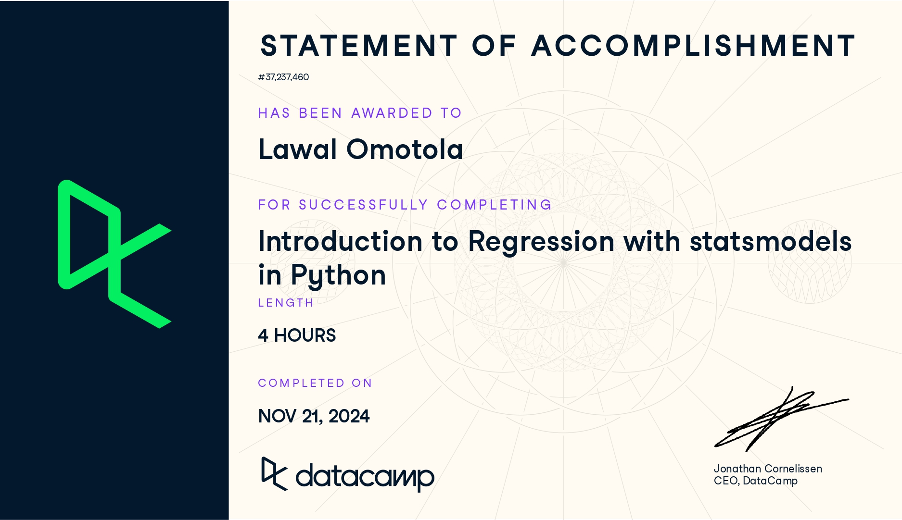
1 Data Source
Data: The datasets utilized in this course include the Taiwan Real Estate dataset, the S&P 500 Yearly Returns dataset, the Facebook Advertising Workflow dataset, and the Churn dataset. See Table 1, Table 2, Table 3, and Table 4 for the column names and descriptions for each dataset.
You’ll learn the basics of this popular statistical model, what regression is, and how linear and logistic regressions differ. You’ll then learn how to fit simple linear regression models with numeric and categorical explanatory variables, and how to describe the relationship between the response and explanatory variables using model coefficients.
2.1 Chapter 1.1: A tale of two variables
Hi, my name is Maarten and welcome to the course. You will be learning about regression, a statistical tool to analyze the relationships between variables. Let’s start with an example.
Swedish motor insurance data
This dataset on Swedish motor insurance claims is as simple as it gets. Each row represents a region in Sweden, and the two variables are the number of claims made in that region, and the total payment made by the insurance company for those claims, in Swedish krona.
Descriptive statistics
This course assumes you have experience with calculating descriptive statistics on variables in a DataFrame. For example, calculating the mean of each variable. We can use pandas for this, as shown here. The course also assumes you understand the correlation between two variables. Here, the correlation is 0 point nine one, a strong positive correlation. That means that as the number of claims increases, the total payment typically increases as well.
What is regression?
Regression models are a class of statistical models that let you explore the relationship between a response variable and some explanatory variables. That is, given some explanatory variables, you can make predictions about the value of the response variable. In the insurance dataset, if you know the number of claims made in a region, you can predict the amount that the insurance company has to pay out. That lets you do thought experiments like asking how much the company would need to pay if the number of claims increased to two hundred.
Jargon
The response variable, the one you want to make predictions on, is also known as the dependent variable or the y variable. These two terms are completely interchangeable. Explanatory variables, used to explain how the predictions will change, are also known as independent variables or x variables. Again, these terms are interchangeable.
Linear regression and logistic regression
In this course we’re going to look at two types of regression. Linear regression is used when the response variable is numeric, like in the motor insurance dataset. Logistic regression is used when the response variable is logical. That is, it takes True or False values. We’ll limit the scope further to only consider simple linear regression and simple logistic regression. This means you only have a single explanatory variable.
Visualizing pairs of variables
Before you start running regression models, it’s a good idea to visualize your dataset. To visualize the relationship between two numeric variables, you can use a scatter plot. The course assumes that your data visualization skills are strong enough that you can understand the seaborn code written here. If not, try taking one of DataCamp’s courses on seaborn before you begin this course. On the plot, you can see that the total payment increases as the number of claims increases. It would be nice to be able to describe this increase more precisely.
Adding a linear trend line
One refinement we can make is to add a trend line to the scatter plot. A trend line means fitting a line that follows the data points. In seaborn, trend lines are drawn using the regplot() function, which adds a trend line calculated using linear regression. By default, regplot() adds a confidence interval around the line, which we can remove by setting the ci argument to None. The trend line is mostly quite close to the data points, so we can say that the linear regression is a reasonable fit.
Course flow
Here’s the plan for the course. First, we’ll visualize and fit linear regressions. Then we’ll make predictions with them. Thirdly, we’ll look at ways of quantifying whether or not the model is a good fit. In the final chapter, we’ll run through this flow again using logistic regression models.
Python packages for regression
Before we dive into the first exercise, a word on Python packages for regression. Both statsmodels and scikit-learn can be used. However, statsmodels is more optimized for insight, whereas scikit-learn is more optimized for prediction. Since we’ll focus on insight, we’ll be using statsmodels in this course.
2.2 Exercise 1.1.1
Which one is the response variable?
Regression lets you predict the values of a response variable from known values of explanatory variables. Which variable you use as the response variable depends on the question you are trying to answer, but in many datasets, there will be an obvious choice for variables that would be interesting to predict. Over the next few exercises, you’ll explore a Taiwan real estate dataset with four variables.
Table 1: Taiwan real estate dataset
Variable
Meaning
dist_to_mrt_station_m
Distance to nearest MRT metro station, in meters.
n_convenience
No. of convenience stores in walking distance.
house_age_years
The age of the house, in years, in three groups.
price_twd_msq
House price per unit area, in New Taiwan dollars per meter squared.
Print taiwan_real_estate in the console to view the dataset, and decide which variable would make a good response variable.
Code
# Importing pandasimport pandas as pd# Importing the course arraystaiwan = pd.read_csv("datasets/taiwan_real_estate2.csv")# Pint taiwan_real_estate datasetprint(taiwan.head())
dist_to_mrt_m n_convenience house_age_years price_twd_msq
0 84.87882 10 30 to 45 11.467474
1 306.59470 9 15 to 30 12.768533
2 561.98450 5 0 to 15 14.311649
3 561.98450 5 0 to 15 16.580938
4 390.56840 5 0 to 15 13.040847
Note
Predicting prices is a common business task, so house price makes a good response variable.
2.3 Exercise 1.1.2
Visualizing two numeric variables
Before you can run any statistical models, it’s usually a good idea to visualize your dataset. Here, you’ll look at the relationship between house price per area and the number of nearby convenience stores using the Taiwan real estate dataset.
One challenge in this dataset is that the number of convenience stores contains integer data, causing points to overlap. To solve this, you will make the points transparent.
Instructions
Import the seaborn package, aliased as sns.
Using taiwan_real_estate, draw a scatter plot of "price_twd_msq" (y-axis) versus "n_convenience" (x-axis).
Draw a trend line calculated using linear regression. Omit the confidence interval ribbon.
Note
The scatter_kws argument, pre-filled in the exercise, makes the data points 50% transparent.
Code
# Importing pandasimport pandas as pd# Import seaborn with alias snsimport seaborn as sns# Import matplotlib.pyplot with alias pltimport matplotlib.pyplot as plt# Importing the course arraystaiwan = pd.read_csv("datasets/taiwan_real_estate2.csv")# Draw the scatter plotsns.scatterplot(x='n_convenience',y='price_twd_msq',data=taiwan)# Draw a trend line on the scatter plot of price_twd_msq vs. n_conveniencesns.regplot(x="n_convenience", y="price_twd_msq", data=taiwan, ci=None, scatter_kws={'alpha': 0.5})# Show the plotplt.show()
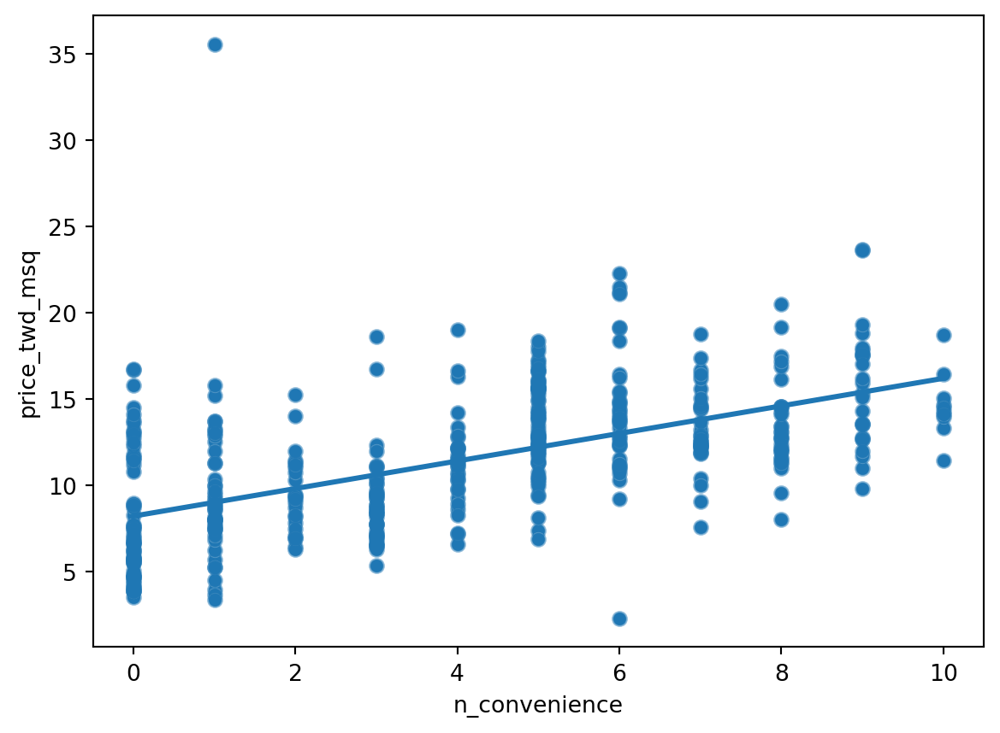
2.4 Chapter 1.2: Fitting a linear regression
You may have noticed that the linear regression trend lines in the scatter plots were straight lines. That’s a defining feature of a linear regression.
Straight lines are defined by two things
Straight lines are completely defined by two properties. The intercept is the y value when x is zero. The slope is the steepness of the line, equal to the amount y increases if you increase x by one. The equation for a straight line is that the y value is the intercept plus the slope times the x value.
Estimating the intercept
Here’s the trend line from the Swedish insurance dataset. Let’s try to estimate the intercept. To find the intercept, look at where the trend line intersects the y axis. Its less than half way to the fifty mark, so I’d guess it’s about twenty.
Estimating the slope
To estimate the slope, we need two points. To make the guessing easier, I’ve chosen points where the line is close to the gridlines. First, we calculate the change in y values between the points. One y value is about four hundred and the other is about one hundred and fifty, so the difference is two hundred and fifty. Now we do the same for the x axis. One point is at one hundred and ten, the other at forty. So the difference is seventy. To estimate the slope we divide one number by the other. Two hundred and fifty divided by seventy is about three point five, so that is our estimate for the slope. Let’s run a linear regression to check our guess.
Running a model
To run a linear regression model, you import the ols function from statsmodels.formula.api. OLS stands for ordinary least squares, which is a type of regression, and is commonly used. The function ols takes two arguments. The first argument is a formula: the response variable is written to the left of the tilde, and the explanatory variable is written to the right. The data argument takes the DataFrame containing the variables. To actually fit the model, you add the dot fit() method to your freshly created model object. When you print the resulting model, it’s helpful to use the params attribute, which contains the model’s parameters. This will result in two coefficients. These coefficients are the intercept and slope of the straight line. It seems our guesses were pretty close. The intercept is very close to our estimate of twenty. The slope, indicated here as n_claims, is three point four, slightly lower than what we guessed.
Interpreting the model coefficients
That means that we expect the total payment to be 20 + 3.4 times the number of claims. So for every additional claim, we expect the total payment to increase by three point four.
2.5 Exercise 1.2.1
Linear regression with ols()
While sns.regplot() can display a linear regression trend line, it doesn’t give you access to the intercept and slope as variables, or allow you to work with the model results as variables. That means that sometimes you’ll need to run a linear regression yourself.
Time to run your first model!
Instructions
Import the ols() function from the statsmodels.formula.api package.
Run a linear regression with price_twd_msq as the response variable, n_convenience as the explanatory variable, and taiwan as the dataset. Name it mdl_price_vs_conv.
Fit the model.
Print the parameters of the fitted model.
Code
# Importing pandasimport pandas as pd# Import seaborn with alias snsimport seaborn as sns# Import matplotlib.pyplot with alias pltimport matplotlib.pyplot as plt# Import the ols functionfrom statsmodels.formula.api import ols# Importing the course arraystaiwan = pd.read_csv("datasets/taiwan_real_estate2.csv")# Create the model objectmdl_price_vs_conv = ols("price_twd_msq ~ n_convenience", data=taiwan)# Fit the modelmdl_price_vs_conv = mdl_price_vs_conv.fit()# Print the parameters of the fitted modelprint(mdl_price_vs_conv.params)
The model had an Intercept coefficient of 8.2242. What does this mean?
Answer: On average, a house with zero convenience stores nearby had a price of 8.2242 TWD per square meter.
The model had an n_convenience coefficient of 0.7981. What does this mean?
Answer: If you increase the number of nearby convenience stores by one, then the expected increase in house price is 0.7981 TWD per square meter.
The intercept is positive, so a house with no convenience stores nearby still has a positive price. The coefficient for convenience stores is also positive, so as the number of nearby convenience stores increases, so does the price of the house.
So far we looked at running a linear regression using a numeric explanatory variable. Now let’s look at what happens with a categorical explanatory variable.
Fish dataset
Let’s take a look at some data on the masses of fish sold at a fish market. Each row of data contains the species of a fish, and its mass. The mass will be the response variable.
Visualizing 1 numeric and 1 categorical variable
To visualize the data, scatter plots aren’t ideal because species is categorical. Instead, we can draw a histogram for each of the species. To give a separate panel to each species, I use seaborn’s displot function. This takes a DataFrame as the data argument, the variable of interest as x, and the variable you want to split on as col. It also takes an optional col_wrap argument to specify the number of plots per row. Because the dataset is fairly small, I also set the bins argument to nine. By default, displot creates histograms.
Summary statistics: mean mass by species
Let’s calculate some summary statistics. First we group by species, then we calculate their mean masses. You can see that the mean mass of a bream is six hundred and eighteen grams. The mean mass for a perch is three hundred and eighty two grams, and so on.
Linear regression
Let’s run a linear regression using mass as the response variable and species as the explanatory variable. The syntax is the same: you call ols(), passing a formula with the response variable on the left and the explanatory variable on the right, and setting the data argument to the DataFrame. We fit the model using the fit method, and retrieve the parameters using .params on the fitted model. This time we have four coefficients: an intercept, and one for three of the fish species. A coefficient for bream is missing, but the number for the intercept looks familiar. The intercept is the mean mass of the bream that you just calculated. You might wonder what the other coefficients are, and why perch has a negative coefficient, since fish masses can’t be negative.
Model with or without an intercept
The coefficients for each category are calculated relative to the intercept. This way of displaying results can be useful for models with multiple explanatory variables, but for simple linear regression, it’s just confusing. Fortunately, we can fix it. By changing the formula slightly to append “plus zero”, we specify that all the coefficients should be given relative to zero. Equivalently, it means we are fitting a linear regression without an intercept term. If you subtract two hundred and thirty five point fifty-nine from six hundred and seventeen point eighty-three, you get three hundred and eighty two point twenty four, which is the mean mass of a perch. Now these coefficients make more sense. They are all just the mean masses for each species. This is a reassuringly boring result. When you only have a single, categorical explanatory variable, the linear regression coefficients are simply the means of each category.
2.7 Exercise 1.3.1
Visualizing numeric vs. categorical
If the explanatory variable is categorical, the scatter plot that you used before to visualize the data doesn’t make sense. Instead, a good option is to draw a histogram for each category.
The Taiwan dataset has a categorical variable in the form of the age of each house. The ages have been split into 3 groups: 0 to 15 years, 15 to 30 years, and 30 to 45 years.
Instructions
Using taiwan, plot a histogram of price_twd_msq with 10 bins. Split the plot by house_age_years to give 3 panels.
Code
# Importing pandasimport pandas as pd# Import seaborn with alias snsimport seaborn as sns# Import matplotlib.pyplot with alias pltimport matplotlib.pyplot as plt# Importing the course arraystaiwan = pd.read_csv("datasets/taiwan_real_estate2.csv")# Histograms of price_twd_msq with 10 bins, split by the age of each housesns.displot(data=taiwan, x="price_twd_msq", col="house_age_years", col_wrap=3, bins=10 )# Show the plotplt.show()
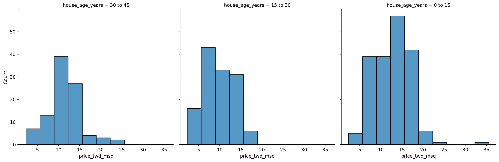
Note
It appears that new houses are the most expensive on average, and the medium-aged ones (15 to 30 years) are the cheapest.
2.8 Exercise 1.3.2
Calculating means by category
A good way to explore categorical variables further is to calculate summary statistics for each category. For example, you can calculate the mean and median of your response variable, grouped by a categorical variable. As such, you can compare each category in more detail.
Here, you’ll look at grouped means for the house prices in the Taiwan real estate dataset. This will help you understand the output of a linear regression with a categorical variable.
Instructions
Group taiwan1 by house_age_years and calculate the mean price (price_twd_msq) for each age group. Assign the result to mean_price_by_age.
Print the result and inspect the output
Code
# Importing pandasimport pandas as pd# Import seaborn with alias snsimport seaborn as sns# Import matplotlib.pyplot with alias pltimport matplotlib.pyplot as plt# Importing the course arraystaiwan = pd.read_csv("datasets/taiwan_real_estate2.csv")# Calculate the mean of price_twd_msq, grouped by house agemean_price_by_age = taiwan.groupby("house_age_years")["price_twd_msq"].mean()# Print the resultprint(mean_price_by_age)
house_age_years
0 to 15 12.637471
15 to 30 9.876743
30 to 45 11.393264
Name: price_twd_msq, dtype: float64
2.9 Exercise 1.3.3
Linear regression with a categorical explanatory variable
Great job calculating those grouped means! As mentioned in the last video, the means of each category will also be the coefficients of a linear regression model with one categorical variable. You’ll prove that in this exercise.
To run a linear regression model with categorical explanatory variables, you can use the same code as with numeric explanatory variables. The coefficients returned by the model are different, however. Here you’ll run a linear regression on the Taiwan real estate dataset.
Instructions
Run and fit a linear regression with price_twd_msq as the response variable, house_age_years as the explanatory variable, and taiwan as the dataset. Assign to mdl_price_vs_age.
Print its parameters.
Update the model formula so that no intercept is included in the model. Assign to mdl_price_vs_age0.
Print its parameters.
Code
# Importing pandasimport pandas as pd# Import seaborn with alias snsimport seaborn as sns# Import matplotlib.pyplot with alias pltimport matplotlib.pyplot as plt# Import the ols functionfrom statsmodels.formula.api import ols# Importing the course arraystaiwan = pd.read_csv("datasets/taiwan_real_estate2.csv")# Create the model, fit itmdl_price_vs_age = ols("price_twd_msq ~ house_age_years", data=taiwan).fit()# Print the parameters of the fitted modelprint(mdl_price_vs_age.params)# Update the model formula to remove the interceptmdl_price_vs_age0 = ols("price_twd_msq ~ house_age_years + 0", data=taiwan).fit()# Print the parameters of the fitted modelprint(mdl_price_vs_age0.params)
Intercept 12.637471
house_age_years[T.15 to 30] -2.760728
house_age_years[T.30 to 45] -1.244207
dtype: float64
house_age_years[0 to 15] 12.637471
house_age_years[15 to 30] 9.876743
house_age_years[30 to 45] 11.393264
dtype: float64
Note
The coefficients of the model are just the means of each category you calculated previously.
3 Chapter 2: Predictions and model objects
In this chapter, you’ll discover how to use linear regression models to make predictions on Taiwanese house prices and Facebook advert clicks. You’ll also grow your regression skills as you get hands-on with model objects, understand the concept of “regression to the mean”, and learn how to transform variables in a dataset.
3.1 Chapter 2.1: Making predictions
The big benefit of running models rather than simply calculating descriptive statistics is that models let you make predictions.
The fish dataset: bream
Here’s the fish dataset again. This time, we’ll look only at the bream data. There’s a new explanatory variable too: the length of each fish, which we’ll use to predict the mass of the fish.
Plotting mass vs. length
Scatter plot of mass versus length for the bream data, with a linear trend line.
Running the model
Before we can make predictions, we need a fitted model. As before, we call ols with a formula and the dataset, after which we add dot fit. The response, mass in grams, goes on the left-hand side of the formula, and the explanatory variable, length in centimeters, goes on the right. We need to assign the result to a variable to reuse later on. To view the coefficients of the model, we use the params attribute in a print call.
Data on explanatory values to predict
The principle behind predicting is to ask questions of the form “if I set the explanatory variables to these values, what value would the response variable have?”. That means that the next step is to choose some values for the explanatory variables. To create new explanatory data, we need to store our explanatory variables of choice in a pandas DataFrame. You can use a dictionary to specify the columns. For this model, the only explanatory variable is the length of the fish. You can specify an interval of values using the np dot arange function, taking the start and end of the interval as arguments. Notice that the end of the interval does not include this value. Here, I specified a range of twenty to forty centimeters.
Call predict()
The next step is to call predict on the model, passing the DataFrame of explanatory variables as the argument. The predict function returns a Series of predictions, one for each row of the explanatory data.
Predicting inside a DataFrame
Having a single column of predictions isn’t that helpful to work with. It’s easier to work with if the predictions are in a DataFrame alongside the explanatory variables. To do this, you can use the pandas assign method. It returns a new object with all original columns in addition to new ones. You start with the existing column, explanatory_data. Then, you use dot assign to add a new column, named after the response variable, mass_g. You calculate it with the same predict code from the previous slide. The resulting DataFrame contains both the explanatory variable and the predicted response. Now we can answer questions like “how heavy would we expect a bream with length twenty three centimeters to be?”, even though the original dataset didn’t include a bream of that exact length. Looking at the prediction data, you can see that the predicted mass is two hundred and nineteen grams.
Showing predictions
Let’s include the predictions we just made on the scatter plot. To plot multiple layers, we set a matplotlib figure object called fig before calling regplot and scatterplot. As a result, the plt.show call will then plot both graphs on the same figure. I’ve marked the prediction points in red squares to distinguish them from the actual data points. Notice that the predictions lie exactly on the trend line.
Extrapolating
All the fish were between twenty three and thirty eight centimeters, but the linear model allows us to make predictions outside that range. This is called extrapolating. Let’s see what prediction we get for a ten centimeter bream. To achieve this, you first create a DataFrame with a single observation of 10 cm. You then predict the corresponding mass as before. Wow. The predicted mass is almost minus five hundred grams! This is obviously not physically possible, so the model performs poorly here. Extrapolation is sometimes appropriate, but can lead to misleading or ridiculous results. You need to understand the context of your data in order to determine whether it is sensible to extrapolate.
3.2 Exercise 2.1.1
Predicting house prices
Perhaps the most useful feature of statistical models like linear regression is that you can make predictions. That is, you specify values for each of the explanatory variables, feed them to the model, and get a prediction for the corresponding response variable. The code flow is as follows.
Here, you’ll make predictions for the house prices in the Taiwan real estate dataset.
Instructions
Import the numpy package using the alias np.
Create a DataFrame of explanatory data, where the number of convenience stores, n_convenience, takes the integer values from zero to ten.
Print explanatory_data.
Use the model mdl_price_vs_conv to make predictions from explanatory_data and store it as price_twd_msq.
Print the predictions.
Create a DataFrame of predictions named prediction_data. Start with explanatory_data, then add an extra column, price_twd_msq, containing the predictions you created in the previous step.
Code
# Import numpy with alias npimport numpy as np# Importing pandasimport pandas as pd# Import seaborn with alias snsimport seaborn as sns# Import matplotlib.pyplot with alias pltimport matplotlib.pyplot as plt# Import the ols functionfrom statsmodels.formula.api import ols# Importing the course arraystaiwan = pd.read_csv("datasets/taiwan_real_estate2.csv")# Create the model objectmdl_price_vs_conv = ols("price_twd_msq ~ n_convenience", data=taiwan)# Fit the modelmdl_price_vs_conv = mdl_price_vs_conv.fit()# Print the parameters of the fitted modelmdl_price_vs_conv.params# Create the explanatory_data explanatory_data = pd.DataFrame({'n_convenience': np.arange(0,11)})# Use mdl_price_vs_conv to predict with explanatory_data, call it price_twd_msqprice_twd_msq = mdl_price_vs_conv.predict(explanatory_data)# Print itprint(price_twd_msq)# Create prediction_dataprediction_data = explanatory_data.assign( price_twd_msq = mdl_price_vs_conv.predict(explanatory_data))# Print the resultprint(prediction_data)
The prediction DataFrame you created contains a column of explanatory variable values and a column of response variable values. That means you can plot it on the same scatter plot of response versus explanatory data values.
Instructions
Create a new figure to plot multiple layers.
Extend the plotting code to add points for the predictions in prediction_data. Color the points red.
Display the layered plot.
Code
# Import numpy with alias npimport numpy as np# Importing pandasimport pandas as pd# Import seaborn with alias snsimport seaborn as sns# Import matplotlib.pyplot with alias pltimport matplotlib.pyplot as plt# Import the ols functionfrom statsmodels.formula.api import ols# Importing the course arraystaiwan = pd.read_csv("datasets/taiwan_real_estate2.csv")# Create the model objectmdl_price_vs_conv = ols("price_twd_msq ~ n_convenience", data=taiwan)# Fit the modelmdl_price_vs_conv = mdl_price_vs_conv.fit()# Print the parameters of the fitted modelmdl_price_vs_conv.params# Create the explanatory_data explanatory_data = pd.DataFrame({'n_convenience': np.arange(0,11)})# Use mdl_price_vs_conv to predict with explanatory_data, call it price_twd_msqprice_twd_msq = mdl_price_vs_conv.predict(explanatory_data)# Create prediction_dataprediction_data = explanatory_data.assign( price_twd_msq = mdl_price_vs_conv.predict(explanatory_data))# Create a new figure, figfig = plt.figure()sns.regplot(x="n_convenience", y="price_twd_msq", data=taiwan, ci=None)# Add a scatter plot layer to the regplotsns.scatterplot(x="n_convenience", y="price_twd_msq", data= prediction_data, color="red")# Show the layered plotplt.show()
3.4 Exercise 2.1.3
The limits of prediction
In the last exercise, you made predictions on some sensible, could-happen-in-real-life, situations. That is, the cases when the number of nearby convenience stores were between zero and ten. To test the limits of the model’s ability to predict, try some impossible situations.
Use the console to try predicting house prices from mdl_price_vs_conv when there are -1 convenience stores. Do the same for 2.5 convenience stores. What happens in each case?
Instructions
Create some impossible explanatory data. Define a DataFrame impossible with one column, n_convenience, set to -1 in the first row, and 2.5 in the second row.
Code
# Import numpy with alias npimport numpy as np# Importing pandasimport pandas as pd# Import seaborn with alias snsimport seaborn as sns# Import matplotlib.pyplot with alias pltimport matplotlib.pyplot as plt# Import the ols functionfrom statsmodels.formula.api import ols# Importing the course arraystaiwan = pd.read_csv("datasets/taiwan_real_estate2.csv")# Create the model objectmdl_price_vs_conv = ols("price_twd_msq ~ n_convenience", data=taiwan)# Fit the modelmdl_price_vs_conv = mdl_price_vs_conv.fit()# Print the parameters of the fitted modelmdl_price_vs_conv.params# Define a DataFrame impossibleimpossible = pd.DataFrame({"n_convenience":[-1,2.5]})# Try making predictions on your two impossible cases. What happens?pred_impossible = impossible.assign(price_twd_msq=mdl_price_vs_conv.predict(impossible))print(pred_impossible)
Linear models don’t know what is possible or not in real life. That means that they can give you predictions that don’t make any sense when applied to your data. You need to understand what your data means in order to determine whether a prediction is nonsense or not.
3.5 Chapter 2.2: Working with model objects
The model objects created by ols contain a lot of information. In this video, you’ll see how to extract it.
.params attribute
You already learned how to extract the coefficients or parameters from your fitted model. You add the dot params attribute, which will return a pandas Series including your intercept and slope.
.fittedvalues attribute
"Fitted values" is jargon for predictions on the original dataset used to create the model. Access them with the fittedvalues attribute. The result is a pandas Series of length thirty five, which is the number of rows in the bream dataset. The fittedvalues attribute is essentially a shortcut for taking the explanatory variable columns from the dataset, then feeding them to the predict function.
.resid attribute
"Residuals" are a measure of inaccuracy in the model fit, and are accessed with the resid attribute. Like fitted values, there is one residual for each row of the dataset. Each residual is the actual response value minus the predicted response value. In this case, the residuals are the masses of breams, minus the fitted values. I illustrated the residuals as red lines on the regression plot. Each vertical line represents a single residual. You’ll see more on how to use the fitted values and residuals to assess the quality of your model in Chapter 3, Section 4.
.summary()
The summary method shows a more extended printout of the details of the model. Let’s step through this piece by piece.
.summary() part 1
First, you see the dependent variable(s) that were used in the model, in addition to the type of regression. You also see some metrics on the performance of the model. These will be discussed in the next chapter.
.summary() part 2
In the second part of the summary, you see details of the coefficients. The numbers in the first column are the ones contained in the params attribute. The numbers in the fourth column are the p-values, which refer to statistical significance. You can learn about them in DataCamp’s courses on inference. The last part of the summary are diagnostic statistics that are outside the scope of this course.
3.6 Exercise 2.2.1
Extracting model elements
The model object created by ols() contains many elements. In order to perform further analysis on the model results, you need to extract its useful bits. The model coefficients, the fitted values, and the residuals are perhaps the most important pieces of the linear model object.
Instructions
Print the parameters of mdl_price_vs_conv.
Print the fitted values of mdl_price_vs_conv.
Print the residuals of mdl_price_vs_conv.
Print a summary of mdl_price_vs_conv.
Code
# Import numpy with alias npimport numpy as np# Importing pandasimport pandas as pd# Import seaborn with alias snsimport seaborn as sns# Import matplotlib.pyplot with alias pltimport matplotlib.pyplot as plt# Import the ols functionfrom statsmodels.formula.api import ols# Importing the course arraystaiwan = pd.read_csv("datasets/taiwan_real_estate2.csv")# Create the model objectmdl_price_vs_conv = ols("price_twd_msq ~ n_convenience", data=taiwan)# Fit the modelmdl_price_vs_conv = mdl_price_vs_conv.fit()# Print the model parameters of mdl_price_vs_convprint(mdl_price_vs_conv.params)# Print the fitted values of mdl_price_vs_convprint(mdl_price_vs_conv.fittedvalues)# Print the residuals of mdl_price_vs_convprint(mdl_price_vs_conv.resid)# Print a summary of mdl_price_vs_convprint(mdl_price_vs_conv.summary())
You can manually calculate the predictions from the model coefficients. When making predictions in real life, it is better to use .predict(), but doing this manually is helpful to reassure yourself that predictions aren’t magic - they are simply arithmetic.
In fact, for a simple linear regression, the predicted value is just the intercept plus the slope times the explanatory variable.
Get the coefficients/parameters of mdl_price_vs_conv, assigning to coeffs.
Get the intercept, which is the first element of coeffs, assigning to intercept.
Get the slope, which is the second element of coeffs, assigning to slope.
Manually predict price_twd_msq using the formula, specifying the intercept, slope, and explanatory_data.
Run the code to compare your manually calculated predictions to the results from .predict().
Code
# Import numpy with alias npimport numpy as np# Importing pandasimport pandas as pd# Import seaborn with alias snsimport seaborn as sns# Import matplotlib.pyplot with alias pltimport matplotlib.pyplot as plt# Import the ols functionfrom statsmodels.formula.api import ols# Importing the course arraystaiwan = pd.read_csv("datasets/taiwan_real_estate2.csv")# Create the model objectmdl_price_vs_conv = ols("price_twd_msq ~ n_convenience", data=taiwan)# Fit the modelmdl_price_vs_conv = mdl_price_vs_conv.fit()# Create the explanatory_data explanatory_data = pd.DataFrame({'n_convenience': np.arange(0,11)})# Get the coefficients of mdl_price_vs_convcoeffs = mdl_price_vs_conv.params# Get the interceptintercept = coeffs[0]# Get the slopeslope = coeffs[1]# Manually calculate the predictionsprice_twd_msq = intercept + slope * explanatory_dataprint(price_twd_msq)# Compare to the results from .predict()print(price_twd_msq.assign(predictions_auto=mdl_price_vs_conv.predict(explanatory_data)))
Let’s take a short break from thinking about regression modeling, to a related concept called “regression to the mean”. Regression to the mean is a property of the data, not a type of model, but linear regression can be used to quantify its effect.
The concept
You already saw that each response value in your dataset is equal to the sum of a fitted value, that is, the prediction by the model, and a residual, which is how much the model missed by. Loosely speaking, these two values are the parts of the response that you’ve explained why it has that value, and the parts you couldn’t explain with your model. There are two possibilities for why you have a residual. Firstly, it could just be because your model isn’t great. Particularly in the case of simple linear regression where you only have one explanatory variable, there is often room for improvement. However, it usually isn’t possible or desirable to have a perfect model because the world contains a lot of randomness, and your model shouldn’t capture that. In particular, extreme responses are often due to randomness or luck. That means that extremes don’t persist over time, because eventually the luck runs out. This is the concept of regression to the mean. Eventually, extreme cases will look more like average cases.
Pearson’s father son dataset
Here’s a classic dataset on the heights of fathers and their sons, collected by Karl Pearson, the statistician who the Pearson correlation coefficient is named after. The dataset consists of over a thousand pairs of heights, and was collected as part of a nineteenth century scientific work on biological inheritance. It lets us answer the question, “do tall fathers have tall sons?”, and “do short fathers have short sons?”.
1 Adapted from
Scatter plot
Here’s a scatter plot of the sons’ heights versus the fathers’ heights. I’ve added a line where the son’s and father’s heights are equal, using plt.axline. The first two arguments determine the intercept and slope, while the linewidth and color arguments help it stand out. I also used plt.axis with the ‘equal’ argument so that one centimeter on the x-axis appears the same as one centimeter on the y-axis. If sons always had the same height as their fathers, all the points would lie on this green line.
Adding a regression line
Let’s add a black linear regression line to the plot using regplot. You can see that the regression line isn’t as steep as the first line. On the left of the plot, the black line is above the green line, suggesting that for very short fathers, their sons are taller than them on average. On the far right of the plot, the black line is below the green line, suggesting that for very tall fathers, their sons are shorter than them on average.
Running a regression
Running a model quantifies the predictions of how much taller or shorter the sons will be. Here, the sons’ heights are the response variable, and the fathers’ heights are the explanatory variable.
Making predictions
Now we can make predictions. Consider the case of a really tall father, at one hundred and ninety centimeters. At least, that was really tall in the late nineteenth century. The predicted height of the son is one hundred and eighty-three centimeters. Tall, but not quite as tall as his dad. Similarly, the prediction for a one hundred and fifty-centimeter father is one hundred and sixty-three centimeters. Short, but not quite as short as his dad. In both cases, the extreme value became less extreme in the next generation — a perfect example of regression to the mean.
3.9 Exercise 2.3.1
Plotting consecutive portfolio returns
Regression to the mean is also an important concept in investing. Here you’ll look at the annual returns from investing in companies in the Standard and Poor 500 index (S&P 500), in 2018 and 2019.
The sp500_yearly_returns dataset contains three columns:
Table 2: sp500_yearly_returns dataset
variable
meaning
symbol
Stock ticker symbol uniquely identifying the company.
return_2018
A measure of investment performance in 2018.
return_2019
A measure of investment performance in 2019.
A positive number for the return means the investment increased in value; negative means it lost value.
A naive prediction might be that the investment performance stays the same from year to year, lying on the y equals x line.
Instructions
Create a new figure, fig, to enable plot layering.
Generate a line at y equals x. This has been done for you.
Using sp500_yearly_returns, draw a scatter plot ofreturn_2019 vs. return_2018 with a linear regression trend line, without a standard error ribbon.
Set the axes so that the distances along the x and y axes look the same.
Code
# Importing pandasimport pandas as pd# Import seaborn with alias snsimport seaborn as sns# Import matplotlib.pyplot with alias pltimport matplotlib.pyplot as plt# Import the ols functionfrom statsmodels.formula.api import olssp500 = pd.read_csv("datasets/sp500_yearly_returns.csv")# Create a new figure, figfig = plt.figure()# Plot the first layer: y = xplt.axline(xy1=(0,0), slope=1, linewidth=2, color="green")# Add scatter plot with linear regression trend linesns.regplot(x="return_2018",y="return_2019",data=sp500, ci=None,line_kws={"color":"black"})# Set the axes so that the distances along the x and y axes look the sameplt.axis("equal")# Show the plotplt.show()
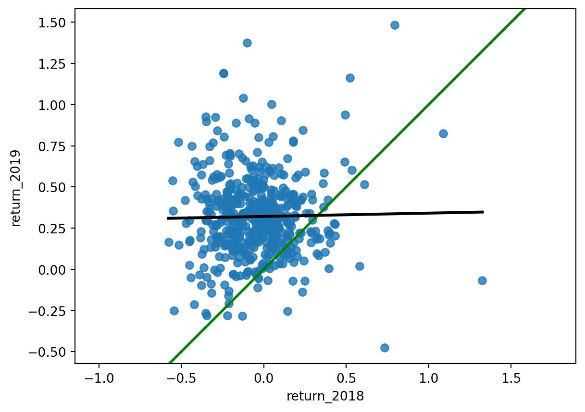
Note
The regression trend line looks very different to the y equals x line. As the financial advisors say, “Past performance is no guarantee of future results.”
3.10 Exercise 2.3.2
Modeling consecutive returns
Let’s quantify the relationship between returns in 2019 and 2018 by running a linear regression and making predictions. By looking at companies with extremely high or extremely low returns in 2018, we can see if their performance was similar in 2019.
Instructions
Run a linear regression on return_2019 versus return_2018 using sp500_yearly_returns and fit the model. Assign to mdl_returns.
Print the parameters of the model.
Create a DataFrame named explanatory_data. Give it one column (return_2018) with 2018 returns set to a list containing -1, 0, and 1.
Use mdl_returns to predict with explanatory_data in a print() call.
Code
# Importing pandasimport pandas as pd# Import seaborn with alias snsimport seaborn as sns# Import matplotlib.pyplot with alias pltimport matplotlib.pyplot as plt# Import the ols functionfrom statsmodels.formula.api import olssp500 = pd.read_csv("datasets/sp500_yearly_returns.csv")# Run a linear regression on return_2019 vs. return_2018 using sp500_yearly_returnsmdl_returns = ols("return_2019 ~ return_2018", data = sp500).fit()# Print the parametersprint(mdl_returns.params)# Create a DataFrame with return_2018 at -1, 0, and 1 explanatory_data = pd.DataFrame({"return_2018": [-1,0,1]})# Use mdl_returns to predict with explanatory_dataprint(mdl_returns.predict(explanatory_data))
Investments that gained a lot in value in 2018 on average gained only a small amount in 2019. Similarly, investments that lost a lot of value in 2018 on average also gained a small amount in 2019.
3.11 Chapter 2.4: Transforming variables
Sometimes, the relationship between the explanatory variable and the response variable may not be a straight line. To fit a linear regression model, you may need to transform the explanatory variable or the response variable, or both of them.
Perch dataset
Consider the perch in the fish dataset.
It’s not a linear relationship
The upward curve in the mass versus length data prevents us drawing a straight line that follows it closely.
Bream vs. perch
To understand why the bream had a strong linear relationship between mass and length, but the perch didn’t, you need to understand your data. I’m not a fish expert, but looking at the picture of the bream on the left, it has a very narrow body. I guess that as bream get bigger, they mostly get longer and not wider. By contrast, the perch on the right has a round body, so I guess that as it grows, it gets fatter and taller as well as longer. Since the perches are growing in three directions at once, maybe the length cubed will give a better fit.
Plotting mass vs. length cubed
Here’s an update to the previous plot. The only change is that the x-axis is now length to the power of three. To do this, first create an additional column where you calculate the length cubed. Then replace this newly created column in your regplot call. The data points fit the line much better now, so we’re ready to run a model.
Modeling mass vs. length cubed
To model this transformation, we replace the original length variable with the cubed length variable. We then fit the model and extract its coefficients.
Predicting mass vs. length cubed
We create the explanatory DataFrame in the same way as usual. Notice that you specify the lengths cubed. We can also add the untransformed lengths column for reference. The code for adding predictions is the same assign and predict combination as you’ve seen before.
Plotting mass vs. length cubed
The predictions have been added to the plot of mass versus length cubed as red points. As you might expect, they follow the line drawn by regplot. It gets more interesting on the original x-axis. Notice how the red points curve upwards to follow the data. Your linear model has non-linear predictions, after the transformation is undone.
Facebook advertising dataset
Let’s try one more example using a Facebook advertising dataset. The flow of online advertising is that you pay money to Facebook, who show your advert to Facebook users. If a person sees the advert, it’s called an impression. Then some people who see the advert will click on it.
Table 3: ad_conversion dataset
Variable
Meaning
spent_usd
Money paid to Facebook for online advertisement.
n_impressions
number of times each Facebook user sees your advert.
n_clicks
number of times each Facebook user who saw your advert clicked on it.
Plot is cramped
Let’s look at impressions versus spend. If we draw the standard plot, the majority of the points are crammed into the bottom-left of the plot, making it difficult to assess whether there is a good fit or not.
Square root vs square root
By transforming both the variables with square roots, the data are more spread out throughout the plot, and the points follow the line fairly closely. Square roots are a common transformation when your data has a right-skewed distribution.
Modeling and predicting
Running the model and creating the explanatory dataset are the same as usual, but notice the use of the transformed variables in the formula and DataFrame. I also included the untransformed spent_usd variable for reference. Prediction requires an extra step. Because we took the square root of the response variable (not just the explanatory variable), the predict function will predict the square root of the number of impressions. That means that we have to undo the square root by squaring the predicted responses. Undoing the transformation of the response is called back transformation.
3.12 Exercise 2.4.1
Transforming the explanatory variable
If there is no straight-line relationship between the response variable and the explanatory variable, it is sometimes possible to create one by transforming one or both of the variables. Here, you’ll look at transforming the explanatory variable.
You’ll take another look at the Taiwan real estate dataset, this time using the distance to the nearest MRT (metro) station as the explanatory variable. You’ll use code to make every commuter’s dream come true: shortening the distance to the metro station by taking the square root. Take that, geography!
Instructions
Look at the plot.
Add a new column to taiwan called sqrt_dist_to_mrt_m that contains the square root of dist_to_mrt_m.
Create the same scatter plot as the first one, but use the new transformed variable on the x-axis instead.
Code
# Import numpy with alias npimport numpy as np# Importing pandasimport pandas as pd# Import seaborn with alias snsimport seaborn as sns# Import matplotlib.pyplot with alias pltimport matplotlib.pyplot as plt# Import the ols functionfrom statsmodels.formula.api import ols# Importing the course arraystaiwan = pd.read_csv("datasets/taiwan_real_estate2.csv")# Create sqrt_dist_to_mrt_mtaiwan["sqrt_dist_to_mrt_m"] = np.sqrt(taiwan["dist_to_mrt_m"])plt.figure()# Plot using the original variablesns.regplot(x="dist_to_mrt_m", y="price_twd_msq", data=taiwan, ci=None)plt.figure()# Plot using the transformed variablesns.regplot(x="sqrt_dist_to_mrt_m", y="price_twd_msq", data=taiwan, ci=None)plt.show()
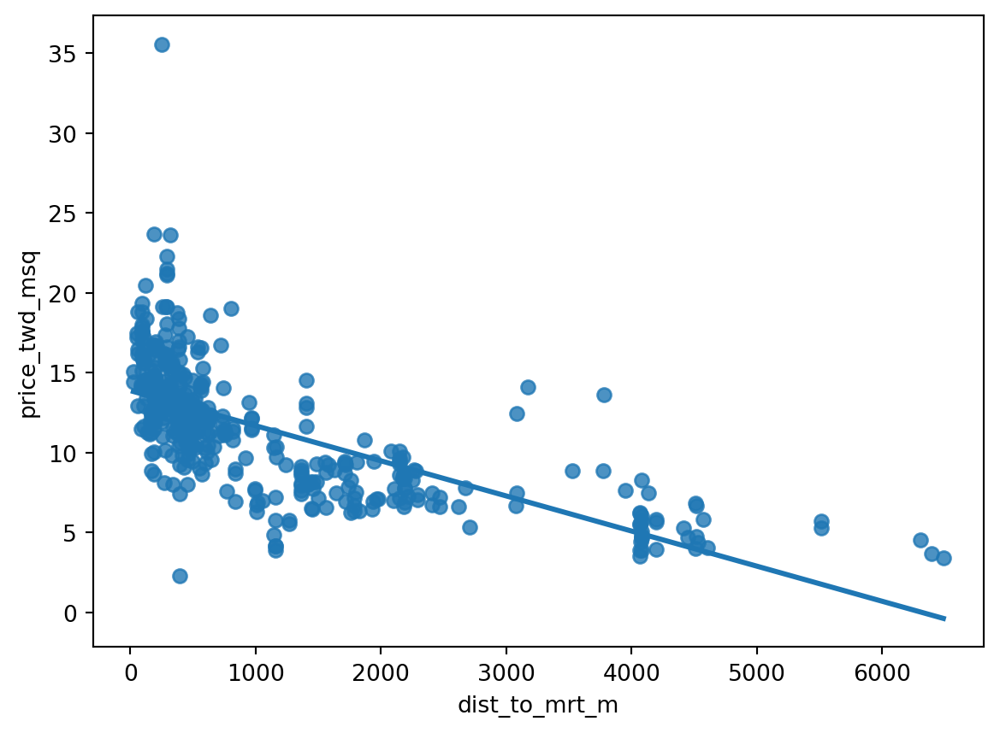
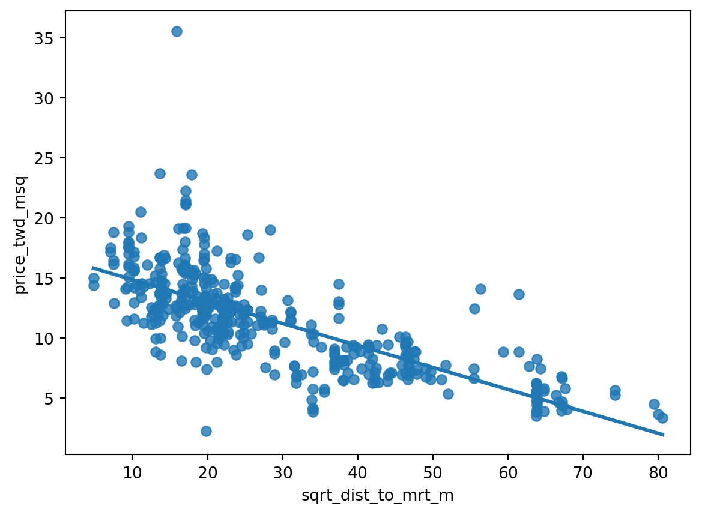
Run a linear regression of price_twd_msq versus the square root of dist_to_mrt_m using taiwan.
Print the parameters.
Create a DataFrame of predictions named prediction_data by adding a column of predictions called price_twd_msq to explanatory_data. Predict using mdl_price_vs_dist and explanatory_data.
Print the predictions.
Add a layer to your plot containing points from prediction_data, colored "red".
Code
# Import numpy with alias npimport numpy as np# Importing pandasimport pandas as pd# Import seaborn with alias snsimport seaborn as sns# Import matplotlib.pyplot with alias pltimport matplotlib.pyplot as plt# Import the ols functionfrom statsmodels.formula.api import ols# Importing the course arraystaiwan = pd.read_csv("datasets/taiwan_real_estate2.csv")# Create sqrt_dist_to_mrt_mtaiwan["sqrt_dist_to_mrt_m"] = np.sqrt(taiwan["dist_to_mrt_m"])# Run a linear regression of price_twd_msq vs. square root of dist_to_mrt_m using taiwan_real_estatemdl_price_vs_dist = ols("price_twd_msq ~ sqrt_dist_to_mrt_m",data=taiwan).fit()# Print the parametersprint(mdl_price_vs_dist.params)explanatory_data = pd.DataFrame({"sqrt_dist_to_mrt_m": np.sqrt(np.arange(0, 81, 10) **2),"dist_to_mrt_m": np.arange(0, 81, 10) **2})# Create prediction_data by adding a column of predictions to explantory_dataprediction_data = explanatory_data.assign( price_twd_msq = mdl_price_vs_dist.predict(explanatory_data))# Print the resultprint(prediction_data)fig = plt.figure()sns.regplot(x="sqrt_dist_to_mrt_m", y="price_twd_msq", data=taiwan, ci=None)# Add a layer of your prediction pointssns.scatterplot(x="sqrt_dist_to_mrt_m", y="price_twd_msq", data=prediction_data,color="red")plt.show()
By transforming the explanatory variable, the relationship with the response variable became linear, and so a linear regression became an appropriate model.
3.13 Exercise 2.4.2
Transforming the response variable too
The response variable can be transformed too, but this means you need an extra step at the end to undo that transformation. That is, you “back transform” the predictions.
In the lecture, you saw the first step of the digital advertising workflow: spending money to buy ads, and counting how many people see them (the “impressions”). The next step is determining how many people click on the advert after seeing it.
Instructions
Look at the plot.
Create a qdrt_n_impressions column using n_impressions raised to the power of 0.25.
Create a qdrt_n_clicks column using n_clicks raised to the power of 0.25.
Create a regression plot using the transformed variables. Do the points track the line more closely?
Run a linear regression of qdrt_n_clicks versus qdrt_n_impressions using ad_conversion and assign it to mdl_click_vs_impression.
Create the prediction data
Code
# Import numpy with alias npimport numpy as np# Importing pandasimport pandas as pd# Import seaborn with alias snsimport seaborn as sns# Import matplotlib.pyplot with alias pltimport matplotlib.pyplot as plt# Import the ols functionfrom statsmodels.formula.api import olsad_conversion = pd.read_csv("datasets/ad_conversion.csv")# Create qdrt_n_impressions and qdrt_n_clicksad_conversion["qdrt_n_impressions"] = ad_conversion["n_impressions"] **0.25ad_conversion["qdrt_n_clicks"] = ad_conversion["n_clicks"] **0.25plt.figure()# Plot using the transformed variablessns.regplot(x="n_impressions",y="n_clicks",data=ad_conversion,ci=None)plt.figure()# Plot using the transformed variablessns.regplot(x="qdrt_n_impressions",y="qdrt_n_clicks",data=ad_conversion,ci=None)plt.show()# Run a linear regression of your transformed variablesmdl_click_vs_impression = ols("qdrt_n_clicks ~ qdrt_n_impressions",data=ad_conversion).fit()explanatory_data = pd.DataFrame({"qdrt_n_impressions": np.arange(0, 3e6+1, 5e5) **.25,"n_impressions": np.arange(0, 3e6+1, 5e5)})# Complete prediction_dataprediction_data = explanatory_data.assign( qdrt_n_clicks = mdl_click_vs_impression.predict(explanatory_data))# Print the resultprint(prediction_data)
Terrific transformation! Since the response variable has been transformed, you’ll now need to back-transform the predictions to correctly interpret your results.
3.14 Exercise 2.4.3
Back transformation
In the previous exercise, you transformed the response variable, ran a regression, and made predictions. But you’re not done yet! In order to correctly interpret and visualize your predictions, you’ll need to do a back-transformation.
Instructions
Back transform the response variable in prediction_data by raising qdrt_n_clicks to the power 4 to get n_clicks.
Edit the plot to add a layer of points from prediction_data, colored "red".
Code
# Import numpy with alias npimport numpy as np# Importing pandasimport pandas as pd# Import seaborn with alias snsimport seaborn as sns# Import matplotlib.pyplot with alias pltimport matplotlib.pyplot as plt# Import the ols functionfrom statsmodels.formula.api import olsad_conversion = pd.read_csv("datasets/ad_conversion.csv")# Create qdrt_n_impressions and qdrt_n_clicksad_conversion["qdrt_n_impressions"] = ad_conversion["n_impressions"] **0.25ad_conversion["qdrt_n_clicks"] = ad_conversion["n_clicks"] **0.25# Run a linear regression of your transformed variablesmdl_click_vs_impression = ols("qdrt_n_clicks ~ qdrt_n_impressions",data=ad_conversion).fit()explanatory_data = pd.DataFrame({"qdrt_n_impressions": np.arange(0, 3e6+1, 5e5) **.25,"n_impressions": np.arange(0, 3e6+1, 5e5)})# Complete prediction_dataprediction_data = explanatory_data.assign( qdrt_n_clicks = mdl_click_vs_impression.predict(explanatory_data))# Back transform qdrt_n_clicksprediction_data["n_clicks"] = prediction_data["qdrt_n_clicks"] **4print(prediction_data)# Plot the transformed variablesfig = plt.figure()sns.regplot(x="qdrt_n_impressions", y="qdrt_n_clicks", data=ad_conversion, ci=None)# Add a layer of your prediction pointssns.scatterplot(x="qdrt_n_impressions", y="qdrt_n_clicks", data=prediction_data, color="red")plt.show()
In this chapter, you’ll learn how to ask questions of your model to assess fit. You’ll learn how to quantify how well a linear regression model fits, diagnose model problems using visualizations, and understand each observation’s leverage and influence to create the model.
4.1 Chapter 3.1: Quantifying model fit
It’s usually essential to know whether or not predictions from your model are nonsense. In this chapter, we’ll look at ways of quantifying how good your model is.
Bream and perch models
Previously, you ran models on mass versus length for bream and perch. By merely looking at these scatter plots, you can get a sense that there is a linear relationship between mass and length for bream but not for perch. It would be useful to quantify how strong that linear relationship is.
Coefficient of determination
The first metric we’ll discuss is the coefficient of determination. This is sometimes called “r-squared”. For boring historical reasons, it’s written with a lower case r for simple linear regression and an upper case R when you have more than one explanatory variable. It is defined as the proportion of the variance in the response variable that is predictable from the explanatory variable. We’ll get to a human-readable explanation shortly. A score of one means you have a perfect fit, and a score of zero means your model is no better than randomness. What constitutes a good score depends on your dataset. A score of zero-point five on a psychological experiment may be exceptionally high because humans are inherently hard to predict, but in other cases, a score of zero-point nine may be considered a poor fit.
.summary()
The .summary method shows several performance metrics in its output. The coefficient of determination is written in the first line and titled “R-squared”. Its value is about zero-point-eight-eight.
.rsquared attribute
Since the output of .summary isn’t easy to work with, a better way to extract the metric is to use the rsquared attribute, which contains the r-squared value as a float.
It’s just correlation squared
For simple linear regression, the interpretation of the coefficient of determination is straightforward. It is simply the correlation between the explanatory and response variables, squared.
Residual standard error (RSE)
The second metric we’ll look at is the residual standard error, or RSE. Recall that each residual is the difference between a predicted value and an observed value. The RSE is, very roughly speaking, a measure of the typical size of the residuals. That is, how much the predictions are typically wrong. It has the same unit as the response variable. In the fish models, the response unit is grams. A related, but less commonly used metric is the mean squared error, or MSE. As the name suggests, MSE is the squared residual standard error.
.mse_resid attribute
The summary method unfortunately doesn’t contain the RSE. However, it can indirectly be retrieved from the mse_resid attribute, which contains the mean squared error of the residuals. We can calculate the RSE by taking the square root of MSE. As such, the RSE has the same unit as the response variable. The RSE for the bream model is about seventy-four.
Calculating RSE: residuals squared
To calculate the RSE yourself, it’s slightly more complicated. First, you take the square of each residual.
Calculating RSE: sum of residuals squared
Then you take the sum of these residuals squared.
Calculating RSE: degrees of freedom
You then calculate the degrees of freedom of the residuals. This is the number of observations minus the number of model coefficients.
Calculating RSE: square root of ratio
Finally, you take the square root of the ratio of those two numbers. Reassuringly, the value is still seventy-four.
Interpreting RSE
An RSE of seventy-four means that the difference between predicted bream masses and observed bream masses is typically about seventy-four grams.
Root-mean-square error (RMSE)
Another related metric is the root-mean-square error. This is calculated in the same way, except you don’t subtract the number of coefficients in the second to last step. It performs the same task as residual standard error, namely quantifying how inaccurate the model predictions are, but is worse for comparisons between models. You need to be aware that RMSE exists, but typically you should use RSE instead.
4.2 Exercise 3.1.1
Coefficient of determination
The coefficient of determination is a measure of how well the linear regression line fits the observed values. For simple linear regression, it is equal to the square of the correlation between the explanatory and response variables.
Here, you’ll take another look at the second stage of the advertising pipeline: modeling the click response to impressions. Two models are available: mdl_click_vs_impression_orig models n_clicks versus n_impressions. mdl_click_vs_impression_trans is the transformed model you saw in Section 3.11. It models n_clicks to the power of 0.25 versus n_impressions to the power of 0.25.
Instructions
Print the summary of mdl_click_vs_impression_orig.
Do the same for mdl_click_vs_impression_trans.
Print the coefficient of determination for mdl_click_vs_impression_orig.
Do the same for mdl_click_vs_impression_trans.
Code
# Import numpy with alias npimport numpy as np# Importing pandasimport pandas as pd# Import seaborn with alias snsimport seaborn as sns# Import matplotlib.pyplot with alias pltimport matplotlib.pyplot as plt# Import the ols functionfrom statsmodels.formula.api import olsad_conversion = pd.read_csv("datasets/ad_conversion.csv")# Create qdrt_n_impressions and qdrt_n_clicksad_conversion["qdrt_n_impressions"] = ad_conversion["n_impressions"] **0.25ad_conversion["qdrt_n_clicks"] = ad_conversion["n_clicks"] **0.25# Run a linear regression of your original variablesmdl_click_vs_impression_orig = ols("n_clicks ~ n_impressions",data=ad_conversion).fit()# Run a linear regression of your transformed variablesmdl_click_vs_impression_trans = ols("qdrt_n_clicks ~ qdrt_n_impressions",data=ad_conversion).fit()# Print a summary of mdl_click_vs_impression_origprint(mdl_click_vs_impression_orig.summary())# Print a summary of mdl_click_vs_impression_transprint(mdl_click_vs_impression_trans.summary())# Print the coeff of determination for mdl_click_vs_impression_origprint(mdl_click_vs_impression_orig.rsquared)# Print the coeff of determination for mdl_click_vs_impression_transprint(mdl_click_vs_impression_trans.rsquared)
OLS Regression Results
==============================================================================
Dep. Variable: n_clicks R-squared: 0.892
Model: OLS Adj. R-squared: 0.891
Method: Least Squares F-statistic: 7683.
Date: Tue, 26 Nov 2024 Prob (F-statistic): 0.00
Time: 04:18:24 Log-Likelihood: -4126.7
No. Observations: 936 AIC: 8257.
Df Residuals: 934 BIC: 8267.
Df Model: 1
Covariance Type: nonrobust
=================================================================================
coef std err t P>|t| [0.025 0.975]
---------------------------------------------------------------------------------
Intercept 1.6829 0.789 2.133 0.033 0.135 3.231
n_impressions 0.0002 1.96e-06 87.654 0.000 0.000 0.000
==============================================================================
Omnibus: 247.038 Durbin-Watson: 0.870
Prob(Omnibus): 0.000 Jarque-Bera (JB): 13215.277
Skew: -0.258 Prob(JB): 0.00
Kurtosis: 21.401 Cond. No. 4.88e+05
==============================================================================
Notes:
[1] Standard Errors assume that the covariance matrix of the errors is correctly specified.
[2] The condition number is large, 4.88e+05. This might indicate that there are
strong multicollinearity or other numerical problems.
OLS Regression Results
==============================================================================
Dep. Variable: qdrt_n_clicks R-squared: 0.945
Model: OLS Adj. R-squared: 0.944
Method: Least Squares F-statistic: 1.590e+04
Date: Tue, 26 Nov 2024 Prob (F-statistic): 0.00
Time: 04:18:24 Log-Likelihood: 193.90
No. Observations: 936 AIC: -383.8
Df Residuals: 934 BIC: -374.1
Df Model: 1
Covariance Type: nonrobust
======================================================================================
coef std err t P>|t| [0.025 0.975]
--------------------------------------------------------------------------------------
Intercept 0.0717 0.017 4.171 0.000 0.038 0.106
qdrt_n_impressions 0.1115 0.001 126.108 0.000 0.110 0.113
==============================================================================
Omnibus: 11.447 Durbin-Watson: 0.568
Prob(Omnibus): 0.003 Jarque-Bera (JB): 10.637
Skew: -0.216 Prob(JB): 0.00490
Kurtosis: 2.707 Cond. No. 52.1
==============================================================================
Notes:
[1] Standard Errors assume that the covariance matrix of the errors is correctly specified.
0.8916134973508041
0.9445272817143905
Note
mdl_click_vs_impression_orighas a coefficient of determination of 0.89 which means that the number of impressions explains 89% of the variability in the number of clicks.
4.3 Exercise 3.1.2
Residual standard error
Residual standard error (RSE) is a measure of the typical size of the residuals. Equivalently, it’s a measure of how wrong you can expect predictions to be. Smaller numbers are better, with zero being a perfect fit to the data.
Again, you’ll look at the models from the advertising pipeline, mdl_click_vs_impression_orig and mdl_click_vs_impression_trans.
Instructions {.unlisted .unnumbered}
Calculate the MSE of mdl_click_vs_impression_orig, assigning to mse_orig.
Using mse_orig, calculate and print the RSE of mdl_click_vs_impression_orig.
Do the same for mdl_click_vs_impression_trans.
Code
# Import numpy with alias npimport numpy as np# Importing pandasimport pandas as pd# Import seaborn with alias snsimport seaborn as sns# Import matplotlib.pyplot with alias pltimport matplotlib.pyplot as plt# Import the ols functionfrom statsmodels.formula.api import olsad_conversion = pd.read_csv("datasets/ad_conversion.csv")# Create qdrt_n_impressions and qdrt_n_clicksad_conversion["qdrt_n_impressions"] = ad_conversion["n_impressions"] **0.25ad_conversion["qdrt_n_clicks"] = ad_conversion["n_clicks"] **0.25# Run a linear regression of your original variablesmdl_click_vs_impression_orig = ols("n_clicks ~ n_impressions",data=ad_conversion).fit()# Run a linear regression of your transformed variablesmdl_click_vs_impression_trans = ols("qdrt_n_clicks ~ qdrt_n_impressions",data=ad_conversion).fit()# Calculate mse_orig for mdl_click_vs_impression_origmse_orig = mdl_click_vs_impression_orig.mse_resid# Calculate rse_orig for mdl_click_vs_impression_orig and print itrse_orig = np.sqrt(mse_orig)print("RSE of original model: ", rse_orig)# Calculate mse_trans for mdl_click_vs_impression_transmse_trans = mdl_click_vs_impression_trans.mse_resid# Calculate rse_trans for mdl_click_vs_impression_trans and print itrse_trans = np.sqrt(mse_trans)print("RSE of transformed model: ", rse_trans)
RSE of original model: 19.905838862478138
RSE of transformed model: 0.19690640896875725
Note
mdl_click_vs_impression_orighas an RSE of about 20, which means that the typical difference between observed number of clicks and predicted number of clicks is 20
mdl_click_vs_impression_orig has an RSE of about 20, mdl_click_vs_impression_trans has an RSE of about 0.2. The transformed model, mdl_click_vs_impression_trans gives the accurate predictions.
RSE is a measure of accuracy for regression models. It even works on other statistical model types like regression trees, so you can compare accuracy across different classes of models.
4.4 Chapter 3.2: Visualizing model fit
Several plots can quantify the performance of a model. We’ll look at these plots and their interpretation first, then the code to draw them.
Residual properties of a good fit
If a linear regression model is a good fit, then the residuals are approximately normally distributed, with mean zero.
Bream and perch again
Earlier, we ran models on the bream and perch datasets. From looking at the scatter plots with linear trend lines, it appeared that the bream model was a good fit, but the perch model wasn’t because the observed masses increased faster than linearly with the lengths.
Residuals vs. fitted
The first diagnostic plot is of residuals versus fitted values. The blue line is a LOWESS trend line, which is a smooth curve following the data. These aren’t good for making predictions but are useful for visualizing trends. If residuals met the assumption that they are normally distributed with mean zero, then the trend line should closely follow the y equals zero line on the plot. For the bream dataset, this is true. By contrast, the perch model doesn’t meet the assumption. The residuals are above zero when the fitted value is small or big and below zero in the middle.
Q-Q plot
The second diagnostic plot is called a Q-Q plot. It shows whether or not the residuals follow a normal distribution. On the x-axis, the points are quantiles from the normal distribution. On the y-axis, you get the sample quantiles, which are the quantiles derived from your dataset. It sounds technical, but interpreting this plot is straightforward. If the points track along the straight line, they are normally distributed. If not, they aren’t. Here, most of the bream points follow the line closely. Two points at each extreme don’t follow the line. These correspond to the rows of the bream dataset with the highest residuals. The perch dataset doesn’t track the line as closely. In particular, you can see on the right-hand side of the plot that the residuals are larger than expected. That means the model is a particularly poor fit for the longer lengths of perch.
Scale-location plot
The third plot shows the square root of the standardized residuals versus the fitted values. It’s often called a scale-location plot, because that’s easier to say. Where the first plot showed whether or not the residuals go positive or negative as the fitted values change, this plot shows whether the size of the residuals gets bigger or smaller. The residuals for the bream dataset get a little bigger as the fitted values increase, but it’s not a huge change. Again, the plot of the perch model has a trend line that goes up and down all over the place, indicating a poor fit.
residplot()
To create the residuals vs. fitted plot, you can use the residplot function from seaborn. It takes the usual x, y, and data arguments, in addition to the lowess argument. This will add a smooth curve following the data, visualizing the trend of your residuals. You’ll also need to specify the x and y labels manually.
qqplot()
To draw a Q-Q plot, you can use the qqplot function from the statsmodels package. You set the residuals of the model as your data argument and the fit argument to True. This will compare the data quantiles to a normal distribution. The last argument is optional, but when set to “45”, set as a string, it will draw a 45-degree line on your plot, making it easier to interpret the pattern.
Scale-location plot
The last plot, scale-location, requires a bit more preprocessing. You first need to extract the normalized residuals from the model, which you can get by using the get_influence method, then accessing the resid_studentized_internal attribute. Don’t worry about this too much now, we’ll come back to that in the following lesson. You then take the absolute values and take the square root of these normalized residuals to standardize them. Next, you can call sns dot regplot, passing in mdl_bream.fittedvalues for x, and the standardized residuals for y. Again, you can also include a lowess argument to make interpretation easier. Lastly, you specify the axes manually.
4.5 Exercise 3.2.1
Drawing diagnostic plots
It’s time for you to draw these diagnostic plots yourself using the Taiwan real estate dataset and the model of house prices versus the number of convenience stores.
Instructions
Create the residuals versus fitted values plot. Add a lowess argument to visualize the trend of the residuals.
Import qqplot() from statsmodels.api.
Create the Q-Q plot of the residuals.
Create the scale-location plot.
Code
# Import numpy with alias npimport numpy as np# Importing pandasimport pandas as pd# Import seaborn with alias snsimport seaborn as sns# Import matplotlib.pyplot with alias pltimport matplotlib.pyplot as plt# Import the ols functionfrom statsmodels.formula.api import ols# Importing the course arraystaiwan = pd.read_csv("datasets/taiwan_real_estate2.csv")# Create the model objectmdl_price_vs_conv = ols("price_twd_msq ~ n_convenience", data=taiwan)# Fit the modelmdl_price_vs_conv = mdl_price_vs_conv.fit()# Plot the residuals vs. fitted valuessns.residplot(x="n_convenience", y="price_twd_msq", data=taiwan, lowess=True)plt.xlabel("Fitted values")plt.ylabel("Residuals")# Import qqplotfrom statsmodels.api import qqplot# Create the Q-Q plot of the residualsqqplot(data=mdl_price_vs_conv.resid, fit=True, line="45")# Show the plotplt.show()# Preprocessing stepsmodel_norm_residuals = mdl_price_vs_conv.get_influence().resid_studentized_internalmodel_norm_residuals_abs_sqrt = np.sqrt(np.abs(model_norm_residuals))# Create the scale-location plotsns.regplot(x=mdl_price_vs_conv.fittedvalues, y=model_norm_residuals_abs_sqrt, ci=None, lowess=True)plt.xlabel("Fitted values")plt.ylabel("Sqrt of abs val of stdized residuals")# Show the plotplt.show()
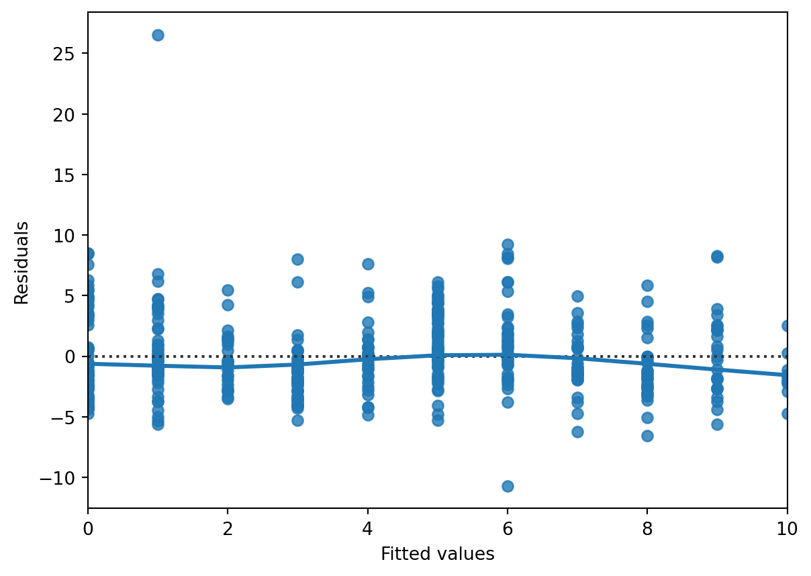
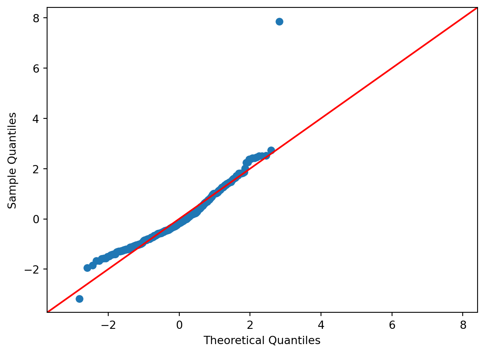
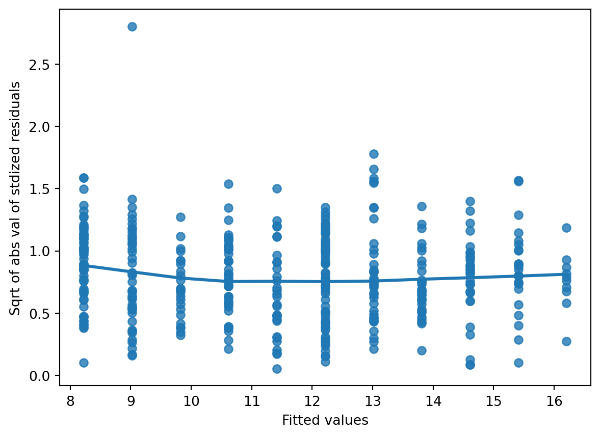
4.6 Chapter 3.3: Outliers, leverage, and influence
Sometimes, datasets contain unusual values. We’ll look at how to spot them and the consequences they have for your regression models.
Roach dataset
Let’s look at another species in the fish dataset, this time filtering for the Common roach.
Which points are outliers?
Here’s the standard regression plot of mass versus length. The technical term for an unusual data point is an outlier. So which of these points constitutes an outlier?
Extreme explanatory values
The first kind of outlier is when you have explanatory variables that are extreme. In the simple linear regression case, it’s easy to find and visualize them. There is one extreme short roach and one extreme long roach that I’ve colored orange here.
Response values away from the regression line
The other property of outliers is when the point lies a long way from the model predictions. Here, there’s a roach with mass zero, which seems biologically unlikely. It’s shown as a cross.
Leverage and influence
Leverage quantifies how extreme your explanatory variable values are. That is, it measures the first type of outlier we discussed. With one explanatory variable, you can find the values by filtering, but with many explanatory variables, the mathematics is more complicated. A related concept to leverage is influence. This is a type of “leave one out” metric. That is, it measures how much the model would change if you reran it without that data point. I like to think of it as the torque of the point. The amount of turning force, or torque, when using a wrench is equal to the linear force times the length of the wrench. In a similar way, the influence of each observation is based on the size of the residuals and the leverage.
.get_influence() and .summary_frame()
Leverage and influence, along with other metrics, are retrieved from the summary frame. You get them by calling the get_influence() method on the fitted model, then calling the summary_frame() method. For historical reasons, leverage is described in the so-called hat matrix. Therefore, the values of leverage are stored in the hat_diag column of the summary frame. Like the fitted values and residuals methods, it returns an array with as many values as there are observations. In this case, each of these leverage values indicates how extreme your roach lengths are.
Cook’s distance
Recall that influence is based on the size of the residuals and the leverage. It isn’t a straightforward multiplication; instead, we use a metric called Cook’s distance. It is stored in the summary frame as ‘cooks_d’.
Most influential roaches
We can find the most influential roaches by arranging the rows by descending Cook’s distance values. Here, you can see the two highly leveraged points and the fish with zero mass that gave it a large residual.
Removing the most influential roach
To see how influence works, let’s remove the most influential roach. This is the one with the shortest length, at twelve-point-nine centimeters. We draw the usual regression plot but add another regression line using the dataset without that short fish. The slope of the line has completely changed just by having one less data point.
4.7 Exercise 3.3.1
Extracting leverage and influence
In the last few exercises, you explored which observations had the highest leverage and influence. Now you’ll extract those values from the model.
Instructions
Get the summary frame from mdl_price_vs_dist and save as summary_info.
Add the hat_diag column of summary_info to taiwan as the leverage column.
Sort taiwan by leverage in descending order and print the head.
Add the cooks_d column from summary_info to taiwan as the cooks_dist column.
Sort taiwan by cooks_dist in descending order and print the head.
Code
# Import numpy with alias npimport numpy as np# Importing pandasimport pandas as pd# Import seaborn with alias snsimport seaborn as sns# Import matplotlib.pyplot with alias pltimport matplotlib.pyplot as plt# Import the ols functionfrom statsmodels.formula.api import ols# Importing the course arraystaiwan = pd.read_csv("datasets/taiwan_real_estate2.csv")# Create sqrt_dist_to_mrt_mtaiwan["sqrt_dist_to_mrt_m"] = np.sqrt(taiwan["dist_to_mrt_m"])# Run a linear regression of price_twd_msq vs. square root of dist_to_mrt_m using taiwan_real_estatemdl_price_vs_dist = ols("price_twd_msq ~ sqrt_dist_to_mrt_m", data=taiwan).fit()# Create summary_infosummary_info = mdl_price_vs_dist.get_influence().summary_frame()# Add the hat_diag column to taiwan_real_estate, name it leveragetaiwan["leverage"] = summary_info["hat_diag"]# Add the cooks_d column to taiwan_real_estate, name it cooks_disttaiwan["cooks_dist"] = summary_info["cooks_d"]# Sort taiwan by leverage in descending order and print the headprint(taiwan.sort_values("leverage", ascending=False).head())# Add the cooks_d column to taiwan_real_estate, name it cooks_disttaiwan["cooks_dist"] = summary_info["cooks_d"]# Sort taiwan by cooks_dist in descending order and print the head.print(taiwan.sort_values("cooks_dist", ascending=False).head())
Learn to fit logistic regression models. Using real-world data, you’ll predict the likelihood of a customer closing their bank account as probabilities of success and odds ratios, and quantify model performance using confusion matrices.
5.1 Chapter 4.1: Why you need logistic regression
The datasets you’ve seen so far all had a numeric response variable. Now we’ll explore the case of a binary response variable.
Bank churn dataset
Consider this dataset on churn at a European financial services company in 2006. There are 400 rows, each representing a customer. If the customer closed all accounts during the period, they were considered to have churned, and that column is marked with a one. If they still had an open account at the end of the period, has_churned is marked with a zero. Using one and zero for the response instead of a logical variable makes the plotting code easier. The two explanatory variables are the time since the customer first bought a service and the time since they last bought a service. Respectively, they measure the length of the relationship with the customer and the recency of the customer’s activity. The time columns contain negative values because they have been standardized for confidentiality reasons.
Table 4: Churn dataset
Variable
Meaning
has_churned
If the customer closed all accounts during the period (0: No; 1: Yes)
time_since_first_purchase
The time since the customer first bought a service.
time_since_last_purchase
The time since they last bought a service.
1
Churn vs. recency: a linear model
Let’s run a linear model of churn versus recency and see what happens. We can use the params attribute to pull out the intercept and slope. The intercept is about 0.5 and the slope is slightly positive at 0.06.
Visualizing the linear model
Here’s a plot of the data points with the linear trend. I used plt.axline rather than sns.regplot so the line isn’t limited to the extent of the data. All the churn values are zero or one, but the model predictions are fractional. You can think of the predictions as being probabilities that the customer will churn.
Zooming out
Zooming out by setting axis limits with xlim and ylim shows the problem with using a linear model. In the bottom-left of the plot, the model predicts negative probabilities. In the top-right, the model predicts probabilities greater than one. Both situations are impossible.
What is logistic regression?
The solution is to use logistic regression models, which are a type of generalized linear model, used when the response variable is logical. Whereas linear models result in predictions that follow a straight line, logistic models result in predictions that follow a logistic curve, which is S-shaped.
Logistic regression using logit()
To run a logistic regression, you need a new function from statsmodels. From the same statsmodels.formula.api package, import the logit function. This function begins the process of fitting a logistic regression model to your data. The function name is the only difference between fitting a linear regression and a logistic regression: the formula and data argument remain the same, and you use the dot fit method to fit the model. As before, you get two coefficients, one for the intercept and one for the numerical explanatory variable. The interpretation is a little different; we’ll come to that later.
Visualizing the logistic model
Let’s add the logistic regression predictions to the plot. regplot will draw a logistic regression trend line when you set the logistic argument to True. Notice that the logistic regression line, shown in blue, is slightly curved. Especially when there’s a longer time since the last purchase values, the blue trend line no longer follows the black, linear trend line anymore.
Zooming out
Now zooming out shows that the logistic regression curve never goes below zero or above one. To interpret this curve, when the standardized time since last purchase is very small, the probability of churning is close to zero. When the time since last purchase is very high, the probability is close to one. That is, customers who recently bought things are less likely to churn.
5.2 Exercise 4.1.1
Exploring the explanatory variables
When the response variable is logical, all the points lie on the \(y = 1\) and \(y = 0\) lines, making it difficult to see what is happening. In the video, until you saw the trend line, it wasn’t clear how the explanatory variable was distributed on each line. This can be solved with a histogram of the explanatory variable, grouped by the response.
You will use these histograms to get to know the financial services churn dataset seen in the video.
Instructions
In a sns.displot() call on the churn data, plot time_since_last_purchase as two histograms, split for each has_churned value.
Redraw the histograms using the time_since_first_purchase column, split for each has_churned value.
Code
# Import numpy with alias npimport numpy as np# Importing pandasimport pandas as pd# Import seaborn with alias snsimport seaborn as sns# Import matplotlib.pyplot with alias pltimport matplotlib.pyplot as plt# Import the ols functionfrom statsmodels.formula.api import olschurn = pd.read_csv("datasets/churn.csv")# Create the histograms of time_since_last_purchase split by has_churnedsns.displot(x="time_since_last_purchase", col ="has_churned",col_wrap=2, data=churn)# Redraw the plot with time_since_first_purchasesns.displot(x="time_since_first_purchase", col ="has_churned",col_wrap=2, data=churn)plt.show()
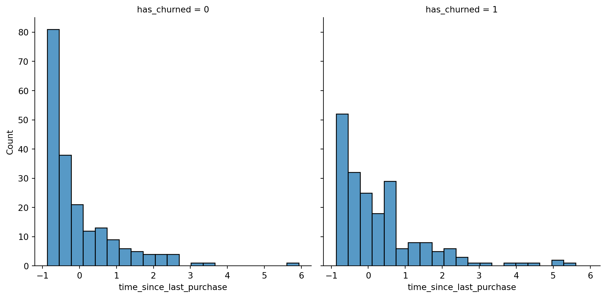
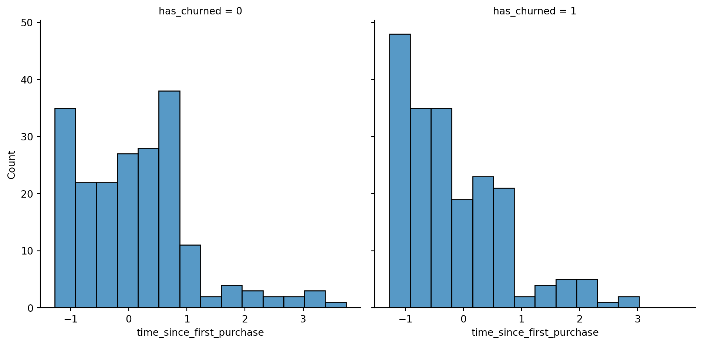
Note
In the time_since_last_purchase plot, the distribution of churned customers was further right than the distribution of non-churned customers (churners typically have longer times since their last purchase). For time_since_first_purchase the opposite is true: churners have a shorter length of relationship.
5.3 Exercise 4.1.2
Visualizing linear and logistic models
As with linear regressions, regplot() will draw model predictions for a logistic regression without you having to worry about the modeling code yourself. To see how the predictions differ for linear and logistic regressions, try drawing both trend lines side by side. Spoiler: you should see a linear (straight line) trend from the linear model, and a logistic (S-shaped) trend from the logistic model.
Instructions
Using churn, plot has_churned versus time_since_first_purchase as a scatter plot with a red linear regression trend line (without a standard error ribbon).
Using churn, plot has_churned versus time_since_first_purchase as a scatter plot with a blue logistic regression trend line (without a standard error ribbon).
Code
# Import numpy with alias npimport numpy as np# Importing pandasimport pandas as pd# Import seaborn with alias snsimport seaborn as sns# Import matplotlib.pyplot with alias pltimport matplotlib.pyplot as plt# Import the ols functionfrom statsmodels.formula.api import olschurn = pd.read_csv("datasets/churn.csv")# Draw a linear regression trend line and a scatter plot of time_since_first_purchase vs. has_churnedsns.regplot(x="time_since_first_purchase",y="has_churned", data=churn, ci=None, line_kws={"color": "red"})# Draw a logistic regression trend line and a scatter plot of time_since_first_purchase vs. has_churnedsns.regplot(x="time_since_first_purchase", y="has_churned", data=churn, ci=None, logistic=True, line_kws={"color": "blue"})plt.show()
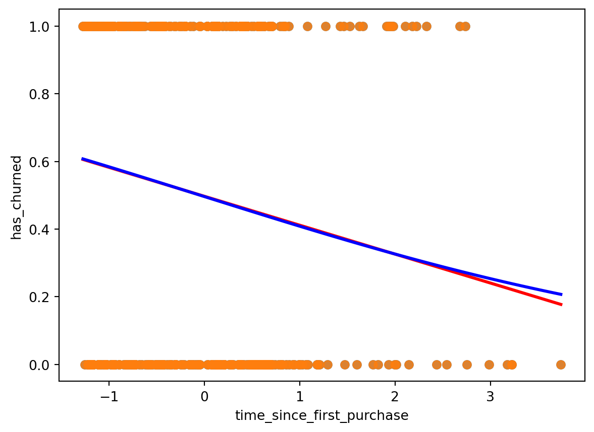
5.4 Exercise 4.1.3
Logistic regression with logit()
Logistic regression requires another function from statsmodels.formula.api: logit(). It takes the same arguments as ols(): a formula and data argument. You then use .fit() to fit the model to the data.
Here, you’ll model how the length of relationship with a customer affects churn.
Instructions
Import the logit() function from statsmodels.formula.api.
Fit a logistic regression of has_churned versus time_since_first_purchase using the churn dataset. Assign to mdl_churn_vs_relationship.
Print the parameters of the fitted model.
Code
# Import numpy with alias npimport numpy as np# Importing pandasimport pandas as pd# Import seaborn with alias snsimport seaborn as sns# Import matplotlib.pyplot with alias pltimport matplotlib.pyplot as plt# Import the ols functionfrom statsmodels.formula.api import ols# Import the logit functionfrom statsmodels.formula.api import logitchurn = pd.read_csv("datasets/churn.csv")# Import logitfrom statsmodels.formula.api import logit# Fit a logistic regression of churn vs. length of relationship using the churn datasetmdl_churn_vs_relationship = logit("has_churned ~ time_since_first_purchase", data=churn).fit()# Print the parameters of the fitted modelprint(mdl_churn_vs_relationship.params)print(churn['time_since_first_purchase'].head())
Let’s see how to make predictions with your logistic regression model.
The regplot() predictions
You’ve already seen how regplot will give you a logistic regression trend line.
Making predictions
To make a prediction with a logistic model, you use the same technique as for linear models. Create a DataFrame of explanatory variable values. Then add a response column calculated using the predict method.
Adding point predictions
As with the linear case, we can add those predictions onto the plot by creating a scatter plot with prediction_data as the data argument. As expected, these points follow the trend line.
Getting the most likely outcome
One simpler prediction you can make, rather than calculating probabilities of a response, is to calculate the most likely response. That is, if the probability of churning is less than 0.5, the most likely outcome is that they won’t churn. If their probability is greater then 0.5, it’s more likely that they will churn. To calculate this, simply round the predicted probabilities using numpy’s round() function.
Visualizing most likely outcome
We can plot the most likely outcome by using the prediction data with the numbers we just calculated. For recently active customers, the most likely outcome is that they don’t churn. Otherwise, the most likely outcome is that they churn.
Odds ratios
There is another way to talk about binary responses, commonly used in gambling. The odds ratio is the probability that something happens, divided by the probability that it doesn’t. For example, a probability of 0.25 is the same as the odds of “three to one against”, because the probability of the event not happening is zero-point-seven-five, which is three times as much. The plot shows the relationship between the two terms.
Calculating odds ratio
We can calculate the odds ratio by dividing the predicted response probability by one minus that number.
Visualizing odds ratio
It doesn’t make sense to visualize odds with the original data points, so we need a new plot. To create a plot with a continuous line, we can use seaborn's lineplot function. Here, the dotted line where the odds ratio is one indicates where churning is just as likely as not churning. This has been added by using the axhline function. In the bottom-left, the predictions are below one, so the chance of churning is less than the chance of not churning. In the top-right, the chance of churning is about five times more than the chance of not churning.
Visualizing log odds ratio
One nice property of logistic regression odds ratios is that on a log-scale, they change linearly with the explanatory variable. This plot adds a logarithmic y scale.
Calculating log odds ratio
This nice property of the logarithm of odds ratios means log-odds ratio is another common way of describing logistic regression predictions. In fact, the log-odds ratio is also known as the logit, hence the name of the function you’ve been using to model logistic regression.
All predictions together
Here are all the values calculated in the prediction dataset. Some column names are abbreviated for better printing.
Comparing scales
Each way of describing responses has different benefits. Most likely outcome is easiest to understand because the answer is always yes or no, but this lacks precision. Probabilities and odds ratios are still fairly easy to understand for a data literate audience. However, the non-linear predictions make it hard to reason about how changes in the explanatory variable will change the response. Log odds ratio is difficult to interpret for individual values, but the linear relationship with the explanatory variables makes it easy to reason about changes.
5.6 Exercise 4.2.1
Probabilities
There are four main ways of expressing the prediction from a logistic regression model – we’ll look at each of them over the next four exercises. Firstly, since the response variable is either “yes” or “no”, you can make a prediction of the probability of a “yes”. Here, you’ll calculate and visualize these probabilities.
Two variables are available:
mdl_churn_vs_relationship is the fitted logistic regression model of has_churned versus time_since_first_purchase.
explanatory_data is a DataFrame of explanatory values.
Instructions
Create a DataFrame, prediction_data, by assigning a column has_churned to explanatory_data.
In the has_churned column, store the predictions of the probability of churning: use the model, mdl_churn_vs_relationship, and the explanatory data, explanatory_data.
Print the first five lines of the prediction DataFrame.
Create a scatter plot with a logistic trend line of has_churned versus time_since_first_purchase.
Overlay the plot with the points from prediction_data, colored red.
Code
# Import numpy with alias npimport numpy as np# Importing pandasimport pandas as pd# Import seaborn with alias snsimport seaborn as sns# Import matplotlib.pyplot with alias pltimport matplotlib.pyplot as plt# Import the ols functionfrom statsmodels.formula.api import ols# Import the logit functionfrom statsmodels.formula.api import logitchurn = pd.read_csv("datasets/churn.csv")# Import logitfrom statsmodels.formula.api import logit# Fit a logistic regression of churn vs. length of relationship using the churn datasetmdl_churn_vs_relationship = logit("has_churned ~ time_since_first_purchase", data=churn).fit()# Create the explanatory_data explanatory_data = pd.DataFrame({'time_since_first_purchase': np.arange(0,5)})# Create prediction_dataprediction_data = explanatory_data.assign( has_churned=mdl_churn_vs_relationship.predict(explanatory_data))# Print the headprint(prediction_data.head())fig = plt.figure()# Create a scatter plot with logistic trend linesns.regplot(x="time_since_first_purchase",y="has_churned", data=churn,ci=None, logistic=True)# Overlay with prediction_data, colored redsns.scatterplot(x="time_since_first_purchase",y="has_churned", data=prediction_data,color="red")plt.show()
When explaining your results to a non-technical audience, you may wish to side-step talking about probabilities and simply explain the most likely outcome. That is, rather than saying there is a 60% chance of a customer churning, you say that the most likely outcome is that the customer will churn. The trade-off here is easier interpretation at the cost of nuance.
Instructions
Update prediction_data to add a column of the most likely churn outcome, most_likely_outcome.
Print the first five lines of prediction_data.
The code for creating a scatter plot with logistic trend line has been added from a previous exercise.
Overlay the plot with prediction_data with red data points, with most_likely_outcome on the y-axis.
Code
# Import numpy with alias npimport numpy as np# Importing pandasimport pandas as pd# Import seaborn with alias snsimport seaborn as sns# Import matplotlib.pyplot with alias pltimport matplotlib.pyplot as plt# Import the ols functionfrom statsmodels.formula.api import ols# Import the logit functionfrom statsmodels.formula.api import logitchurn = pd.read_csv("datasets/churn.csv")# Import logitfrom statsmodels.formula.api import logit# Fit a logistic regression of churn vs. length of relationship using the churn datasetmdl_churn_vs_relationship = logit("has_churned ~ time_since_first_purchase", data=churn).fit()# Create the explanatory_data explanatory_data = pd.DataFrame({'time_since_first_purchase': np.arange(-1.5,1.5, 0.25)})# Create prediction_dataprediction_data = explanatory_data.assign( has_churned=mdl_churn_vs_relationship.predict(explanatory_data))# Update prediction data by adding most_likely_outcomeprediction_data["most_likely_outcome"] = np.round(prediction_data["has_churned"])# Print the headprint(prediction_data.head())fig = plt.figure()# Create a scatter plot with logistic trend line (from previous exercise)sns.regplot(x="time_since_first_purchase", y="has_churned", data=churn, ci=None, logistic=True)# Overlay with prediction_data, colored redsns.scatterplot(x="time_since_first_purchase", y="most_likely_outcome", data=prediction_data, color="red")plt.show()
Odds ratios compare the probability of something happening with the probability of it not happening. This is sometimes easier to reason about than probabilities, particularly when you want to make decisions about choices. For example, if a customer has a 20% chance of churning, it may be more intuitive to say “the chance of them not churning is four times higher than the chance of them churning”.
Instructions
Update prediction_data to add a column, odds_ratio, of the odds ratios.
Print the first five lines of prediction_data.
Using prediction_data, draw a line plot of odds_ratio versus time_since_first_purchase.
Some code for preparing the final plot has already been added.
Code
# Import numpy with alias npimport numpy as np# Importing pandasimport pandas as pd# Import seaborn with alias snsimport seaborn as sns# Import matplotlib.pyplot with alias pltimport matplotlib.pyplot as plt# Import the ols functionfrom statsmodels.formula.api import ols# Import the logit functionfrom statsmodels.formula.api import logitchurn = pd.read_csv("datasets/churn.csv")# Fit a logistic regression of churn vs. length of relationship using the churn datasetmdl_churn_vs_relationship = logit("has_churned ~ time_since_first_purchase", data=churn).fit()# Create the explanatory_data explanatory_data = pd.DataFrame({'time_since_first_purchase': np.arange(-1.5,4, 0.25)})# Create prediction_dataprediction_data = explanatory_data.assign( has_churned=mdl_churn_vs_relationship.predict(explanatory_data))# Update prediction data by adding most_likely_outcomeprediction_data["most_likely_outcome"] = np.round(prediction_data["has_churned"])# Update prediction data with odds_ratioprediction_data["odds_ratio"] = prediction_data["has_churned"]/(1-prediction_data["has_churned"])# Print the headprint(prediction_data.head())fig = plt.figure()# Create a line plot of odds_ratio vs time_since_first_purchasesns.lineplot(x="time_since_first_purchase",y="odds_ratio", data=prediction_data)# Add a dotted horizontal line at odds_ratio = 1plt.axhline(y=1, linestyle="dotted")plt.show()
One downside to probabilities and odds ratios for logistic regression predictions is that the prediction lines for each are curved. This makes it harder to reason about what happens to the prediction when you make a change to the explanatory variable. The logarithm of the odds ratio (the “log odds ratio” or “logit”) does have a linear relationship between predicted response and explanatory variable. That means that as the explanatory variable changes, you don’t see dramatic changes in the response metric - only linear changes.
Since the actual values of log odds ratio are less intuitive than (linear) odds ratio, for visualization purposes it’s usually better to plot the odds ratio and apply a log transformation to the y-axis scale.
Instructions
Update prediction_data to add a log_odds_ratio column derived from odds_ratio.
Print the first five lines of prediction_data.
Update the code for the line plot to plot log_odds_ratio versus time_since_first_purchase.
Code
# Import numpy with alias npimport numpy as np# Importing pandasimport pandas as pd# Import seaborn with alias snsimport seaborn as sns# Import matplotlib.pyplot with alias pltimport matplotlib.pyplot as plt# Import the ols functionfrom statsmodels.formula.api import ols# Import the logit functionfrom statsmodels.formula.api import logitchurn = pd.read_csv("datasets/churn.csv")# Import logitfrom statsmodels.formula.api import logit# Fit a logistic regression of churn vs. length of relationship using the churn datasetmdl_churn_vs_relationship = logit("has_churned ~ time_since_first_purchase", data=churn).fit()# Create the explanatory_data explanatory_data = pd.DataFrame({'time_since_first_purchase': np.arange(-1.5,4, 0.25)})# Create prediction_dataprediction_data = explanatory_data.assign( has_churned=mdl_churn_vs_relationship.predict(explanatory_data))# Update prediction data by adding most_likely_outcomeprediction_data["most_likely_outcome"] = np.round(prediction_data["has_churned"])# Update prediction data with odds_ratioprediction_data["odds_ratio"] = prediction_data["has_churned"]/(1-prediction_data["has_churned"])# Update prediction data with log_odds_ratioprediction_data["log_odds_ratio"] = np.log(prediction_data["odds_ratio"])fig = plt.figure()# Update the line plot: log_odds_ratio vs. time_since_first_purchasesns.lineplot(x="time_since_first_purchase", y="log_odds_ratio", data=prediction_data)# Add a dotted horizontal line at log_odds_ratio = 0plt.axhline(y=0, linestyle="dotted")plt.show()
Optimization terminated successfully.
Current function value: 0.679663
Iterations 4
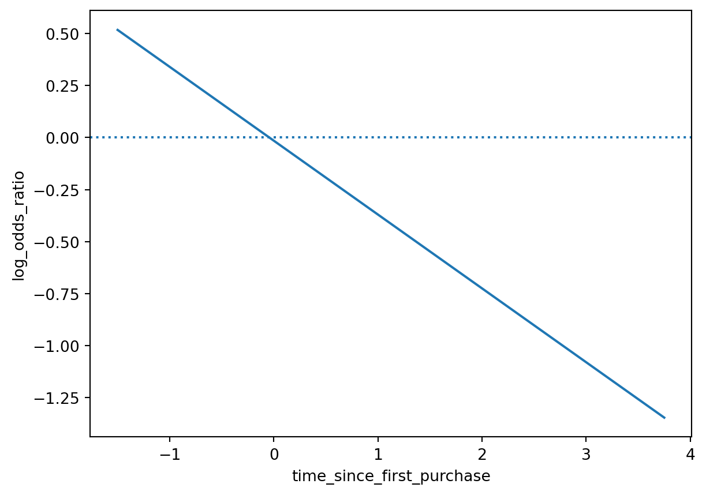
5.10 Chapter 4.3: Quantifying logistic regression fit
In this last lesson, we’ll assess the performance of logistic regression models. The diagnostic plots we drew for linear models are less useful in the logistic case. Instead, we’ll look at confusion matrices.
The four outcomes
A logical response variable leads to four possible outcomes. If the customer didn’t churn and we predicted they wouldn’t, or if they did churn and we predicted that, the model did well. There are two bad cases. Predicting the customer churned when they didn’t is called a false positive. Predicting the customer didn’t churn when they did is called a false negative. The counts of each outcome are called a confusion matrix.
Confusion matrix: counts of outcomes
Recall the model of churn versus recency. Getting the counts of model outcomes required some data manipulation. First, we get the actual responses from the has_churned column of the dataset. Next we get the predicted responses from the model. Calling the predict method on the fitted logistic regression model returns the predicted values of each observation in the dataset. These predicted values are probabilities. To get the most likely outcome, we need to round the values to zero or one. We then combine actual and predicted responses in a DataFrame, and use the value_counts method to get the counts of each combination of values. This is the confusion matrix mentioned earlier. We correctly predicted that one hundred and forty one customers didn’t churn and eighty nine customers did churn. There were fifty nine false positives and one hundred and eleven false negatives.
Visualizing the confusion matrix
The confusion matrix can also be created automatically with the pred_table method. Calling pred_table on the fitted model object will return an array. The true negatives and true positives are on the main diagonal of the matrix, the false negatives and false positives are on the second diagonal of the matrix. These values are the same as what we calculated on the previous slide. The mosaic function from the statsmodels package lets you easily plot the confusion matrix. To interpret this, start by looking at the column widths. The width of each column is proportional to the fraction of observations in each category of actual values. Here, there are two hundred actual churns and two hundred actual not churns, so each column has the same width. Then each column displays the fraction of predicted observations with each value. Here, just over a quarter of the actual not churns were predicted to be churns, so the block in the upper left is just over a quarter of the height of the first column.
Accuracy
Now let’s look at ways of quantifying model fit using performance metrics. The first metric is the model accuracy. This is the proportion of correct predictions. That is, the number of true negatives plus the true positives, divided by the total number of observations. Higher accuracy is better. The total number of correct observations is one hundred and forty one plus eighty nine. We divide this total by the total number of observations, which is the sum of all four numbers.
\[
accuracy = \frac{TN+TP}{TN+FN+FP+TP}
\]
Sensitivity
The second metric is sensitivity. This is the proportion of observations where the actual response was true where the model also predicted that they were true. That is, the number of true positives divided by the sum of the false negatives and true positives. Higher sensitivity is better. Here, 89 of the 200 customers who churned were correctly predicted to churn.
\[
Sensitivity = \frac{TP}{FN+TP}
\]
Specificity
The third metric is specificity. This is the proportion of observations where the actual response was false where the model also predicted that they were false. That is, the number of true negatives divided by the sum of the true negatives and false positives. Again, higher specificity is better, though there is often a trade-off where improving specificity will decrease sensitivity, or increasing sensitivity will decrease specificity. Here, 141 of the 200 customers who didn’t churn were correctly predicted to not churn.
\[
Specificity = \frac{TN}{FP+TN}
\]
5.11 Exercise 4.3.1
Calculating the confusion matrix
A confusion matrix (occasionally called a confusion table) is the basis of all performance metrics for models with a categorical response (such as a logistic regression). It contains the counts of each actual response-predicted response pair. In this case, where there are two possible responses (churn or not churn), there are four overall outcomes.
True positive: The customer churned and the model predicted they would.
False positive: The customer didn’t churn, but the model predicted they would.
True negative: The customer didn’t churn and the model predicted they wouldn’t.
False negative: The customer churned, but the model predicted they wouldn’t.
Instructions
Get the actual responses by subsetting the has_churned column of the dataset. Assign to actual_response.
Get the “most likely” predicted responses from the model. Assign to predicted_response.
Create a DataFrame from actual_response and predicted_response. Assign to outcomes.
Print outcomes as a table of counts, representing the confusion matrix.
Code
# Import numpy with alias npimport numpy as np# Importing pandasimport pandas as pd# Import seaborn with alias snsimport seaborn as sns# Import matplotlib.pyplot with alias pltimport matplotlib.pyplot as plt# Import the ols functionfrom statsmodels.formula.api import ols# Import the logit functionfrom statsmodels.formula.api import logitchurn = pd.read_csv("datasets/churn.csv")# Import logitfrom statsmodels.formula.api import logit# Fit a logistic regression of churn vs. length of relationship using the churn datasetmdl_churn_vs_relationship = logit("has_churned ~ time_since_first_purchase", data=churn).fit()# Create the explanatory_data explanatory_data = pd.DataFrame({'time_since_first_purchase': np.arange(-1.5,4, 0.25)})# Create prediction_dataprediction_data = explanatory_data.assign( has_churned=mdl_churn_vs_relationship.predict(explanatory_data))# Update prediction data by adding most_likely_outcomeprediction_data["most_likely_outcome"] = np.round(prediction_data["has_churned"])# Get the actual responsesactual_response = churn["has_churned"]# Get the predicted responsespredicted_response = np.round(mdl_churn_vs_relationship.predict())# Create outcomes as a DataFrame of both Seriesoutcomes = pd.DataFrame({"actual_response": actual_response,"predicted_response": predicted_response})# Print the outcomesprint(outcomes.value_counts(sort =False))
While calculating the performance matrix might be fun, it would become tedious if you needed multiple confusion matrices of different models. Luckily, the .pred_table() method can calculate the confusion matrix for you.
Additionally, you can use the output from the .pred_table() method to visualize the confusion matrix, using the mosaic() function.
Instructions
Import the mosaic() function from statsmodels.graphics.mosaicplot.
Create conf_matrix using the .pred_table() method and print it.
Draw a mosaic plot of the confusion matrix.
Code
# Import numpy with alias npimport numpy as np# Importing pandasimport pandas as pd# Import seaborn with alias snsimport seaborn as sns# Import matplotlib.pyplot with alias pltimport matplotlib.pyplot as plt# Import the ols functionfrom statsmodels.formula.api import ols# Import the logit functionfrom statsmodels.formula.api import logitchurn = pd.read_csv("datasets/churn.csv")# Import logitfrom statsmodels.formula.api import logit# Fit a logistic regression of churn vs. length of relationship using the churn datasetmdl_churn_vs_relationship = logit("has_churned ~ time_since_first_purchase", data=churn).fit()# Create the explanatory_data explanatory_data = pd.DataFrame({'time_since_first_purchase': np.arange(-1.5,4, 0.25)})# Create prediction_dataprediction_data = explanatory_data.assign( has_churned=mdl_churn_vs_relationship.predict(explanatory_data))# Update prediction data by adding most_likely_outcomeprediction_data["most_likely_outcome"] = np.round(prediction_data["has_churned"])# Get the actual responsesactual_response = churn["has_churned"]# Get the predicted responsespredicted_response = np.round(mdl_churn_vs_relationship.predict())# Create outcomes as a DataFrame of both Seriesoutcomes = pd.DataFrame({"actual_response": actual_response,"predicted_response": predicted_response})# Print the outcomesprint(outcomes.value_counts(sort =False))# Import mosaic from statsmodels.graphics.mosaicplotfrom statsmodels.graphics.mosaicplot import mosaic# Calculate the confusion matrix conf_matrixconf_matrix = mdl_churn_vs_relationship.pred_table()# Print itprint(conf_matrix)# Draw a mosaic plot of conf_matrixmosaic(conf_matrix)plt.show()
As you know by now, several metrics exist for measuring the performance of a logistic regression model. In this last exercise, you’ll manually calculate accuracy, sensitivity, and specificity. Recall the following definitions:
Accuracy is the proportion of predictions that are correct.
\[
accuracy = \frac{TN+TP}{TN+FN+FP+TP}
\]
Sensitivity is the proportion of true observations that are correctly predicted by the model as being true.
\[
Sensitivity = \frac{TP}{FN+TP}
\]
Specificity is the proportion of false observations that are correctly predicted by the model as being false.
\[
Specificity = \frac{TN}{FP+TN}
\]
Instructions
Extract the number of true positives (TP), true negatives (TN), false positives (FP), and false negatives (FN) from conf_matrix.
Calculate the accuracy of the model.
Calculate the sensitivity of the model.
Calculate the specificity of the model.
Code
# Import numpy with alias npimport numpy as np# Importing pandasimport pandas as pd# Import seaborn with alias snsimport seaborn as sns# Import matplotlib.pyplot with alias pltimport matplotlib.pyplot as plt# Import the ols functionfrom statsmodels.formula.api import ols# Import the logit functionfrom statsmodels.formula.api import logitchurn = pd.read_csv("datasets/churn.csv")# Import logitfrom statsmodels.formula.api import logit# Fit a logistic regression of churn vs. length of relationship using the churn datasetmdl_churn_vs_relationship = logit("has_churned ~ time_since_first_purchase", data=churn).fit()# Create the explanatory_data explanatory_data = pd.DataFrame({'time_since_first_purchase': np.arange(-1.5,4, 0.25)})# Create prediction_dataprediction_data = explanatory_data.assign( has_churned=mdl_churn_vs_relationship.predict(explanatory_data))# Update prediction data by adding most_likely_outcomeprediction_data["most_likely_outcome"] = np.round(prediction_data["has_churned"])# Get the actual responsesactual_response = churn["has_churned"]# Get the predicted responsespredicted_response = np.round(mdl_churn_vs_relationship.predict())# Create outcomes as a DataFrame of both Seriesoutcomes = pd.DataFrame({"actual_response": actual_response,"predicted_response": predicted_response})# Print the outcomesprint(outcomes.value_counts(sort =False))# Import mosaic from statsmodels.graphics.mosaicplotfrom statsmodels.graphics.mosaicplot import mosaic# Calculate the confusion matrix conf_matrixconf_matrix = mdl_churn_vs_relationship.pred_table()# Extract TN, TP, FN and FP from conf_matrixTN = conf_matrix[0,0]TP = conf_matrix[1,1]FN = conf_matrix[1,0]FP = conf_matrix[0,1]# Calculate and print the accuracyaccuracy = (TN+TP)/(TN+TP+FN+FP)print("accuracy: ", accuracy)# Calculate and print the sensitivitysensitivity = TP/(FN+TP)print("sensitivity: ", sensitivity)# Calculate and print the specificityspecificity = TN/(FP+TN)print("specificity: ", specificity)
Introduction to Regression with statsmodels in Python in Intermediate Python Course for Associate Data Scientist in Python Carrer Track in DataCamp Inc by Maarten Van den Broeck.
Source Code
---title: "Course 18 | Introduction to Regression with statsmodels in Python"author: - name: "Lawal's Note" affiliation: "Associate Data Science Course in Python by DataCamp Inc"date: "2024-11-21"toc: truenumber-sections: truehighlight-style: pygmentsformat: html: code-fold: true code-tools: true pdf: geometry: - top=30mm - left=20mm docx: defaultexecute: warning: false echo: true eval: true output: true error: false cache: false include_metadata: falsejupyter: python3---## Data SourceData: The datasets utilized in this course include the Taiwan Real Estate dataset, the S&P 500 Yearly Returns dataset, the Facebook Advertising Workflow dataset, and the Churn dataset. See @tbl-taiwan, @tbl-sp500, @tbl-ad, and @tbl-churn for the column names and descriptions for each dataset.You can download the datasets [here](https://github.com/lawaloa/Regression_1/tree/main/datasets){target="_blank"}## Chapter 1: Simple Linear Regression ModelingYou’ll learn the basics of this popular statistical model, what regression is, and how linear and logistic regressions differ. You’ll then learn how to fit simple linear regression models with numeric and categorical explanatory variables, and how to describe the relationship between the response and explanatory variables using model coefficients.### Chapter 1.1: A tale of two variables Hi, my name is Maarten and welcome to the course. You will be learning about regression, a statistical tool to analyze the relationships between variables. Let's start with an example.#### Swedish motor insurance data {.unlisted .unnumbered}This dataset on Swedish motor insurance claims is as simple as it gets. Each row represents a region in Sweden, and the two variables are the number of claims made in that region, and the total payment made by the insurance company for those claims, in Swedish krona.#### Descriptive statistics {.unlisted .unnumbered}This course assumes you have experience with calculating descriptive statistics on variables in a DataFrame. For example, calculating the mean of each variable. We can use pandas for this, as shown here. The course also assumes you understand the correlation between two variables. Here, the correlation is 0 point nine one, a strong positive correlation. That means that as the number of claims increases, the total payment typically increases as well.#### What is regression? {.unlisted .unnumbered}Regression models are a class of statistical models that let you explore the relationship between a response variable and some explanatory variables. That is, given some explanatory variables, you can make predictions about the value of the response variable. In the insurance dataset, if you know the number of claims made in a region, you can predict the amount that the insurance company has to pay out. That lets you do thought experiments like asking how much the company would need to pay if the number of claims increased to two hundred.#### Jargon {.unlisted .unnumbered}The response variable, the one you want to make predictions on, is also known as the dependent variable or the y variable. These two terms are completely interchangeable. Explanatory variables, used to explain how the predictions will change, are also known as independent variables or x variables. Again, these terms are interchangeable.#### Linear regression and logistic regression {.unlisted .unnumbered}In this course we're going to look at two types of regression. Linear regression is used when the response variable is numeric, like in the motor insurance dataset. Logistic regression is used when the response variable is logical. That is, it takes True or False values. We'll limit the scope further to only consider simple linear regression and simple logistic regression. This means you only have a single explanatory variable.#### Visualizing pairs of variables {.unlisted .unnumbered}Before you start running regression models, it's a good idea to visualize your dataset. To visualize the relationship between two numeric variables, you can use a scatter plot. The course assumes that your data visualization skills are strong enough that you can understand the seaborn code written here. If not, try taking one of DataCamp's courses on seaborn before you begin this course. On the plot, you can see that the total payment increases as the number of claims increases. It would be nice to be able to describe this increase more precisely.#### Adding a linear trend line {.unlisted .unnumbered}One refinement we can make is to add a trend line to the scatter plot. A trend line means fitting a line that follows the data points. In `seaborn`, trend lines are drawn using the `regplot()` function, which adds a trend line calculated using linear regression. By default, `regplot()` adds a confidence interval around the line, which we can remove by setting the ci argument to None. The trend line is mostly quite close to the data points, so we can say that the linear regression is a reasonable fit.#### Course flow {.unlisted .unnumbered}Here's the plan for the course. First, we'll visualize and fit linear regressions. Then we'll make predictions with them. Thirdly, we'll look at ways of quantifying whether or not the model is a good fit. In the final chapter, we'll run through this flow again using logistic regression models.#### Python packages for regression {.unlisted .unnumbered}Before we dive into the first exercise, a word on Python packages for regression. Both `statsmodels` and `scikit-learn` can be used. However, `statsmodels` is more optimized for insight, whereas `scikit-learn` is more optimized for `prediction`. Since we'll focus on insight, we'll be using `statsmodels` in this course.### Exercise 1.1.1#### Which one is the response variable? {.unlisted .unnumbered}Regression lets you predict the values of a response variable from known values of explanatory variables. Which variable you use as the response variable depends on the question you are trying to answer, but in many datasets, there will be an obvious choice for variables that would be interesting to predict. Over the next few exercises, you'll explore a Taiwan real estate dataset with four variables.|Variable |Meaning ||:----------------------:|:------------------------------------------------------------------||`dist_to_mrt_station_m` |Distance to nearest MRT metro station, in meters. ||`n_convenience` |No. of convenience stores in walking distance. ||`house_age_years` |The age of the house, in years, in three groups. ||`price_twd_msq` |House price per unit area, in New Taiwan dollars per meter squared.|: Taiwan real estate dataset {#tbl-taiwan}Print `taiwan_real_estate` in the console to view the dataset, and decide which variable would make a good response variable.```{python}# Importing pandasimport pandas as pd# Importing the course arraystaiwan = pd.read_csv("datasets/taiwan_real_estate2.csv")# Pint taiwan_real_estate datasetprint(taiwan.head())```::: {.callout-note collapse="true"} Predicting prices is a common business task, so house price makes a good response variable.:::### Exercise 1.1.2#### Visualizing two numeric variables {.unlisted .unnumbered}Before you can run any statistical models, it's usually a good idea to visualize your dataset. Here, you'll look at the relationship between house price per area and the number of nearby convenience stores using the Taiwan real estate dataset.One challenge in this dataset is that the number of convenience stores contains integer data, causing points to overlap. To solve this, you will make the points transparent.#### Instructions {.unlisted .unnumbered}1. Import the `seaborn` package, aliased as `sns`.2. Using `taiwan_real_estate`, draw a scatter plot of `"price_twd_msq"` (y-axis) versus `"n_convenience"` (x-axis).3. Draw a trend line calculated using linear regression. Omit the confidence interval ribbon.::: {.callout-note collapse="true"} The scatter_kws argument, pre-filled in the exercise, makes the data points 50% transparent.:::```{python}# Importing pandasimport pandas as pd# Import seaborn with alias snsimport seaborn as sns# Import matplotlib.pyplot with alias pltimport matplotlib.pyplot as plt# Importing the course arraystaiwan = pd.read_csv("datasets/taiwan_real_estate2.csv")# Draw the scatter plotsns.scatterplot(x='n_convenience',y='price_twd_msq',data=taiwan)# Draw a trend line on the scatter plot of price_twd_msq vs. n_conveniencesns.regplot(x="n_convenience", y="price_twd_msq", data=taiwan, ci=None, scatter_kws={'alpha': 0.5})# Show the plotplt.show()```### Chapter 1.2: Fitting a linear regressionYou may have noticed that the linear regression trend lines in the scatter plots were straight lines. That's a defining feature of a linear regression.#### Straight lines are defined by two things {.unlisted .unnumbered}Straight lines are completely defined by two properties. The intercept is the y value when x is zero. The slope is the steepness of the line, equal to the amount y increases if you increase x by one. The equation for a straight line is that the y value is the intercept plus the slope times the x value.#### Estimating the intercept {.unlisted .unnumbered}Here's the trend line from the Swedish insurance dataset. Let's try to estimate the intercept. To find the intercept, look at where the trend line intersects the y axis. Its less than half way to the fifty mark, so I'd guess it's about twenty.#### Estimating the slope {.unlisted .unnumbered}To estimate the slope, we need two points. To make the guessing easier, I've chosen points where the line is close to the gridlines.First, we calculate the change in y values between the points. One y value is about four hundred and the other is about one hundred and fifty, so the difference is two hundred and fifty.Now we do the same for the x axis. One point is at one hundred and ten, the other at forty. So the difference is seventy. To estimate the slope we divide one number by the other. Two hundred and fifty divided by seventy is about three point five, so that is our estimate for the slope. Let's run a linear regression to check our guess.#### Running a model {.unlisted .unnumbered}To run a linear regression model, you import the `ols` function from `statsmodels.formula.api`. `OLS` stands for ordinary least squares, which is a type of regression, and is commonly used. The function ols takes two arguments. The first argument is a formula: the response variable is written to the left of the tilde, and the explanatory variable is written to the right. The data argument takes the DataFrame containing the variables. To actually fit the model, you add the dot `fit()` method to your freshly created model object. When you print the resulting model, it's helpful to use the params attribute, which contains the model's parameters. This will result in two coefficients. These coefficients are the intercept and slope of the straight line. It seems our guesses were pretty close. The intercept is very close to our estimate of twenty. The slope, indicated here as `n_claims`, is three point four, slightly lower than what we guessed.#### Interpreting the model coefficients {.unlisted .unnumbered}That means that we expect the total payment to be 20 + 3.4 times the number of claims. So for every additional claim, we expect the total payment to increase by three point four.### Exercise 1.2.1#### Linear regression with `ols()` {.unlisted .unnumbered}While `sns.regplot()` can display a linear regression trend line, it doesn't give you access to the intercept and slope as variables, or allow you to work with the model results as variables. That means that sometimes you'll need to run a linear regression yourself.Time to run your first model!#### Instructions {.unlisted .unnumbered}1. Import the `ols()` function from the `statsmodels.formula.api package`.2. Run a linear regression with `price_twd_msq` as the response variable, `n_convenience` as the explanatory variable, and taiwan as the dataset. Name it `mdl_price_vs_conv`.3. Fit the model.4. Print the parameters of the fitted model.```{python}# Importing pandasimport pandas as pd# Import seaborn with alias snsimport seaborn as sns# Import matplotlib.pyplot with alias pltimport matplotlib.pyplot as plt# Import the ols functionfrom statsmodels.formula.api import ols# Importing the course arraystaiwan = pd.read_csv("datasets/taiwan_real_estate2.csv")# Create the model objectmdl_price_vs_conv = ols("price_twd_msq ~ n_convenience", data=taiwan)# Fit the modelmdl_price_vs_conv = mdl_price_vs_conv.fit()# Print the parameters of the fitted modelprint(mdl_price_vs_conv.params)```::: {.callout-note collapse="true"}## Result1. The model had an Intercept coefficient of 8.2242. What does this mean?Answer: *On average, a house with zero convenience stores nearby had a price of 8.2242 TWD per square meter.*2. The model had an n_convenience coefficient of 0.7981. What does this mean?Answer: *If you increase the number of nearby convenience stores by one, then the expected increase in house price is 0.7981 TWD per square meter.***The intercept is positive, so a house with no convenience stores nearby still has a positive price. The coefficient for convenience stores is also positive, so as the number of nearby convenience stores increases, so does the price of the house.**:::### Chapter 1.3: Categorical explanatory variablesSo far we looked at running a linear regression using a numeric explanatory variable. Now let's look at what happens with a categorical explanatory variable.#### Fish dataset {.unlisted .unnumbered}Let's take a look at some data on the masses of fish sold at a fish market. Each row of data contains the species of a fish, and its mass. The mass will be the response variable.#### Visualizing 1 numeric and 1 categorical variable {.unlisted .unnumbered}To visualize the data, scatter plots aren't ideal because species is categorical. Instead, we can draw a histogram for each of the species. To give a separate panel to each species, I use seaborn's displot function. This takes a DataFrame as the data argument, the variable of interest as x, and the variable you want to split on as col. It also takes an optional col_wrap argument to specify the number of plots per row. Because the dataset is fairly small, I also set the bins argument to nine. By default, displot creates histograms.#### Summary statistics: mean mass by species {.unlisted .unnumbered}Let's calculate some summary statistics. First we group by species, then we calculate their mean masses. You can see that the mean mass of a bream is six hundred and eighteen grams. The mean mass for a perch is three hundred and eighty two grams, and so on.#### Linear regression {.unlisted .unnumbered}Let's run a linear regression using mass as the response variable and species as the explanatory variable. The syntax is the same: you call `ols()`, passing a formula with the response variable on the left and the explanatory variable on the right, and setting the data argument to the DataFrame. We fit the model using the `fit` method, and retrieve the parameters using `.params` on the fitted model. This time we have four coefficients: an intercept, and one for three of the fish species. A coefficient for bream is missing, but the number for the intercept looks familiar. The intercept is the mean mass of the bream that you just calculated. You might wonder what the other coefficients are, and why perch has a negative coefficient, since fish masses can't be negative.#### Model with or without an intercept {.unlisted .unnumbered}The coefficients for each category are calculated relative to the intercept. This way of displaying results can be useful for models with multiple explanatory variables, but for simple linear regression, it's just confusing. Fortunately, we can fix it. By changing the formula slightly to append "plus zero", we specify that all the coefficients should be given relative to zero. Equivalently, it means we are fitting a linear regression without an intercept term. If you subtract two hundred and thirty five point fifty-nine from six hundred and seventeen point eighty-three, you get three hundred and eighty two point twenty four, which is the mean mass of a perch. Now these coefficients make more sense. They are all just the mean masses for each species. This is a reassuringly boring result. When you only have a single, categorical explanatory variable, the linear regression coefficients are simply the means of each category.### Exercise 1.3.1#### Visualizing numeric vs. categorical {.unlisted .unnumbered}If the explanatory variable is categorical, the scatter plot that you used before to visualize the data doesn't make sense. Instead, a good option is to draw a histogram for each category.The Taiwan dataset has a categorical variable in the form of the age of each house. The ages have been split into 3 groups: 0 to 15 years, 15 to 30 years, and 30 to 45 years.#### Instructions {.unlisted .unnumbered}- Using `taiwan`, plot a histogram of `price_twd_msq` with 10 bins. Split the plot by `house_age_years` to give 3 panels.```{python}# Importing pandasimport pandas as pd# Import seaborn with alias snsimport seaborn as sns# Import matplotlib.pyplot with alias pltimport matplotlib.pyplot as plt# Importing the course arraystaiwan = pd.read_csv("datasets/taiwan_real_estate2.csv")# Histograms of price_twd_msq with 10 bins, split by the age of each housesns.displot(data=taiwan, x="price_twd_msq", col="house_age_years", col_wrap=3, bins=10 )# Show the plotplt.show()```::: {.callout-note collapse="true"}**It appears that new houses are the most expensive on average, and the medium-aged ones (15 to 30 years) are the cheapest.**:::### Exercise 1.3.2#### Calculating means by category {.unlisted .unnumbered}A good way to explore categorical variables further is to calculate summary statistics for each category. For example, you can calculate the mean and median of your response variable, grouped by a categorical variable. As such, you can compare each category in more detail.Here, you'll look at grouped means for the house prices in the Taiwan real estate dataset. This will help you understand the output of a linear regression with a categorical variable.#### Instructions {.unlisted .unnumbered}- Group `taiwan1` by `house_age_years` and calculate the mean price (`price_twd_msq`) for each age group. Assign the result to `mean_price_by_age`.- Print the result and inspect the output```{python}# Importing pandasimport pandas as pd# Import seaborn with alias snsimport seaborn as sns# Import matplotlib.pyplot with alias pltimport matplotlib.pyplot as plt# Importing the course arraystaiwan = pd.read_csv("datasets/taiwan_real_estate2.csv")# Calculate the mean of price_twd_msq, grouped by house agemean_price_by_age = taiwan.groupby("house_age_years")["price_twd_msq"].mean()# Print the resultprint(mean_price_by_age)```### Exercise 1.3.3#### Linear regression with a categorical explanatory variable {.unlisted .unnumbered}Great job calculating those grouped means! As mentioned in the last video, the means of each category will also be the coefficients of a linear regression model with one categorical variable. You'll prove that in this exercise.To run a linear regression model with categorical explanatory variables, you can use the same code as with numeric explanatory variables. The coefficients returned by the model are different, however. Here you'll run a linear regression on the Taiwan real estate dataset.#### Instructions {.unlisted .unnumbered}- Run and fit a linear regression with `price_twd_msq` as the response variable, `house_age_years` as the explanatory variable, and `taiwan` as the dataset. Assign to `mdl_price_vs_age`.- Print its parameters.- Update the model formula so that no intercept is included in the model. Assign to `mdl_price_vs_age0`.- Print its parameters.```{python}# Importing pandasimport pandas as pd# Import seaborn with alias snsimport seaborn as sns# Import matplotlib.pyplot with alias pltimport matplotlib.pyplot as plt# Import the ols functionfrom statsmodels.formula.api import ols# Importing the course arraystaiwan = pd.read_csv("datasets/taiwan_real_estate2.csv")# Create the model, fit itmdl_price_vs_age = ols("price_twd_msq ~ house_age_years", data=taiwan).fit()# Print the parameters of the fitted modelprint(mdl_price_vs_age.params)# Update the model formula to remove the interceptmdl_price_vs_age0 = ols("price_twd_msq ~ house_age_years + 0", data=taiwan).fit()# Print the parameters of the fitted modelprint(mdl_price_vs_age0.params)```::: {.callout-note collapse="true"}*The coefficients of the model are just the means of each category you calculated previously.*:::## Chapter 2: Predictions and model objects In this chapter, you’ll discover how to use linear regression models to make predictions on Taiwanese house prices and Facebook advert clicks. You’ll also grow your regression skills as you get hands-on with model objects, understand the concept of "regression to the mean", and learn how to transform variables in a dataset.### Chapter 2.1: Making predictionsThe big benefit of running models rather than simply calculating descriptive statistics is that models let you make predictions.#### The fish dataset: bream {.unlisted .unnumbered}Here's the fish dataset again. This time, we'll look only at the bream data. There's a new explanatory variable too: the length of each fish, which we'll use to predict the mass of the fish.#### Plotting mass vs. length {.unlisted .unnumbered}Scatter plot of mass versus length for the bream data, with a linear trend line.#### Running the model {.unlisted .unnumbered}Before we can make predictions, we need a fitted model. As before, we call ols with a formula and the dataset, after which we add dot fit. The response, mass in grams, goes on the left-hand side of the formula, and the explanatory variable, length in centimeters, goes on the right. We need to assign the result to a variable to reuse later on. To view the coefficients of the model, we use the params attribute in a print call.#### Data on explanatory values to predict {.unlisted .unnumbered}The principle behind predicting is to ask questions of the form "if I set the explanatory variables to these values, what value would the response variable have?". That means that the next step is to choose some values for the explanatory variables. To create new explanatory data, we need to store our explanatory variables of choice in a pandas DataFrame. You can use a dictionary to specify the columns. For this model, the only explanatory variable is the length of the fish. You can specify an interval of values using the np dot arange function, taking the start and end of the interval as arguments. Notice that the end of the interval does not include this value. Here, I specified a range of twenty to forty centimeters.#### Call `predict()` {.unlisted .unnumbered}The next step is to call predict on the model, passing the DataFrame of explanatory variables as the argument. The predict function returns a Series of predictions, one for each row of the explanatory data.#### Predicting inside a DataFrame {.unlisted .unnumbered}Having a single column of predictions isn't that helpful to work with. It's easier to work with if the predictions are in a DataFrame alongside the explanatory variables. To do this, you can use the pandas assign method. It returns a new object with all original columns in addition to new ones. You start with the existing column, explanatory_data. Then, you use dot assign to add a new column, named after the response variable, mass_g. You calculate it with the same predict code from the previous slide. The resulting DataFrame contains both the explanatory variable and the predicted response. Now we can answer questions like "how heavy would we expect a bream with length twenty three centimeters to be?", even though the original dataset didn't include a bream of that exact length. Looking at the prediction data, you can see that the predicted mass is two hundred and nineteen grams.#### Showing predictions {.unlisted .unnumbered}Let's include the predictions we just made on the scatter plot. To plot multiple layers, we set a matplotlib figure object called `fig` before calling `regplot` and `scatterplot`. As a result, the `plt.show` call will then plot both graphs on the same figure. I've marked the prediction points in red squares to distinguish them from the actual data points. Notice that the predictions lie exactly on the trend line.#### Extrapolating {.unlisted .unnumbered}All the fish were between twenty three and thirty eight centimeters, but the linear model allows us to make predictions outside that range. This is called extrapolating. Let's see what prediction we get for a ten centimeter bream. To achieve this, you first create a DataFrame with a single observation of 10 cm. You then predict the corresponding mass as before. Wow. The predicted mass is almost minus five hundred grams! This is obviously not physically possible, so the model performs poorly here. Extrapolation is sometimes appropriate, but can lead to misleading or ridiculous results. You need to understand the context of your data in order to determine whether it is sensible to extrapolate.### Exercise 2.1.1#### Predicting house prices {.unlisted .unnumbered}Perhaps the most useful feature of statistical models like linear regression is that you can make predictions. That is, you specify values for each of the explanatory variables, feed them to the model, and get a prediction for the corresponding response variable. The code flow is as follows.```explanatory_data = pd.DataFrame({"explanatory_var": list_of_values})predictions = model.predict(explanatory_data)prediction_data = explanatory_data.assign(response_var=predictions)```Here, you'll make predictions for the house prices in the Taiwan real estate dataset.#### Instructions {.unlisted .unnumbered}1. Import the numpy package using the alias np. - Create a DataFrame of `explanatory data`, where the number of convenience stores, `n_convenience`, takes the integer values from zero to ten. - Print `explanatory_data`.2. Use the model `mdl_price_vs_conv` to make predictions from `explanatory_data` and store it as `price_twd_msq`. - Print the predictions.3. Create a DataFrame of predictions named `prediction_data`. Start with `explanatory_data`, then add an extra column, `price_twd_msq`, containing the predictions you created in the previous step.```{python}# Import numpy with alias npimport numpy as np# Importing pandasimport pandas as pd# Import seaborn with alias snsimport seaborn as sns# Import matplotlib.pyplot with alias pltimport matplotlib.pyplot as plt# Import the ols functionfrom statsmodels.formula.api import ols# Importing the course arraystaiwan = pd.read_csv("datasets/taiwan_real_estate2.csv")# Create the model objectmdl_price_vs_conv = ols("price_twd_msq ~ n_convenience", data=taiwan)# Fit the modelmdl_price_vs_conv = mdl_price_vs_conv.fit()# Print the parameters of the fitted modelmdl_price_vs_conv.params# Create the explanatory_data explanatory_data = pd.DataFrame({'n_convenience': np.arange(0,11)})# Use mdl_price_vs_conv to predict with explanatory_data, call it price_twd_msqprice_twd_msq = mdl_price_vs_conv.predict(explanatory_data)# Print itprint(price_twd_msq)# Create prediction_dataprediction_data = explanatory_data.assign( price_twd_msq = mdl_price_vs_conv.predict(explanatory_data))# Print the resultprint(prediction_data)```### Exercise 2.1.2#### Visualizing predictions {.unlisted .unnumbered}The prediction DataFrame you created contains a column of explanatory variable values and a column of response variable values. That means you can plot it on the same scatter plot of response versus explanatory data values.#### Instructions {.unlisted .unnumbered}- Create a new figure to plot multiple layers.- Extend the plotting code to add points for the predictions in `prediction_data`. Color the points red.- Display the layered plot.```{python}# Import numpy with alias npimport numpy as np# Importing pandasimport pandas as pd# Import seaborn with alias snsimport seaborn as sns# Import matplotlib.pyplot with alias pltimport matplotlib.pyplot as plt# Import the ols functionfrom statsmodels.formula.api import ols# Importing the course arraystaiwan = pd.read_csv("datasets/taiwan_real_estate2.csv")# Create the model objectmdl_price_vs_conv = ols("price_twd_msq ~ n_convenience", data=taiwan)# Fit the modelmdl_price_vs_conv = mdl_price_vs_conv.fit()# Print the parameters of the fitted modelmdl_price_vs_conv.params# Create the explanatory_data explanatory_data = pd.DataFrame({'n_convenience': np.arange(0,11)})# Use mdl_price_vs_conv to predict with explanatory_data, call it price_twd_msqprice_twd_msq = mdl_price_vs_conv.predict(explanatory_data)# Create prediction_dataprediction_data = explanatory_data.assign( price_twd_msq = mdl_price_vs_conv.predict(explanatory_data))# Create a new figure, figfig = plt.figure()sns.regplot(x="n_convenience", y="price_twd_msq", data=taiwan, ci=None)# Add a scatter plot layer to the regplotsns.scatterplot(x="n_convenience", y="price_twd_msq", data= prediction_data, color="red")# Show the layered plotplt.show()```### Exercise 2.1.3#### The limits of prediction {.unlisted .unnumbered}In the last exercise, you made predictions on some sensible, could-happen-in-real-life, situations. That is, the cases when the number of nearby convenience stores were between zero and ten. To test the limits of the model's ability to predict, try some impossible situations.Use the console to try predicting house prices from `mdl_price_vs_conv` when there are `-1` convenience stores. Do the same for `2.5` convenience stores. What happens in each case?#### Instructions {.unlisted .unnumbered}- Create some impossible `explanatory data`. Define a DataFrame `impossible` with one column, `n_convenience`, set to `-1` in the first row, and `2.5` in the second row.```{python}# Import numpy with alias npimport numpy as np# Importing pandasimport pandas as pd# Import seaborn with alias snsimport seaborn as sns# Import matplotlib.pyplot with alias pltimport matplotlib.pyplot as plt# Import the ols functionfrom statsmodels.formula.api import ols# Importing the course arraystaiwan = pd.read_csv("datasets/taiwan_real_estate2.csv")# Create the model objectmdl_price_vs_conv = ols("price_twd_msq ~ n_convenience", data=taiwan)# Fit the modelmdl_price_vs_conv = mdl_price_vs_conv.fit()# Print the parameters of the fitted modelmdl_price_vs_conv.params# Define a DataFrame impossibleimpossible = pd.DataFrame({"n_convenience":[-1,2.5]})# Try making predictions on your two impossible cases. What happens?pred_impossible = impossible.assign(price_twd_msq=mdl_price_vs_conv.predict(impossible))print(pred_impossible)```::: {.callout-note collapse="true"}*Linear models don't know what is possible or not in real life. That means that they can give you predictions that don't make any sense when applied to your data. You need to understand what your data means in order to determine whether a prediction is nonsense or not.*:::### Chapter 2.2: Working with model objectsThe model objects created by `ols` contain a lot of information. In this video, you'll see how to extract it.#### `.params` attribute {.unlisted .unnumbered}You already learned how to extract the coefficients or parameters from your fitted model. You add the dot params attribute, which will return a pandas Series including your intercept and slope.#### `.fittedvalues` attribute {.unlisted .unnumbered}`"Fitted values"` is jargon for predictions on the original dataset used to create the model. Access them with the fittedvalues attribute. The result is a pandas Series of length thirty five, which is the number of rows in the bream dataset. The fittedvalues attribute is essentially a shortcut for taking the explanatory variable columns from the dataset, then feeding them to the predict function.#### `.resid` attribute {.unlisted .unnumbered}`"Residuals"` are a measure of inaccuracy in the model fit, and are accessed with the resid attribute. Like fitted values, there is one residual for each row of the dataset. Each residual is the actual response value minus the predicted response value. In this case, the residuals are the masses of breams, minus the fitted values. I illustrated the residuals as red lines on the regression plot. Each vertical line represents a single residual. You'll see more on how to use the fitted values and residuals to assess the quality of your model in Chapter 3, @sec-chap3.#### `.summary()` {.unlisted .unnumbered}The summary method shows a more extended printout of the details of the model. Let's step through this piece by piece.#### `.summary()` part 1 {.unlisted .unnumbered}First, you see the dependent variable(s) that were used in the model, in addition to the type of regression. You also see some metrics on the performance of the model. These will be discussed in the next chapter.#### `.summary()` part 2 {.unlisted .unnumbered}In the second part of the summary, you see details of the coefficients. The numbers in the first column are the ones contained in the params attribute. The numbers in the fourth column are the p-values, which refer to statistical significance. You can learn about them in DataCamp's courses on inference. The last part of the summary are diagnostic statistics that are outside the scope of this course.### Exercise 2.2.1#### Extracting model elements {.unlisted .unnumbered}The model object created by `ols()` contains many elements. In order to perform further analysis on the model results, you need to extract its useful bits. The model coefficients, the fitted values, and the residuals are perhaps the most important pieces of the linear model object.#### Instructions {.unlisted .unnumbered}1. Print the parameters of `mdl_price_vs_conv`.2. Print the fitted values of `mdl_price_vs_conv`.3. Print the residuals of `mdl_price_vs_conv`.4. Print a summary of `mdl_price_vs_conv`.```{python}# Import numpy with alias npimport numpy as np# Importing pandasimport pandas as pd# Import seaborn with alias snsimport seaborn as sns# Import matplotlib.pyplot with alias pltimport matplotlib.pyplot as plt# Import the ols functionfrom statsmodels.formula.api import ols# Importing the course arraystaiwan = pd.read_csv("datasets/taiwan_real_estate2.csv")# Create the model objectmdl_price_vs_conv = ols("price_twd_msq ~ n_convenience", data=taiwan)# Fit the modelmdl_price_vs_conv = mdl_price_vs_conv.fit()# Print the model parameters of mdl_price_vs_convprint(mdl_price_vs_conv.params)# Print the fitted values of mdl_price_vs_convprint(mdl_price_vs_conv.fittedvalues)# Print the residuals of mdl_price_vs_convprint(mdl_price_vs_conv.resid)# Print a summary of mdl_price_vs_convprint(mdl_price_vs_conv.summary())```### Exercise 2.2.2#### Manually predicting house prices {.unlisted .unnumbered}You can manually calculate the predictions from the model coefficients. When making predictions in real life, it is better to use `.predict()`, but doing this manually is helpful to reassure yourself that predictions aren't magic - they are simply arithmetic.In fact, for a simple linear regression, the predicted value is just the intercept plus the slope times the explanatory variable.$$\text{response} = \text{intercept} + \text{slope} * \text{explanatory}$$#### Instructions {.unlisted .unnumbered}- Get the coefficients/parameters of `mdl_price_vs_conv`, assigning to `coeffs`.- Get the intercept, which is the first element of `coeffs`, assigning to `intercept`.- Get the slope, which is the second element of `coeffs`, assigning to `slope`.- Manually `predict price_twd_msq` using the formula, specifying the `intercept`, `slope`, and `explanatory_data`.- Run the code to compare your manually calculated predictions to the results from `.predict()`.```{python}# Import numpy with alias npimport numpy as np# Importing pandasimport pandas as pd# Import seaborn with alias snsimport seaborn as sns# Import matplotlib.pyplot with alias pltimport matplotlib.pyplot as plt# Import the ols functionfrom statsmodels.formula.api import ols# Importing the course arraystaiwan = pd.read_csv("datasets/taiwan_real_estate2.csv")# Create the model objectmdl_price_vs_conv = ols("price_twd_msq ~ n_convenience", data=taiwan)# Fit the modelmdl_price_vs_conv = mdl_price_vs_conv.fit()# Create the explanatory_data explanatory_data = pd.DataFrame({'n_convenience': np.arange(0,11)})# Get the coefficients of mdl_price_vs_convcoeffs = mdl_price_vs_conv.params# Get the interceptintercept = coeffs[0]# Get the slopeslope = coeffs[1]# Manually calculate the predictionsprice_twd_msq = intercept + slope * explanatory_dataprint(price_twd_msq)# Compare to the results from .predict()print(price_twd_msq.assign(predictions_auto=mdl_price_vs_conv.predict(explanatory_data)))```### Chapter 2.3: Regression to the meanLet's take a short break from thinking about regression modeling, to a related concept called "regression to the mean". Regression to the mean is a property of the data, not a type of model, but linear regression can be used to quantify its effect.#### The concept {.unlisted .unnumbered}You already saw that each response value in your dataset is equal to the sum of a fitted value, that is, the prediction by the model, and a residual, which is how much the model missed by. Loosely speaking, these two values are the parts of the response that you've explained why it has that value, and the parts you couldn't explain with your model. There are two possibilities for why you have a residual. Firstly, it could just be because your model isn't great. Particularly in the case of simple linear regression where you only have one explanatory variable, there is often room for improvement. However, it usually isn't possible or desirable to have a perfect model because the world contains a lot of randomness, and your model shouldn't capture that. In particular, extreme responses are often due to randomness or luck. That means that extremes don't persist over time, because eventually the luck runs out. This is the concept of regression to the mean. Eventually, extreme cases will look more like average cases.#### Pearson's father son dataset {.unlisted .unnumbered}Here's a classic dataset on the heights of fathers and their sons, collected by Karl Pearson, the statistician who the Pearson correlation coefficient is named after. The dataset consists of over a thousand pairs of heights, and was collected as part of a nineteenth century scientific work on biological inheritance. It lets us answer the question, "do tall fathers have tall sons?", and "do short fathers have short sons?".1. 1 Adapted from [](https://www.rdocumentation.org/packages/UsingR/topics/father.son){target="_blank"}#### Scatter plot {.unlisted .unnumbered}Here's a scatter plot of the sons' heights versus the fathers' heights. I've added a line where the son's and father's heights are equal, using `plt.axline`. The first two arguments determine the intercept and slope, while the linewidth and color arguments help it stand out. I also used `plt.axis` with the 'equal' argument so that one centimeter on the x-axis appears the same as one centimeter on the y-axis. If sons always had the same height as their fathers, all the points would lie on this green line.#### Adding a regression line {.unlisted .unnumbered}Let's add a black linear regression line to the plot using `regplot`. You can see that the regression line isn't as steep as the first line. On the left of the plot, the black line is above the green line, suggesting that for very short fathers, their sons are taller than them on average. On the far right of the plot, the black line is below the green line, suggesting that for very tall fathers, their sons are shorter than them on average.#### Running a regression {.unlisted .unnumbered}Running a model quantifies the predictions of how much taller or shorter the sons will be. Here, the sons' heights are the response variable, and the fathers' heights are the explanatory variable.#### Making predictions {.unlisted .unnumbered}Now we can make predictions. Consider the case of a really tall father, at one hundred and ninety centimeters. At least, that was really tall in the late nineteenth century. The predicted height of the son is one hundred and eighty-three centimeters. Tall, but not quite as tall as his dad. Similarly, the prediction for a one hundred and fifty-centimeter father is one hundred and sixty-three centimeters. Short, but not quite as short as his dad. In both cases, the extreme value became less extreme in the next generation — a perfect example of regression to the mean.### Exercise 2.3.1#### Plotting consecutive portfolio returns {.unlisted .unnumbered}Regression to the mean is also an important concept in investing. Here you'll look at the annual returns from investing in companies in the Standard and Poor 500 index (S&P 500), in 2018 and 2019.The `sp500_yearly_returns` dataset contains three columns:|variable | meaning ||:----------|:----------------------------------------------------||symbol |Stock ticker symbol uniquely identifying the company.||return_2018| A measure of investment performance in 2018. ||return_2019| A measure of investment performance in 2019. |: sp500_yearly_returns dataset {#tbl-sp500}A positive number for the return means the investment increased in value; negative means it lost value.A naive prediction might be that the investment performance stays the same from year to year, lying on the y equals x line.#### Instructions {.unlisted .unnumbered}- Create a new figure, `fig`, to enable plot layering.- Generate a line at y equals x. *This has been done for you*.- Using `sp500_yearly_returns`, draw a scatter plot of` return_2019` vs. `return_2018` with a linear regression trend line, without a standard error ribbon.- Set the axes so that the distances along the x and y axes look the same.```{python}# Importing pandasimport pandas as pd# Import seaborn with alias snsimport seaborn as sns# Import matplotlib.pyplot with alias pltimport matplotlib.pyplot as plt# Import the ols functionfrom statsmodels.formula.api import olssp500 = pd.read_csv("datasets/sp500_yearly_returns.csv")# Create a new figure, figfig = plt.figure()# Plot the first layer: y = xplt.axline(xy1=(0,0), slope=1, linewidth=2, color="green")# Add scatter plot with linear regression trend linesns.regplot(x="return_2018",y="return_2019",data=sp500, ci=None,line_kws={"color":"black"})# Set the axes so that the distances along the x and y axes look the sameplt.axis("equal")# Show the plotplt.show()```::: {.callout-note collapse="true"}*The regression trend line looks very different to the y equals x line. As the financial advisors say, "Past performance is no guarantee of future results."*:::### Exercise 2.3.2#### Modeling consecutive returns {.unlisted .unnumbered}Let's quantify the relationship between returns in 2019 and 2018 by running a linear regression and making predictions. By looking at companies with extremely high or extremely low returns in 2018, we can see if their performance was similar in 2019.### Instructions {.unlisted .unnumbered}- Run a linear regression on `return_2019` versus `return_2018` using `sp500_yearly_returns` and fit the model. Assign to `mdl_returns`.- Print the parameters of the model.- Create a DataFrame named `explanatory_data`. Give it one column (`return_2018`) with 2018 returns set to a list containing `-1`, `0`, and `1`.- Use `mdl_returns` to predict with `explanatory_data` in a `print()` call.```{python}# Importing pandasimport pandas as pd# Import seaborn with alias snsimport seaborn as sns# Import matplotlib.pyplot with alias pltimport matplotlib.pyplot as plt# Import the ols functionfrom statsmodels.formula.api import olssp500 = pd.read_csv("datasets/sp500_yearly_returns.csv")# Run a linear regression on return_2019 vs. return_2018 using sp500_yearly_returnsmdl_returns = ols("return_2019 ~ return_2018", data = sp500).fit()# Print the parametersprint(mdl_returns.params)# Create a DataFrame with return_2018 at -1, 0, and 1 explanatory_data = pd.DataFrame({"return_2018": [-1,0,1]})# Use mdl_returns to predict with explanatory_dataprint(mdl_returns.predict(explanatory_data))```::: {.callout-note collapse="true"}*Investments that gained a lot in value in 2018 on average gained only a small amount in 2019. Similarly, investments that lost a lot of value in 2018 on average also gained a small amount in 2019.*:::### Chapter 2.4: Transforming variables {#sec-chap2}Sometimes, the relationship between the explanatory variable and the response variable may not be a straight line. To fit a linear regression model, you may need to transform the explanatory variable or the response variable, or both of them.#### Perch dataset {.unlisted .unnumbered}Consider the perch in the fish dataset.#### It's not a linear relationship {.unlisted .unnumbered}The upward curve in the mass versus length data prevents us drawing a straight line that follows it closely.#### Bream vs. perch {.unlisted .unnumbered}To understand why the bream had a strong linear relationship between mass and length, but the perch didn't, you need to understand your data. I'm not a fish expert, but looking at the picture of the bream on the left, it has a very narrow body. I guess that as bream get bigger, they mostly get longer and not wider. By contrast, the perch on the right has a round body, so I guess that as it grows, it gets fatter and taller as well as longer. Since the perches are growing in three directions at once, maybe the length cubed will give a better fit.#### Plotting mass vs. length cubed {.unlisted .unnumbered}Here's an update to the previous plot. The only change is that the x-axis is now length to the power of three. To do this, first create an additional column where you calculate the length cubed. Then replace this newly created column in your regplot call. The data points fit the line much better now, so we're ready to run a model.#### Modeling mass vs. length cubed {.unlisted .unnumbered}To model this transformation, we replace the original length variable with the cubed length variable. We then fit the model and extract its coefficients.#### Predicting mass vs. length cubed {.unlisted .unnumbered}We create the explanatory DataFrame in the same way as usual. Notice that you specify the lengths cubed. We can also add the untransformed lengths column for reference. The code for adding predictions is the same assign and predict combination as you've seen before.#### Plotting mass vs. length cubed {.unlisted .unnumbered}The predictions have been added to the plot of mass versus length cubed as red points. As you might expect, they follow the line drawn by `regplot`. It gets more interesting on the original x-axis. Notice how the red points curve upwards to follow the data. Your linear model has non-linear predictions, after the transformation is undone.#### Facebook advertising dataset {.unlisted .unnumbered}Let's try one more example using a Facebook advertising dataset. The flow of online advertising is that you pay money to Facebook, who show your advert to Facebook users. If a person sees the advert, it's called an impression. Then some people who see the advert will click on it.|Variable |Meaning ||:--------------|:--------------------------------------------------------------------||`spent_usd` |Money paid to Facebook for online advertisement. ||`n_impressions`|number of times each Facebook user sees your advert. | |`n_clicks` |number of times each Facebook user who saw your advert clicked on it.|: ad_conversion dataset {#tbl-ad}#### Plot is cramped {.unlisted .unnumbered}Let's look at impressions versus spend. If we draw the standard plot, the majority of the points are crammed into the bottom-left of the plot, making it difficult to assess whether there is a good fit or not.#### Square root vs square root {.unlisted .unnumbered}By transforming both the variables with square roots, the data are more spread out throughout the plot, and the points follow the line fairly closely. Square roots are a common transformation when your data has a right-skewed distribution.#### Modeling and predicting {.unlisted .unnumbered}Running the model and creating the explanatory dataset are the same as usual, but notice the use of the transformed variables in the formula and DataFrame. I also included the untransformed spent_usd variable for reference. Prediction requires an extra step. Because we took the square root of the response variable (not just the explanatory variable), the predict function will predict the square root of the number of impressions. That means that we have to undo the square root by squaring the predicted responses. Undoing the transformation of the response is called back transformation.### Exercise 2.4.1#### Transforming the explanatory variable {.unlisted .unnumbered}If there is no straight-line relationship between the response variable and the explanatory variable, it is sometimes possible to create one by transforming one or both of the variables. Here, you'll look at transforming the explanatory variable.You'll take another look at the Taiwan real estate dataset, this time using the distance to the nearest MRT (metro) station as the explanatory variable. You'll use code to make every commuter's dream come true: shortening the distance to the metro station by taking the square root. Take that, geography!#### Instructions {.unlisted .unnumbered}1. - Look at the plot. - Add a new column to `taiwan` called `sqrt_dist_to_mrt_m` that contains the square root of `dist_to_mrt_m`. - Create the same scatter plot as the first one, but use the new transformed variable on the x-axis instead.```{python}# Import numpy with alias npimport numpy as np# Importing pandasimport pandas as pd# Import seaborn with alias snsimport seaborn as sns# Import matplotlib.pyplot with alias pltimport matplotlib.pyplot as plt# Import the ols functionfrom statsmodels.formula.api import ols# Importing the course arraystaiwan = pd.read_csv("datasets/taiwan_real_estate2.csv")# Create sqrt_dist_to_mrt_mtaiwan["sqrt_dist_to_mrt_m"] = np.sqrt(taiwan["dist_to_mrt_m"])plt.figure()# Plot using the original variablesns.regplot(x="dist_to_mrt_m", y="price_twd_msq", data=taiwan, ci=None)plt.figure()# Plot using the transformed variablesns.regplot(x="sqrt_dist_to_mrt_m", y="price_twd_msq", data=taiwan, ci=None)plt.show()```2. - Run a linear regression of price_twd_msq versus the square root of dist_to_mrt_m using taiwan. - Print the parameters. - Create a DataFrame of predictions named `prediction_data` by adding a column of predictions called `price_twd_msq` to `explanatory_data`. Predict using `mdl_price_vs_dist` and `explanatory_data`. - Print the predictions. - Add a layer to your plot containing points from `prediction_data`, colored `"red"`.```{python}# Import numpy with alias npimport numpy as np# Importing pandasimport pandas as pd# Import seaborn with alias snsimport seaborn as sns# Import matplotlib.pyplot with alias pltimport matplotlib.pyplot as plt# Import the ols functionfrom statsmodels.formula.api import ols# Importing the course arraystaiwan = pd.read_csv("datasets/taiwan_real_estate2.csv")# Create sqrt_dist_to_mrt_mtaiwan["sqrt_dist_to_mrt_m"] = np.sqrt(taiwan["dist_to_mrt_m"])# Run a linear regression of price_twd_msq vs. square root of dist_to_mrt_m using taiwan_real_estatemdl_price_vs_dist = ols("price_twd_msq ~ sqrt_dist_to_mrt_m",data=taiwan).fit()# Print the parametersprint(mdl_price_vs_dist.params)explanatory_data = pd.DataFrame({"sqrt_dist_to_mrt_m": np.sqrt(np.arange(0, 81, 10) **2),"dist_to_mrt_m": np.arange(0, 81, 10) **2})# Create prediction_data by adding a column of predictions to explantory_dataprediction_data = explanatory_data.assign( price_twd_msq = mdl_price_vs_dist.predict(explanatory_data))# Print the resultprint(prediction_data)fig = plt.figure()sns.regplot(x="sqrt_dist_to_mrt_m", y="price_twd_msq", data=taiwan, ci=None)# Add a layer of your prediction pointssns.scatterplot(x="sqrt_dist_to_mrt_m", y="price_twd_msq", data=prediction_data,color="red")plt.show()```::: {.callout-note collapse="true"}*By transforming the explanatory variable, the relationship with the response variable became linear, and so a linear regression became an appropriate model.*:::### Exercise 2.4.2#### Transforming the response variable too {.unlisted .unnumbered}The response variable can be transformed too, but this means you need an extra step at the end to undo that transformation. That is, you "back transform" the predictions.In the lecture, you saw the first step of the digital advertising workflow: spending money to buy ads, and counting how many people see them (the "impressions"). The next step is determining how many people click on the advert after seeing it.#### Instructions {.unlisted .unnumbered}- Look at the plot.- Create a `qdrt_n_impressions` column using `n_impressions` raised to the power of 0.25.- Create a `qdrt_n_clicks` column using `n_clicks` raised to the power of 0.25.- Create a regression plot using the transformed variables. *Do the points track the line more closely?*- Run a linear regression of `qdrt_n_clicks` versus `qdrt_n_impressions` using `ad_conversion` and assign it to `mdl_click_vs_impression`.- Create the prediction data```{python}# Import numpy with alias npimport numpy as np# Importing pandasimport pandas as pd# Import seaborn with alias snsimport seaborn as sns# Import matplotlib.pyplot with alias pltimport matplotlib.pyplot as plt# Import the ols functionfrom statsmodels.formula.api import olsad_conversion = pd.read_csv("datasets/ad_conversion.csv")# Create qdrt_n_impressions and qdrt_n_clicksad_conversion["qdrt_n_impressions"] = ad_conversion["n_impressions"] **0.25ad_conversion["qdrt_n_clicks"] = ad_conversion["n_clicks"] **0.25plt.figure()# Plot using the transformed variablessns.regplot(x="n_impressions",y="n_clicks",data=ad_conversion,ci=None)plt.figure()# Plot using the transformed variablessns.regplot(x="qdrt_n_impressions",y="qdrt_n_clicks",data=ad_conversion,ci=None)plt.show()# Run a linear regression of your transformed variablesmdl_click_vs_impression = ols("qdrt_n_clicks ~ qdrt_n_impressions",data=ad_conversion).fit()explanatory_data = pd.DataFrame({"qdrt_n_impressions": np.arange(0, 3e6+1, 5e5) **.25,"n_impressions": np.arange(0, 3e6+1, 5e5)})# Complete prediction_dataprediction_data = explanatory_data.assign( qdrt_n_clicks = mdl_click_vs_impression.predict(explanatory_data))# Print the resultprint(prediction_data)```::: {.callout-note collapse="true"}*Terrific transformation! Since the response variable has been transformed, you'll now need to back-transform the predictions to correctly interpret your results.*:::### Exercise 2.4.3#### Back transformation {.unlisted .unnumbered}In the previous exercise, you transformed the response variable, ran a regression, and made predictions. But you're not done yet! In order to correctly interpret and visualize your predictions, you'll need to do a back-transformation.#### Instructions {.unlisted .unnumbered}- Back transform the response variable in `prediction_data` by raising `qdrt_n_clicks` to the power 4 to get `n_clicks`.- Edit the plot to add a layer of points from `prediction_data`, colored `"red"`.```{python}# Import numpy with alias npimport numpy as np# Importing pandasimport pandas as pd# Import seaborn with alias snsimport seaborn as sns# Import matplotlib.pyplot with alias pltimport matplotlib.pyplot as plt# Import the ols functionfrom statsmodels.formula.api import olsad_conversion = pd.read_csv("datasets/ad_conversion.csv")# Create qdrt_n_impressions and qdrt_n_clicksad_conversion["qdrt_n_impressions"] = ad_conversion["n_impressions"] **0.25ad_conversion["qdrt_n_clicks"] = ad_conversion["n_clicks"] **0.25# Run a linear regression of your transformed variablesmdl_click_vs_impression = ols("qdrt_n_clicks ~ qdrt_n_impressions",data=ad_conversion).fit()explanatory_data = pd.DataFrame({"qdrt_n_impressions": np.arange(0, 3e6+1, 5e5) **.25,"n_impressions": np.arange(0, 3e6+1, 5e5)})# Complete prediction_dataprediction_data = explanatory_data.assign( qdrt_n_clicks = mdl_click_vs_impression.predict(explanatory_data))# Back transform qdrt_n_clicksprediction_data["n_clicks"] = prediction_data["qdrt_n_clicks"] **4print(prediction_data)# Plot the transformed variablesfig = plt.figure()sns.regplot(x="qdrt_n_impressions", y="qdrt_n_clicks", data=ad_conversion, ci=None)# Add a layer of your prediction pointssns.scatterplot(x="qdrt_n_impressions", y="qdrt_n_clicks", data=prediction_data, color="red")plt.show()```## CHAPTER 3: Assessing model fit {#sec-chap3}In this chapter, you’ll learn how to ask questions of your model to assess fit. You’ll learn how to quantify how well a linear regression model fits, diagnose model problems using visualizations, and understand each observation's leverage and influence to create the model.### Chapter 3.1: Quantifying model fitIt's usually essential to know whether or not predictions from your model are nonsense. In this chapter, we'll look at ways of quantifying how good your model is.#### Bream and perch models {.unlisted .unnumbered}Previously, you ran models on mass versus length for bream and perch. By merely looking at these scatter plots, you can get a sense that there is a linear relationship between mass and length for bream but not for perch. It would be useful to quantify how strong that linear relationship is.#### Coefficient of determination {.unlisted .unnumbered}The first metric we'll discuss is the coefficient of determination. This is sometimes called "r-squared". For boring historical reasons, it's written with a `lower case` r for simple linear regression and an `upper case` R when you have more than one explanatory variable. It is defined as the proportion of the variance in the response variable that is predictable from the explanatory variable. We'll get to a human-readable explanation shortly. A score of one means you have a perfect fit, and a score of zero means your model is no better than randomness. What constitutes a good score depends on your dataset. A score of zero-point five on a psychological experiment may be exceptionally high because humans are inherently hard to predict, but in other cases, a score of zero-point nine may be considered a poor fit.#### `.summary()` {.unlisted .unnumbered}The `.summary` method shows several performance metrics in its output. The coefficient of determination is written in the first line and titled "R-squared". Its value is about zero-point-eight-eight.#### `.rsquared` attribute {.unlisted .unnumbered}Since the output of `.summary` isn't easy to work with, a better way to extract the metric is to use the `rsquared` attribute, which contains the r-squared value as a float.#### It's just correlation squared {.unlisted .unnumbered}For simple linear regression, the interpretation of the coefficient of determination is straightforward. It is simply the correlation between the explanatory and response variables, squared.#### Residual standard error (RSE) {.unlisted .unnumbered}The second metric we'll look at is the residual standard error, or RSE. Recall that each residual is the difference between a predicted value and an observed value. The RSE is, very roughly speaking, a measure of the typical size of the residuals. That is, how much the predictions are typically wrong. It has the same unit as the response variable. In the fish models, the response unit is grams. A related, but less commonly used metric is the mean squared error, or MSE. As the name suggests, MSE is the squared residual standard error.#### `.mse_resid` attribute {.unlisted .unnumbered}The summary method unfortunately doesn't contain the RSE. However, it can indirectly be retrieved from the mse_resid attribute, which contains the mean squared error of the residuals. We can calculate the RSE by taking the square root of MSE. As such, the RSE has the same unit as the response variable. The RSE for the bream model is about seventy-four.#### Calculating RSE: residuals squared {.unlisted .unnumbered}To calculate the RSE yourself, it's slightly more complicated. First, you take the square of each residual.#### Calculating RSE: sum of residuals squared {.unlisted .unnumbered}Then you take the sum of these residuals squared.#### Calculating RSE: degrees of freedom {.unlisted .unnumbered}You then calculate the degrees of freedom of the residuals. This is the number of observations minus the number of model coefficients.#### Calculating RSE: square root of ratio {.unlisted .unnumbered}Finally, you take the square root of the ratio of those two numbers. Reassuringly, the value is still seventy-four.#### Interpreting RSE {.unlisted .unnumbered}An RSE of seventy-four means that the difference between predicted bream masses and observed bream masses is typically about seventy-four grams.#### Root-mean-square error (RMSE) {.unlisted .unnumbered}Another related metric is the root-mean-square error. This is calculated in the same way, except you don't subtract the number of coefficients in the second to last step. It performs the same task as residual standard error, namely quantifying how inaccurate the model predictions are, but is worse for comparisons between models. You need to be aware that RMSE exists, but typically you should use RSE instead.### Exercise 3.1.1#### Coefficient of determination {.unlisted .unnumbered}The coefficient of determination is a measure of how well the linear regression line fits the observed values. For simple linear regression, it is equal to the square of the correlation between the explanatory and response variables.Here, you'll take another look at the second stage of the advertising pipeline: modeling the click response to impressions. Two models are available: `mdl_click_vs_impression_orig` models `n_clicks` versus `n_impressions`. `mdl_click_vs_impression_trans` is the transformed model you saw in @sec-chap2. It models `n_clicks` to the power of 0.25 versus `n_impressions` to the power of 0.25.#### Instructions {.unlisted .unnumbered}1. Print the summary of `mdl_click_vs_impression_orig`. - Do the same for `mdl_click_vs_impression_trans`.2. Print the coefficient of determination for `mdl_click_vs_impression_orig`. - Do the same for `mdl_click_vs_impression_trans`.```{python}# Import numpy with alias npimport numpy as np# Importing pandasimport pandas as pd# Import seaborn with alias snsimport seaborn as sns# Import matplotlib.pyplot with alias pltimport matplotlib.pyplot as plt# Import the ols functionfrom statsmodels.formula.api import olsad_conversion = pd.read_csv("datasets/ad_conversion.csv")# Create qdrt_n_impressions and qdrt_n_clicksad_conversion["qdrt_n_impressions"] = ad_conversion["n_impressions"] **0.25ad_conversion["qdrt_n_clicks"] = ad_conversion["n_clicks"] **0.25# Run a linear regression of your original variablesmdl_click_vs_impression_orig = ols("n_clicks ~ n_impressions",data=ad_conversion).fit()# Run a linear regression of your transformed variablesmdl_click_vs_impression_trans = ols("qdrt_n_clicks ~ qdrt_n_impressions",data=ad_conversion).fit()# Print a summary of mdl_click_vs_impression_origprint(mdl_click_vs_impression_orig.summary())# Print a summary of mdl_click_vs_impression_transprint(mdl_click_vs_impression_trans.summary())# Print the coeff of determination for mdl_click_vs_impression_origprint(mdl_click_vs_impression_orig.rsquared)# Print the coeff of determination for mdl_click_vs_impression_transprint(mdl_click_vs_impression_trans.rsquared)```::: {.callout-note collapse="true"}`mdl_click_vs_impression_orig` *has a coefficient of determination of 0.89 which means that the number of impressions explains 89% of the variability in the number of clicks*.:::### Exercise 3.1.2#### Residual standard error {.unlisted .unnumbered}Residual standard error (RSE) is a measure of the typical size of the residuals. Equivalently, it's a measure of how wrong you can expect predictions to be. Smaller numbers are better, with zero being a perfect fit to the data.Again, you'll look at the models from the advertising pipeline, `mdl_click_vs_impression_orig` and `mdl_click_vs_impression_trans`.Instructions {.unlisted .unnumbered}1. Calculate the MSE of `mdl_click_vs_impression_orig`, assigning to `mse_orig`. - Using `mse_orig`, calculate and print the RSE of `mdl_click_vs_impression_orig`. - Do the same for `mdl_click_vs_impression_trans`.```{python}# Import numpy with alias npimport numpy as np# Importing pandasimport pandas as pd# Import seaborn with alias snsimport seaborn as sns# Import matplotlib.pyplot with alias pltimport matplotlib.pyplot as plt# Import the ols functionfrom statsmodels.formula.api import olsad_conversion = pd.read_csv("datasets/ad_conversion.csv")# Create qdrt_n_impressions and qdrt_n_clicksad_conversion["qdrt_n_impressions"] = ad_conversion["n_impressions"] **0.25ad_conversion["qdrt_n_clicks"] = ad_conversion["n_clicks"] **0.25# Run a linear regression of your original variablesmdl_click_vs_impression_orig = ols("n_clicks ~ n_impressions",data=ad_conversion).fit()# Run a linear regression of your transformed variablesmdl_click_vs_impression_trans = ols("qdrt_n_clicks ~ qdrt_n_impressions",data=ad_conversion).fit()# Calculate mse_orig for mdl_click_vs_impression_origmse_orig = mdl_click_vs_impression_orig.mse_resid# Calculate rse_orig for mdl_click_vs_impression_orig and print itrse_orig = np.sqrt(mse_orig)print("RSE of original model: ", rse_orig)# Calculate mse_trans for mdl_click_vs_impression_transmse_trans = mdl_click_vs_impression_trans.mse_resid# Calculate rse_trans for mdl_click_vs_impression_trans and print itrse_trans = np.sqrt(mse_trans)print("RSE of transformed model: ", rse_trans)```::: {.callout-note collapse="true"}`mdl_click_vs_impression_orig` *has an RSE of about 20, which means that the typical difference between observed number of clicks and predicted number of clicks is 20*`mdl_click_vs_impression_orig` has an RSE of about 20, `mdl_click_vs_impression_trans` has an RSE of about 0.2. The transformed model, `mdl_click_vs_impression_trans` gives the accurate predictions.*RSE is a measure of accuracy for regression models. It even works on other statistical model types like regression trees, so you can compare accuracy across different classes of models.*:::### Chapter 3.2: Visualizing model fitSeveral plots can quantify the performance of a model. We'll look at these plots and their interpretation first, then the code to draw them.#### Residual properties of a good fit {.unlisted .unnumbered}If a linear regression model is a good fit, then the residuals are approximately normally distributed, with mean zero.#### Bream and perch again {.unlisted .unnumbered}Earlier, we ran models on the bream and perch datasets. From looking at the scatter plots with linear trend lines, it appeared that the bream model was a good fit, but the perch model wasn't because the observed masses increased faster than linearly with the lengths.#### Residuals vs. fitted {.unlisted .unnumbered}The first diagnostic plot is of residuals versus fitted values. The blue line is a LOWESS trend line, which is a smooth curve following the data. These aren't good for making predictions but are useful for visualizing trends. If residuals met the assumption that they are normally distributed with mean zero, then the trend line should closely follow the y equals zero line on the plot. For the bream dataset, this is true. By contrast, the perch model doesn't meet the assumption. The residuals are above zero when the fitted value is small or big and below zero in the middle.#### Q-Q plot {.unlisted .unnumbered}The second diagnostic plot is called a Q-Q plot. It shows whether or not the residuals follow a normal distribution. On the x-axis, the points are quantiles from the normal distribution. On the y-axis, you get the sample quantiles, which are the quantiles derived from your dataset. It sounds technical, but interpreting this plot is straightforward. If the points track along the straight line, they are normally distributed. If not, they aren't. Here, most of the bream points follow the line closely. Two points at each extreme don't follow the line. These correspond to the rows of the bream dataset with the highest residuals. The perch dataset doesn't track the line as closely. In particular, you can see on the right-hand side of the plot that the residuals are larger than expected. That means the model is a particularly poor fit for the longer lengths of perch.#### Scale-location plot {.unlisted .unnumbered}The third plot shows the square root of the standardized residuals versus the fitted values. It's often called a scale-location plot, because that's easier to say. Where the first plot showed whether or not the residuals go positive or negative as the fitted values change, this plot shows whether the size of the residuals gets bigger or smaller. The residuals for the bream dataset get a little bigger as the fitted values increase, but it's not a huge change. Again, the plot of the perch model has a trend line that goes up and down all over the place, indicating a poor fit.#### `residplot()` {.unlisted .unnumbered}To create the residuals vs. fitted plot, you can use the `residplot` function from `seaborn`. It takes the usual x, y, and data arguments, in addition to the `lowess` argument. This will add a smooth curve following the data, visualizing the trend of your residuals. You'll also need to specify the x and y labels manually.#### `qqplot()` {.unlisted .unnumbered}To draw a Q-Q plot, you can use the `qqplot` function from the `statsmodels` package. You set the residuals of the model as your data argument and the fit argument to True. This will compare the data quantiles to a normal distribution. The last argument is optional, but when set to "45", set as a string, it will draw a 45-degree line on your plot, making it easier to interpret the pattern.#### `Scale-location` plot {.unlisted .unnumbered}The last plot, scale-location, requires a bit more preprocessing. You first need to extract the normalized residuals from the model, which you can get by using the `get_influence` method, then accessing the `resid_studentized_internal` attribute. Don't worry about this too much now, we'll come back to that in the following lesson. You then take the absolute values and take the square root of these normalized residuals to standardize them. Next, you can call sns dot regplot, passing in `mdl_bream.fittedvalues` for x, and the standardized residuals for y. Again, you can also include a `lowess` argument to make interpretation easier. Lastly, you specify the axes manually.### Exercise 3.2.1#### Drawing diagnostic plots {.unlisted .unnumbered}It's time for you to draw these diagnostic plots yourself using the Taiwan real estate dataset and the model of house prices versus the number of convenience stores.#### Instructions {.unlisted .unnumbered}1. Create the residuals versus fitted values plot. Add a `lowess` argument to visualize the trend of the residuals.2. Import `qqplot()` from statsmodels.api. - Create the Q-Q plot of the residuals.3. Create the scale-location plot.```{python}# Import numpy with alias npimport numpy as np# Importing pandasimport pandas as pd# Import seaborn with alias snsimport seaborn as sns# Import matplotlib.pyplot with alias pltimport matplotlib.pyplot as plt# Import the ols functionfrom statsmodels.formula.api import ols# Importing the course arraystaiwan = pd.read_csv("datasets/taiwan_real_estate2.csv")# Create the model objectmdl_price_vs_conv = ols("price_twd_msq ~ n_convenience", data=taiwan)# Fit the modelmdl_price_vs_conv = mdl_price_vs_conv.fit()# Plot the residuals vs. fitted valuessns.residplot(x="n_convenience", y="price_twd_msq", data=taiwan, lowess=True)plt.xlabel("Fitted values")plt.ylabel("Residuals")# Import qqplotfrom statsmodels.api import qqplot# Create the Q-Q plot of the residualsqqplot(data=mdl_price_vs_conv.resid, fit=True, line="45")# Show the plotplt.show()# Preprocessing stepsmodel_norm_residuals = mdl_price_vs_conv.get_influence().resid_studentized_internalmodel_norm_residuals_abs_sqrt = np.sqrt(np.abs(model_norm_residuals))# Create the scale-location plotsns.regplot(x=mdl_price_vs_conv.fittedvalues, y=model_norm_residuals_abs_sqrt, ci=None, lowess=True)plt.xlabel("Fitted values")plt.ylabel("Sqrt of abs val of stdized residuals")# Show the plotplt.show()```### Chapter 3.3: Outliers, leverage, and influenceSometimes, datasets contain unusual values. We'll look at how to spot them and the consequences they have for your regression models.#### Roach dataset {.unlisted .unnumbered}Let's look at another species in the fish dataset, this time filtering for the Common roach.#### Which points are outliers? {.unlisted .unnumbered}Here's the standard regression plot of mass versus length. The technical term for an unusual data point is an outlier. So which of these points constitutes an outlier?#### Extreme explanatory values {.unlisted .unnumbered}The first kind of outlier is when you have explanatory variables that are extreme. In the simple linear regression case, it's easy to find and visualize them. There is one extreme short roach and one extreme long roach that I've colored orange here.#### Response values away from the regression line {.unlisted .unnumbered}The other property of outliers is when the point lies a long way from the model predictions. Here, there's a roach with mass zero, which seems biologically unlikely. It's shown as a cross.#### Leverage and influence {.unlisted .unnumbered}Leverage quantifies how extreme your explanatory variable values are. That is, it measures the first type of outlier we discussed. With one explanatory variable, you can find the values by filtering, but with many explanatory variables, the mathematics is more complicated. A related concept to leverage is influence. This is a type of "leave one out" metric. That is, it measures how much the model would change if you reran it without that data point. I like to think of it as the torque of the point. The amount of turning force, or torque, when using a wrench is equal to the linear force times the length of the wrench. In a similar way, the influence of each observation is based on the size of the residuals and the leverage.#### `.get_influence()` and `.summary_frame()` {.unlisted .unnumbered}Leverage and influence, along with other metrics, are retrieved from the summary frame. You get them by calling the `get_influence()` method on the fitted model, then calling the `summary_frame()` method. For historical reasons, leverage is described in the so-called hat matrix. Therefore, the values of leverage are stored in the `hat_diag` column of the summary frame. Like the fitted values and residuals methods, it returns an array with as many values as there are observations. In this case, each of these leverage values indicates how extreme your roach lengths are.#### Cook's distance {.unlisted .unnumbered}Recall that influence is based on the size of the residuals and the leverage. It isn't a straightforward multiplication; instead, we use a metric called Cook's distance. It is stored in the summary frame as 'cooks_d'.#### Most influential roaches {.unlisted .unnumbered}We can find the most influential roaches by arranging the rows by descending Cook's distance values. Here, you can see the two highly leveraged points and the fish with zero mass that gave it a large residual.#### Removing the most influential roach {.unlisted .unnumbered}To see how influence works, let's remove the most influential roach. This is the one with the shortest length, at twelve-point-nine centimeters. We draw the usual regression plot but add another regression line using the dataset without that short fish. The slope of the line has completely changed just by having one less data point.### Exercise 3.3.1#### Extracting leverage and influence {.unlisted .unnumbered}In the last few exercises, you explored which observations had the highest leverage and influence. Now you'll extract those values from the model.#### Instructions {.unlisted .unnumbered}1. Get the summary frame from `mdl_price_vs_dist` and save as `summary_info`.2. Add the `hat_diag` column of `summary_info` to `taiwan` as the leverage column. - Sort `taiwan` by leverage in descending order and print the head.3. Add the `cooks_d` column from `summary_info` to `taiwan` as the `cooks_dist` column. - Sort `taiwan` by `cooks_dist` in descending order and print the head.```{python}# Import numpy with alias npimport numpy as np# Importing pandasimport pandas as pd# Import seaborn with alias snsimport seaborn as sns# Import matplotlib.pyplot with alias pltimport matplotlib.pyplot as plt# Import the ols functionfrom statsmodels.formula.api import ols# Importing the course arraystaiwan = pd.read_csv("datasets/taiwan_real_estate2.csv")# Create sqrt_dist_to_mrt_mtaiwan["sqrt_dist_to_mrt_m"] = np.sqrt(taiwan["dist_to_mrt_m"])# Run a linear regression of price_twd_msq vs. square root of dist_to_mrt_m using taiwan_real_estatemdl_price_vs_dist = ols("price_twd_msq ~ sqrt_dist_to_mrt_m", data=taiwan).fit()# Create summary_infosummary_info = mdl_price_vs_dist.get_influence().summary_frame()# Add the hat_diag column to taiwan_real_estate, name it leveragetaiwan["leverage"] = summary_info["hat_diag"]# Add the cooks_d column to taiwan_real_estate, name it cooks_disttaiwan["cooks_dist"] = summary_info["cooks_d"]# Sort taiwan by leverage in descending order and print the headprint(taiwan.sort_values("leverage", ascending=False).head())# Add the cooks_d column to taiwan_real_estate, name it cooks_disttaiwan["cooks_dist"] = summary_info["cooks_d"]# Sort taiwan by cooks_dist in descending order and print the head.print(taiwan.sort_values("cooks_dist", ascending=False).head())```## Chapter 4: Simple Logistic Regression ModelingLearn to fit logistic regression models. Using real-world data, you’ll predict the likelihood of a customer closing their bank account as probabilities of success and odds ratios, and quantify model performance using confusion matrices.### Chapter 4.1: Why you need logistic regressionThe datasets you've seen so far all had a numeric response variable. Now we'll explore the case of a binary response variable.#### Bank churn dataset {.unlisted .unnumbered}Consider this dataset on churn at a European financial services company in 2006. There are 400 rows, each representing a customer. If the customer closed all accounts during the period, they were considered to have churned, and that column is marked with a one. If they still had an open account at the end of the period, has_churned is marked with a zero. Using one and zero for the response instead of a logical variable makes the plotting code easier. The two explanatory variables are the time since the customer first bought a service and the time since they last bought a service. Respectively, they measure the length of the relationship with the customer and the recency of the customer's activity. The time columns contain negative values because they have been standardized for confidentiality reasons.|Variable |Meaning ||:--------------------------|:--------------------------------------------------------------------||`has_churned` |If the customer closed all accounts during the period (0: No; 1: Yes)||`time_since_first_purchase`|The time since the customer first bought a service. ||`time_since_last_purchase` |The time since they last bought a service. |: Churn dataset {#tbl-churn}1. 1 [](https://www.rdocumentation.org/packages/bayesQR/topics/Churn){target="_blank"}#### Churn vs. recency: a linear model {.unlisted .unnumbered}Let's run a linear model of churn versus recency and see what happens. We can use the params attribute to pull out the intercept and slope. The intercept is about 0.5 and the slope is slightly positive at 0.06.#### Visualizing the linear model {.unlisted .unnumbered}Here's a plot of the data points with the linear trend. I used `plt.axline` rather than `sns.regplot` so the line isn't limited to the extent of the data. All the churn values are zero or one, but the model predictions are fractional. You can think of the predictions as being probabilities that the customer will churn.#### Zooming out {.unlisted .unnumbered}Zooming out by setting axis limits with `xlim` and `ylim` shows the problem with using a linear model. In the bottom-left of the plot, the model predicts negative probabilities. In the top-right, the model predicts probabilities greater than one. Both situations are impossible.#### What is logistic regression? {.unlisted .unnumbered}The solution is to use logistic regression models, which are a type of generalized linear model, used when the response variable is logical. Whereas linear models result in predictions that follow a straight line, logistic models result in predictions that follow a logistic curve, which is S-shaped.#### Logistic regression using `logit()` {.unlisted .unnumbered}To run a logistic regression, you need a new function from `statsmodels`. From the same `statsmodels.formula.api` package, import the `logit` function. This function begins the process of fitting a logistic regression model to your data. The function name is the only difference between fitting a linear regression and a logistic regression: the formula and data argument remain the same, and you use the dot fit method to fit the model. As before, you get two coefficients, one for the intercept and one for the numerical explanatory variable. The interpretation is a little different; we'll come to that later.#### Visualizing the logistic model {.unlisted .unnumbered}Let's add the logistic regression predictions to the plot. `regplot` will draw a logistic regression trend line when you set the logistic argument to True. Notice that the logistic regression line, shown in blue, is slightly curved. Especially when there's a longer time since the last purchase values, the blue trend line no longer follows the black, linear trend line anymore.#### Zooming out {.unlisted .unnumbered}Now zooming out shows that the logistic regression curve never goes below zero or above one. To interpret this curve, when the standardized time since last purchase is very small, the probability of churning is close to zero. When the time since last purchase is very high, the probability is close to one. That is, customers who recently bought things are less likely to churn.### Exercise 4.1.1#### Exploring the explanatory variables {.unlisted .unnumbered}When the response variable is logical, all the points lie on the $y = 1$ and $y = 0$ lines, making it difficult to see what is happening. In the video, until you saw the trend line, it wasn't clear how the explanatory variable was distributed on each line. This can be solved with a histogram of the explanatory variable, grouped by the response.You will use these histograms to get to know the financial services churn dataset seen in the video.#### Instructions {.unlisted .unnumbered}1. In a `sns.displot()` call on the `churn` data, plot `time_since_last_purchase` as two histograms, split for each `has_churned` value.2. Redraw the histograms using the `time_since_first_purchase` column, split for each `has_churned` value.```{python}# Import numpy with alias npimport numpy as np# Importing pandasimport pandas as pd# Import seaborn with alias snsimport seaborn as sns# Import matplotlib.pyplot with alias pltimport matplotlib.pyplot as plt# Import the ols functionfrom statsmodels.formula.api import olschurn = pd.read_csv("datasets/churn.csv")# Create the histograms of time_since_last_purchase split by has_churnedsns.displot(x="time_since_last_purchase", col ="has_churned",col_wrap=2, data=churn)# Redraw the plot with time_since_first_purchasesns.displot(x="time_since_first_purchase", col ="has_churned",col_wrap=2, data=churn)plt.show()```::: {.callout-note collapse="true"}*In the time_since_last_purchase plot, the distribution of churned customers was further right than the distribution of non-churned customers (churners typically have longer times since their last purchase). For time_since_first_purchase the opposite is true: churners have a shorter length of relationship.*:::### Exercise 4.1.2#### Visualizing linear and logistic models {.unlisted .unnumbered}As with linear regressions, `regplot()` will draw model predictions for a logistic regression without you having to worry about the modeling code yourself. To see how the predictions differ for linear and logistic regressions, try drawing both trend lines side by side. Spoiler: you should see a linear (straight line) trend from the linear model, and a logistic (S-shaped) trend from the logistic model.#### Instructions {.unlisted .unnumbered}1. Using churn, plot `has_churned` versus `time_since_first_purchase` as a scatter plot with a red linear regression trend line (without a standard error ribbon).2. Using churn, plot `has_churned` versus `time_since_first_purchase` as a scatter plot with a blue logistic regression trend line (without a standard error ribbon).```{python}# Import numpy with alias npimport numpy as np# Importing pandasimport pandas as pd# Import seaborn with alias snsimport seaborn as sns# Import matplotlib.pyplot with alias pltimport matplotlib.pyplot as plt# Import the ols functionfrom statsmodels.formula.api import olschurn = pd.read_csv("datasets/churn.csv")# Draw a linear regression trend line and a scatter plot of time_since_first_purchase vs. has_churnedsns.regplot(x="time_since_first_purchase",y="has_churned", data=churn, ci=None, line_kws={"color": "red"})# Draw a logistic regression trend line and a scatter plot of time_since_first_purchase vs. has_churnedsns.regplot(x="time_since_first_purchase", y="has_churned", data=churn, ci=None, logistic=True, line_kws={"color": "blue"})plt.show()```### Exercise 4.1.3 #### Logistic regression with `logit()` {.unlisted .unnumbered}Logistic regression requires another function from `statsmodels.formula.api`: `logit()`. It takes the same arguments as `ols()`: a formula and data argument. You then use `.fit()` to fit the model to the data.Here, you'll model how the length of relationship with a customer affects churn.#### Instructions {.unlisted .unnumbered}- Import the `logit()` function from `statsmodels.formula.api`.- Fit a logistic regression of `has_churned` versus `time_since_first_purchase` using the `churn` dataset. Assign to `mdl_churn_vs_relationship`.- Print the parameters of the fitted model.```{python}# Import numpy with alias npimport numpy as np# Importing pandasimport pandas as pd# Import seaborn with alias snsimport seaborn as sns# Import matplotlib.pyplot with alias pltimport matplotlib.pyplot as plt# Import the ols functionfrom statsmodels.formula.api import ols# Import the logit functionfrom statsmodels.formula.api import logitchurn = pd.read_csv("datasets/churn.csv")# Import logitfrom statsmodels.formula.api import logit# Fit a logistic regression of churn vs. length of relationship using the churn datasetmdl_churn_vs_relationship = logit("has_churned ~ time_since_first_purchase", data=churn).fit()# Print the parameters of the fitted modelprint(mdl_churn_vs_relationship.params)print(churn['time_since_first_purchase'].head())```### Chapter 4.2: Predictions and odds ratiosLet's see how to make predictions with your logistic regression model.#### The `regplot()` predictions {.unlisted .unnumbered}You've already seen how `regplot` will give you a logistic regression trend line.#### Making predictions {.unlisted .unnumbered}To make a prediction with a logistic model, you use the same technique as for linear models. Create a DataFrame of explanatory variable values. Then add a response column calculated using the predict method.#### Adding point predictions {.unlisted .unnumbered}As with the linear case, we can add those predictions onto the plot by creating a scatter plot with prediction_data as the data argument. As expected, these points follow the trend line.#### Getting the most likely outcome {.unlisted .unnumbered}One simpler prediction you can make, rather than calculating probabilities of a response, is to calculate the most likely response. That is, if the probability of churning is less than 0.5, the most likely outcome is that they won't churn. If their probability is greater then 0.5, it's more likely that they will churn. To calculate this, simply round the predicted probabilities using numpy's `round()` function.#### Visualizing most likely outcome {.unlisted .unnumbered}We can plot the most likely outcome by using the prediction data with the numbers we just calculated. For recently active customers, the most likely outcome is that they don't churn. Otherwise, the most likely outcome is that they churn.#### Odds ratios {.unlisted .unnumbered}There is another way to talk about binary responses, commonly used in gambling. The odds ratio is the probability that something happens, divided by the probability that it doesn't. For example, a probability of 0.25 is the same as the odds of "three to one against", because the probability of the event not happening is zero-point-seven-five, which is three times as much. The plot shows the relationship between the two terms.#### Calculating odds ratio {.unlisted .unnumbered}We can calculate the odds ratio by dividing the predicted response probability by one minus that number.#### Visualizing odds ratio {.unlisted .unnumbered}It doesn't make sense to visualize odds with the original data points, so we need a new plot. To create a plot with a continuous line, we can use `seaborn's lineplot` function. Here, the dotted line where the odds ratio is one indicates where churning is just as likely as not churning. This has been added by using the `axhline` function. In the bottom-left, the predictions are below one, so the chance of churning is less than the chance of not churning. In the top-right, the chance of churning is about five times more than the chance of not churning.#### Visualizing log odds ratio {.unlisted .unnumbered}One nice property of logistic regression odds ratios is that on a log-scale, they change linearly with the explanatory variable. This plot adds a logarithmic y scale.#### Calculating log odds ratio {.unlisted .unnumbered}This nice property of the logarithm of odds ratios means log-odds ratio is another common way of describing logistic regression predictions. In fact, the log-odds ratio is also known as the `logit`, hence the name of the function you've been using to model logistic regression.#### All predictions together {.unlisted .unnumbered}Here are all the values calculated in the prediction dataset. Some column names are abbreviated for better printing.#### Comparing scales {.unlisted .unnumbered}Each way of describing responses has different benefits. Most likely outcome is easiest to understand because the answer is always yes or no, but this lacks precision. Probabilities and odds ratios are still fairly easy to understand for a data literate audience. However, the non-linear predictions make it hard to reason about how changes in the explanatory variable will change the response. Log odds ratio is difficult to interpret for individual values, but the linear relationship with the explanatory variables makes it easy to reason about changes.### Exercise 4.2.1#### Probabilities {.unlisted .unnumbered}There are four main ways of expressing the prediction from a logistic regression model – we'll look at each of them over the next four exercises. Firstly, since the response variable is either "yes" or "no", you can make a prediction of the probability of a "yes". Here, you'll calculate and visualize these probabilities.Two variables are available:- `mdl_churn_vs_relationship` is the fitted logistic regression model of `has_churned` versus `time_since_first_purchase`. - `explanatory_data` is a DataFrame of explanatory values.#### Instructions {.unlisted .unnumbered}- Create a DataFrame, `prediction_data`, by assigning a column `has_churned` to `explanatory_data`.- In the `has_churned` column, store the predictions of the probability of churning: use the model, `mdl_churn_vs_relationship`, and the explanatory data, `explanatory_data`.- Print the first five lines of the prediction DataFrame.- Create a scatter plot with a logistic trend line of `has_churned` versus `time_since_first_purchase`.- Overlay the plot with the points from `prediction_data`, colored red.```{python}# Import numpy with alias npimport numpy as np# Importing pandasimport pandas as pd# Import seaborn with alias snsimport seaborn as sns# Import matplotlib.pyplot with alias pltimport matplotlib.pyplot as plt# Import the ols functionfrom statsmodels.formula.api import ols# Import the logit functionfrom statsmodels.formula.api import logitchurn = pd.read_csv("datasets/churn.csv")# Import logitfrom statsmodels.formula.api import logit# Fit a logistic regression of churn vs. length of relationship using the churn datasetmdl_churn_vs_relationship = logit("has_churned ~ time_since_first_purchase", data=churn).fit()# Create the explanatory_data explanatory_data = pd.DataFrame({'time_since_first_purchase': np.arange(0,5)})# Create prediction_dataprediction_data = explanatory_data.assign( has_churned=mdl_churn_vs_relationship.predict(explanatory_data))# Print the headprint(prediction_data.head())fig = plt.figure()# Create a scatter plot with logistic trend linesns.regplot(x="time_since_first_purchase",y="has_churned", data=churn,ci=None, logistic=True)# Overlay with prediction_data, colored redsns.scatterplot(x="time_since_first_purchase",y="has_churned", data=prediction_data,color="red")plt.show()```### Exercise 4.2.2#### Most likely outcome {.unlisted .unnumbered}When explaining your results to a non-technical audience, you may wish to side-step talking about probabilities and simply explain the most likely outcome. That is, rather than saying there is a 60% chance of a customer churning, you say that the most likely outcome is that the customer will churn. The trade-off here is easier interpretation at the cost of nuance.#### Instructions {.unlisted .unnumbered}1. Update prediction_data to add a column of the most likely churn outcome, `most_likely_outcome`. + Print the first five lines of `prediction_data`.2. The code for creating a scatter plot with logistic trend line has been added from a previous exercise. + Overlay the plot with `prediction_data` with red data points, with `most_likely_outcome` on the y-axis.```{python}# Import numpy with alias npimport numpy as np# Importing pandasimport pandas as pd# Import seaborn with alias snsimport seaborn as sns# Import matplotlib.pyplot with alias pltimport matplotlib.pyplot as plt# Import the ols functionfrom statsmodels.formula.api import ols# Import the logit functionfrom statsmodels.formula.api import logitchurn = pd.read_csv("datasets/churn.csv")# Import logitfrom statsmodels.formula.api import logit# Fit a logistic regression of churn vs. length of relationship using the churn datasetmdl_churn_vs_relationship = logit("has_churned ~ time_since_first_purchase", data=churn).fit()# Create the explanatory_data explanatory_data = pd.DataFrame({'time_since_first_purchase': np.arange(-1.5,1.5, 0.25)})# Create prediction_dataprediction_data = explanatory_data.assign( has_churned=mdl_churn_vs_relationship.predict(explanatory_data))# Update prediction data by adding most_likely_outcomeprediction_data["most_likely_outcome"] = np.round(prediction_data["has_churned"])# Print the headprint(prediction_data.head())fig = plt.figure()# Create a scatter plot with logistic trend line (from previous exercise)sns.regplot(x="time_since_first_purchase", y="has_churned", data=churn, ci=None, logistic=True)# Overlay with prediction_data, colored redsns.scatterplot(x="time_since_first_purchase", y="most_likely_outcome", data=prediction_data, color="red")plt.show()```### Exercise 4.2.3#### Odds ratio {.unlisted .unnumbered}Odds ratios compare the probability of something happening with the probability of it not happening. This is sometimes easier to reason about than probabilities, particularly when you want to make decisions about choices. For example, if a customer has a 20% chance of churning, it may be more intuitive to say "the chance of them not churning is four times higher than the chance of them churning".#### Instructions {.unlisted .unnumbered}1. Update `prediction_data` to add a column, `odds_ratio`, of the odds ratios. + Print the first five lines of `prediction_data`.2. Using `prediction_data`, draw a line plot of `odds_ratio` versus `time_since_first_purchase`. + Some code for preparing the final plot has already been added.```{python}# Import numpy with alias npimport numpy as np# Importing pandasimport pandas as pd# Import seaborn with alias snsimport seaborn as sns# Import matplotlib.pyplot with alias pltimport matplotlib.pyplot as plt# Import the ols functionfrom statsmodels.formula.api import ols# Import the logit functionfrom statsmodels.formula.api import logitchurn = pd.read_csv("datasets/churn.csv")# Fit a logistic regression of churn vs. length of relationship using the churn datasetmdl_churn_vs_relationship = logit("has_churned ~ time_since_first_purchase", data=churn).fit()# Create the explanatory_data explanatory_data = pd.DataFrame({'time_since_first_purchase': np.arange(-1.5,4, 0.25)})# Create prediction_dataprediction_data = explanatory_data.assign( has_churned=mdl_churn_vs_relationship.predict(explanatory_data))# Update prediction data by adding most_likely_outcomeprediction_data["most_likely_outcome"] = np.round(prediction_data["has_churned"])# Update prediction data with odds_ratioprediction_data["odds_ratio"] = prediction_data["has_churned"]/(1-prediction_data["has_churned"])# Print the headprint(prediction_data.head())fig = plt.figure()# Create a line plot of odds_ratio vs time_since_first_purchasesns.lineplot(x="time_since_first_purchase",y="odds_ratio", data=prediction_data)# Add a dotted horizontal line at odds_ratio = 1plt.axhline(y=1, linestyle="dotted")plt.show()```### Exercise 4.2.4#### Log odds ratio {.unlisted .unnumbered}One downside to probabilities and odds ratios for logistic regression predictions is that the prediction lines for each are curved. This makes it harder to reason about what happens to the prediction when you make a change to the explanatory variable. The logarithm of the odds ratio (the "log odds ratio" or "logit") does have a linear relationship between predicted response and explanatory variable. That means that as the explanatory variable changes, you don't see dramatic changes in the response metric - only linear changes.Since the actual values of log odds ratio are less intuitive than (linear) odds ratio, for visualization purposes it's usually better to plot the odds ratio and apply a log transformation to the y-axis scale.#### Instructions {.unlisted .unnumbered}1. Update `prediction_data` to add a `log_odds_ratio` column derived from odds_ratio. + Print the first five lines of `prediction_data`.2. Update the code for the line plot to plot `log_odds_ratio` versus `time_since_first_purchase`.```{python}# Import numpy with alias npimport numpy as np# Importing pandasimport pandas as pd# Import seaborn with alias snsimport seaborn as sns# Import matplotlib.pyplot with alias pltimport matplotlib.pyplot as plt# Import the ols functionfrom statsmodels.formula.api import ols# Import the logit functionfrom statsmodels.formula.api import logitchurn = pd.read_csv("datasets/churn.csv")# Import logitfrom statsmodels.formula.api import logit# Fit a logistic regression of churn vs. length of relationship using the churn datasetmdl_churn_vs_relationship = logit("has_churned ~ time_since_first_purchase", data=churn).fit()# Create the explanatory_data explanatory_data = pd.DataFrame({'time_since_first_purchase': np.arange(-1.5,4, 0.25)})# Create prediction_dataprediction_data = explanatory_data.assign( has_churned=mdl_churn_vs_relationship.predict(explanatory_data))# Update prediction data by adding most_likely_outcomeprediction_data["most_likely_outcome"] = np.round(prediction_data["has_churned"])# Update prediction data with odds_ratioprediction_data["odds_ratio"] = prediction_data["has_churned"]/(1-prediction_data["has_churned"])# Update prediction data with log_odds_ratioprediction_data["log_odds_ratio"] = np.log(prediction_data["odds_ratio"])fig = plt.figure()# Update the line plot: log_odds_ratio vs. time_since_first_purchasesns.lineplot(x="time_since_first_purchase", y="log_odds_ratio", data=prediction_data)# Add a dotted horizontal line at log_odds_ratio = 0plt.axhline(y=0, linestyle="dotted")plt.show()```### Chapter 4.3: Quantifying logistic regression fitIn this last lesson, we'll assess the performance of logistic regression models. The diagnostic plots we drew for linear models are less useful in the logistic case. Instead, we'll look at confusion matrices.#### The four outcomes {.unlisted .unnumbered}A logical response variable leads to four possible outcomes. If the customer didn't churn and we predicted they wouldn't, or if they did churn and we predicted that, the model did well. There are two bad cases. Predicting the customer churned when they didn't is called a false positive. Predicting the customer didn't churn when they did is called a false negative. The counts of each outcome are called a confusion matrix.#### Confusion matrix: counts of outcomes {.unlisted .unnumbered}Recall the model of churn versus recency. Getting the counts of model outcomes required some data manipulation. First, we get the actual responses from the has_churned column of the dataset. Next we get the predicted responses from the model. Calling the predict method on the fitted logistic regression model returns the predicted values of each observation in the dataset. These predicted values are probabilities. To get the most likely outcome, we need to round the values to zero or one. We then combine actual and predicted responses in a DataFrame, and use the value_counts method to get the counts of each combination of values. This is the confusion matrix mentioned earlier. We correctly predicted that one hundred and forty one customers didn't churn and eighty nine customers did churn. There were fifty nine false positives and one hundred and eleven false negatives.#### Visualizing the confusion matrix {.unlisted .unnumbered}The confusion matrix can also be created automatically with the `pred_table` method. Calling `pred_table` on the fitted model object will return an array. The true negatives and true positives are on the main diagonal of the matrix, the false negatives and false positives are on the second diagonal of the matrix. These values are the same as what we calculated on the previous slide. The mosaic function from the `statsmodels` package lets you easily plot the confusion matrix. To interpret this, start by looking at the column widths. The width of each column is proportional to the fraction of observations in each category of actual values. Here, there are two hundred actual churns and two hundred actual not churns, so each column has the same width. Then each column displays the fraction of predicted observations with each value. Here, just over a quarter of the actual not churns were predicted to be churns, so the block in the upper left is just over a quarter of the height of the first column.#### Accuracy {.unlisted .unnumbered}Now let's look at ways of quantifying model fit using performance metrics. The first metric is the model accuracy. This is the proportion of correct predictions. That is, the number of true negatives plus the true positives, divided by the total number of observations. Higher accuracy is better. The total number of correct observations is one hundred and forty one plus eighty nine. We divide this total by the total number of observations, which is the sum of all four numbers.$$accuracy = \frac{TN+TP}{TN+FN+FP+TP}$$#### Sensitivity {.unlisted .unnumbered}The second metric is `sensitivity`. This is the proportion of observations where the actual response was true where the model also predicted that they were true. That is, the number of true positives divided by the sum of the false negatives and true positives. Higher sensitivity is better. Here, 89 of the 200 customers who churned were correctly predicted to churn.$$Sensitivity = \frac{TP}{FN+TP}$$#### Specificity {.unlisted .unnumbered}The third metric is `specificity`. This is the proportion of observations where the actual response was false where the model also predicted that they were false. That is, the number of true negatives divided by the sum of the true negatives and false positives. Again, higher specificity is better, though there is often a trade-off where improving specificity will decrease sensitivity, or increasing sensitivity will decrease specificity. Here, 141 of the 200 customers who didn't churn were correctly predicted to not churn.$$Specificity = \frac{TN}{FP+TN}$$### Exercise 4.3.1#### Calculating the confusion matrix {.unlisted .unnumbered}A *confusion matrix* (occasionally called a *confusion table*) is the basis of all performance metrics for models with a categorical response (such as a logistic regression). It contains the counts of each actual response-predicted response pair. In this case, where there are two possible responses (churn or not churn), there are four overall outcomes.1. **True positive**: The customer churned and the model predicted they would.2. **False positive**: The customer didn't churn, but the model predicted they would.3. **True negative**: The customer didn't churn and the model predicted they wouldn't.4. **False negative**: The customer churned, but the model predicted they wouldn't.#### Instructions {.unlisted .unnumbered}- Get the actual responses by subsetting the `has_churned` column of the dataset. Assign to `actual_response`.- Get the "most likely" predicted responses from the model. Assign to `predicted_response`.- Create a DataFrame from `actual_response` and `predicted_response`. Assign to `outcomes`.- Print `outcomes` as a table of counts, representing the confusion matrix. ```{python}# Import numpy with alias npimport numpy as np# Importing pandasimport pandas as pd# Import seaborn with alias snsimport seaborn as sns# Import matplotlib.pyplot with alias pltimport matplotlib.pyplot as plt# Import the ols functionfrom statsmodels.formula.api import ols# Import the logit functionfrom statsmodels.formula.api import logitchurn = pd.read_csv("datasets/churn.csv")# Import logitfrom statsmodels.formula.api import logit# Fit a logistic regression of churn vs. length of relationship using the churn datasetmdl_churn_vs_relationship = logit("has_churned ~ time_since_first_purchase", data=churn).fit()# Create the explanatory_data explanatory_data = pd.DataFrame({'time_since_first_purchase': np.arange(-1.5,4, 0.25)})# Create prediction_dataprediction_data = explanatory_data.assign( has_churned=mdl_churn_vs_relationship.predict(explanatory_data))# Update prediction data by adding most_likely_outcomeprediction_data["most_likely_outcome"] = np.round(prediction_data["has_churned"])# Get the actual responsesactual_response = churn["has_churned"]# Get the predicted responsespredicted_response = np.round(mdl_churn_vs_relationship.predict())# Create outcomes as a DataFrame of both Seriesoutcomes = pd.DataFrame({"actual_response": actual_response,"predicted_response": predicted_response})# Print the outcomesprint(outcomes.value_counts(sort =False))```### Exercise 4.3.2#### Drawing a mosaic plot of the confusion matrix {.unlisted .unnumbered}While calculating the performance matrix might be fun, it would become tedious if you needed multiple confusion matrices of different models. Luckily, the `.pred_table()` method can calculate the confusion matrix for you.Additionally, you can use the output from the `.pred_table()` method to visualize the confusion matrix, using the `mosaic()` function.#### Instructions {.unlisted .unnumbered}- Import the `mosaic()` function from `statsmodels.graphics.mosaicplot`.- Create `conf_matrix` using the `.pred_table()` method and print it.- Draw a mosaic plot of the confusion matrix.```{python}# Import numpy with alias npimport numpy as np# Importing pandasimport pandas as pd# Import seaborn with alias snsimport seaborn as sns# Import matplotlib.pyplot with alias pltimport matplotlib.pyplot as plt# Import the ols functionfrom statsmodels.formula.api import ols# Import the logit functionfrom statsmodels.formula.api import logitchurn = pd.read_csv("datasets/churn.csv")# Import logitfrom statsmodels.formula.api import logit# Fit a logistic regression of churn vs. length of relationship using the churn datasetmdl_churn_vs_relationship = logit("has_churned ~ time_since_first_purchase", data=churn).fit()# Create the explanatory_data explanatory_data = pd.DataFrame({'time_since_first_purchase': np.arange(-1.5,4, 0.25)})# Create prediction_dataprediction_data = explanatory_data.assign( has_churned=mdl_churn_vs_relationship.predict(explanatory_data))# Update prediction data by adding most_likely_outcomeprediction_data["most_likely_outcome"] = np.round(prediction_data["has_churned"])# Get the actual responsesactual_response = churn["has_churned"]# Get the predicted responsespredicted_response = np.round(mdl_churn_vs_relationship.predict())# Create outcomes as a DataFrame of both Seriesoutcomes = pd.DataFrame({"actual_response": actual_response,"predicted_response": predicted_response})# Print the outcomesprint(outcomes.value_counts(sort =False))# Import mosaic from statsmodels.graphics.mosaicplotfrom statsmodels.graphics.mosaicplot import mosaic# Calculate the confusion matrix conf_matrixconf_matrix = mdl_churn_vs_relationship.pred_table()# Print itprint(conf_matrix)# Draw a mosaic plot of conf_matrixmosaic(conf_matrix)plt.show()```### Exercise 4.3.3#### Measuring logistic model performance {.unlisted .unnumbered}As you know by now, several metrics exist for measuring the performance of a logistic regression model. In this last exercise, you'll manually calculate accuracy, sensitivity, and specificity. Recall the following definitions:*Accuracy* is the proportion of predictions that are correct.$$accuracy = \frac{TN+TP}{TN+FN+FP+TP}$$*Sensitivity* is the proportion of *true* observations that are correctly predicted by the model as being *true*. $$Sensitivity = \frac{TP}{FN+TP}$$*Specificity* is the proportion of *false* observations that are correctly predicted by the model as being *false*.$$Specificity = \frac{TN}{FP+TN}$$#### Instructions {.unlisted .unnumbered}- Extract the number of true positives (`TP`), true negatives (`TN`), false positives (`FP`), and false negatives (`FN`) from `conf_matrix`.- Calculate the `accuracy` of the model.- Calculate the `sensitivity` of the model.- Calculate the `specificity` of the model.```{python}# Import numpy with alias npimport numpy as np# Importing pandasimport pandas as pd# Import seaborn with alias snsimport seaborn as sns# Import matplotlib.pyplot with alias pltimport matplotlib.pyplot as plt# Import the ols functionfrom statsmodels.formula.api import ols# Import the logit functionfrom statsmodels.formula.api import logitchurn = pd.read_csv("datasets/churn.csv")# Import logitfrom statsmodels.formula.api import logit# Fit a logistic regression of churn vs. length of relationship using the churn datasetmdl_churn_vs_relationship = logit("has_churned ~ time_since_first_purchase", data=churn).fit()# Create the explanatory_data explanatory_data = pd.DataFrame({'time_since_first_purchase': np.arange(-1.5,4, 0.25)})# Create prediction_dataprediction_data = explanatory_data.assign( has_churned=mdl_churn_vs_relationship.predict(explanatory_data))# Update prediction data by adding most_likely_outcomeprediction_data["most_likely_outcome"] = np.round(prediction_data["has_churned"])# Get the actual responsesactual_response = churn["has_churned"]# Get the predicted responsespredicted_response = np.round(mdl_churn_vs_relationship.predict())# Create outcomes as a DataFrame of both Seriesoutcomes = pd.DataFrame({"actual_response": actual_response,"predicted_response": predicted_response})# Print the outcomesprint(outcomes.value_counts(sort =False))# Import mosaic from statsmodels.graphics.mosaicplotfrom statsmodels.graphics.mosaicplot import mosaic# Calculate the confusion matrix conf_matrixconf_matrix = mdl_churn_vs_relationship.pred_table()# Extract TN, TP, FN and FP from conf_matrixTN = conf_matrix[0,0]TP = conf_matrix[1,1]FN = conf_matrix[1,0]FP = conf_matrix[0,1]# Calculate and print the accuracyaccuracy = (TN+TP)/(TN+TP+FN+FP)print("accuracy: ", accuracy)# Calculate and print the sensitivitysensitivity = TP/(FN+TP)print("sensitivity: ", sensitivity)# Calculate and print the specificityspecificity = TN/(FP+TN)print("specificity: ", specificity)```## References- Introduction to Regression with statsmodels in Python in Intermediate Python Course for Associate Data Scientist in Python Carrer Track in DataCamp Inc by Maarten Van den Broeck.